Bài mở đầu. Tại sao cần học Địa lí?
🎯 Định hướng chung của bài: Học xong bài này, em sẽ yêu thích môn học, thích tìm hiểu các sự vật, hiện tượng địa lí. (Đây là mục tiêu chung của bài, không phải một chặng học, không có câu dẫn và không nằm trong phiếu.)
Chặng 1 — Vì sao cần nắm vững các khái niệm cơ bản và kĩ năng địa lí trong học tập và trong sinh hoạt?
⏱ Khoảng 25–30 phút: học ~8 phút + dẫn dắt ~10 phút + chốt ~8 phút.
- Địa lí tìm hiểu bề mặt Trái Đất, thiên nhiên và con người.
- Khái niệm là hiểu biết nền tảng, kĩ năng là cách dùng bản đồ, sơ đồ, hình ảnh, bảng số liệu, biểu đồ.
- Nắm khái niệm giúp giải thích và ứng xử với hiện tượng thiên nhiên hằng ngày.
- Dùng thành thạo công cụ giúp hiểu cả điều không quan sát trực tiếp.
- Nhờ vậy học tốt môn Địa và dùng trong sinh hoạt (tìm đường, xem thời tiết, mùa vụ).
1.1. Dẫn 1 — Trả lời viết ngắn: Khi học Địa lí, ngoài việc thuộc tên các nơi, em còn cần nắm vững điều gì? Em viết thành câu trả lời đầy đủ.
Gợi mở: Thuộc tên các nơi có giúp em tìm đường không? / Muốn xem thời tiết thì cần kĩ năng gì?
Ý cần có: Khi học Địa lí, ngoài việc thuộc tên các nơi, em còn cần nắm vững các khái niệm cơ bản và kĩ năng địa lí.
1.2. Dẫn 2 — Nhớ có gợi ý: Điền vào chỗ trống: Nắm khái niệm giúp ______ và ______ với hiện tượng thiên nhiên hằng ngày; kĩ năng là cách dùng bản đồ, sơ đồ, hình ảnh, ______, ______. (Ngân hàng từ: giải thích, ứng xử, bảng số liệu, biểu đồ)
Gợi mở: Nắm khái niệm giúp làm gì với hiện tượng thiên nhiên? / Kĩ năng dùng những công cụ nào ngoài bản đồ và sơ đồ?
Ý cần có: giải thích; ứng xử; bảng số liệu; biểu đồ.
1.3. Dẫn 3 — Tự trình bày: Nêu tầm quan trọng của việc nắm vững các khái niệm cơ bản và kĩ năng địa lí trong học tập và trong sinh hoạt.
Ý cần có (4 ý): (1) Khái niệm là hiểu biết nền tảng. (2) Kĩ năng là cách dùng bản đồ, sơ đồ, hình ảnh, bảng số liệu, biểu đồ. (3) Nắm khái niệm giúp giải thích và ứng xử với hiện tượng thiên nhiên hằng ngày. (4) Dùng thành thạo công cụ giúp hiểu cả điều không quan sát trực tiếp và dùng trong sinh hoạt (tìm đường, xem thời tiết, mùa vụ).
Gợi mở: Khái niệm giúp gì? / Kĩ năng gồm những cách dùng nào? / Nhờ khái niệm và kĩ năng, em làm được gì trong sinh hoạt?
Ghi chú cho người chấm: Dẫn 3 dùng “Nêu” là hình thức thể hiện của “Hiểu được”, không đánh trượt vì sai động từ.
✍️ Chốt chặng: Em hãy tự nói hoặc tự viết đáp án đầy đủ của chặng này rồi mới bấm “Xem đáp án mẫu” để đối chiếu. Chưa tự trả lời được thì chưa qua chặng.
Xem đáp án mẫu
Khái niệm là hiểu biết nền tảng; kĩ năng là cách dùng bản đồ, sơ đồ, hình ảnh, bảng số liệu, biểu đồ; nắm khái niệm giúp giải thích và ứng xử với hiện tượng thiên nhiên hằng ngày; dùng thành thạo công cụ giúp hiểu cả điều không quan sát trực tiếp và dùng trong sinh hoạt (tìm đường, xem thời tiết, mùa vụ).
Chặng 2 — Học môn Địa lí có ý nghĩa và sự lí thú gì?
⏱ Khoảng 25–30 phút: học ~8 phút + dẫn dắt ~10 phút + chốt ~8 phút.
- Học Địa lí để đọc được bản đồ, xem được dự báo thời tiết, hiểu thiên tai và biết bảo vệ môi trường.
- Địa lí có mặt trong đời sống mỗi ngày: tìm đường đi, xem trời mưa hay nắng, biết mùa vụ trồng trọt.
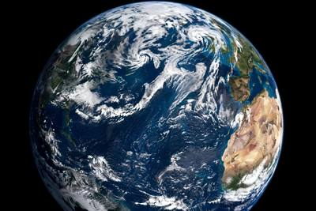
(Tranh minh họa theo phong cách ảnh thật)
🖼️ Nhìn hình, em trả lời: Trái Đất nhìn từ vũ trụ trông giống vật gì?
2.1. Dẫn 1 — Trả lời viết ngắn: Địa lí có mặt trong đời sống mỗi ngày qua những việc nào? Em viết thành câu trả lời đầy đủ.
Gợi mở: Mỗi ngày em hoặc người thân có việc nào cần đến Địa lí? / Tìm đường, xem trời, trồng trọt — việc nào là của Địa lí?
Ý cần có: Địa lí có mặt trong đời sống mỗi ngày qua việc tìm đường đi, xem trời mưa hay nắng và biết mùa vụ trồng trọt.
2.2. Dẫn 2 — Nhớ có gợi ý: Điền vào chỗ trống: Học Địa lí để ______ bản đồ, xem được ______ thời tiết, hiểu ______ và biết ______ môi trường. (Ngân hàng từ: đọc, dự báo, thiên tai, bảo vệ)
Gợi mở: Chỗ trống đầu tiên là việc làm với bản đồ? / Chỗ trống thứ hai đi với thời tiết là từ nào?
Ý cần có: đọc bản đồ; dự báo thời tiết; thiên tai; bảo vệ môi trường.
2.3. Dẫn 3 — Tự trình bày (câu khơi gợi): Điều gì trong bài học hôm nay khiến em muốn tìm hiểu thêm về Trái Đất? Em muốn tìm hiểu điều gì, và vì sao?
Ý cần có: Bé nêu được cả 3 phần: (1) 1 điều cụ thể trong bài khiến bé muốn tìm hiểu thêm; (2) điều bé muốn tìm hiểu thêm; (3) lí do bé muốn tìm hiểu thêm.
Tiêu chí đạt: chặng chỉ tính là đã trả lời khi bé nêu được cả 3 phần (1 điều cụ thể trong bài, điều muốn tìm hiểu thêm, lí do); phụ huynh không được chấm sai chỉ vì bé thích một điều khác đáp án mẫu.
Gợi mở: Điều nào trong bài hôm nay làm em tò mò nhất? / Em muốn biết thêm điều gì về điều đó? / Vì sao em muốn biết thêm?
✍️ Chốt chặng: Em hãy tự nói hoặc tự viết đáp án đầy đủ của chặng này rồi mới bấm “Xem đáp án mẫu” để đối chiếu. Chưa tự trả lời được thì chưa qua chặng.
Xem đáp án mẫu
Học Địa lí giúp em đọc bản đồ, xem dự báo thời tiết, hiểu thiên tai và bảo vệ môi trường — nhờ đó hiểu hơn về thế giới quanh mình.
Câu khơi gợi không có một đáp án đúng duy nhất: bé tự nêu điều mình muốn tìm hiểu thêm cùng lí do.
Chặng 3 — Địa lí có vai trò gì trong cuộc sống?
⏱ Khoảng 25–30 phút: học ~8 phút + dẫn dắt ~10 phút + chốt ~8 phút.
- Địa lí có mặt trong đời sống mỗi ngày: tìm đường đi, xem trời mưa hay nắng, biết mùa vụ trồng trọt.
- Xem dự báo thời tiết trước khi ra khỏi nhà và dùng bản đồ để tìm đường là những việc dùng đến hiểu biết địa lí.
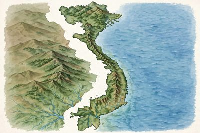
Ảnh: Milenioscuro — CC BY 4.0. Nguồn: Wikimedia Commons
🖼️ Nhìn hình, em trả lời: Đây là bản đồ gì? Học Địa lí luôn gắn với bản đồ để làm gì?
🔗 Sơ đồ liên kết — Chặng 3
Địa lí học về→ Trái Đất và con người dùng công cụ→ bản đồ, quả địa cầu giúp em→ đọc bản đồ, xem thời tiết nên trong đời sống→ tìm đường, biết mùa vụ
✏️ Em hãy vẽ lại sơ đồ này từ trí nhớ ra giấy, rồi đối chiếu với sơ đồ trên. Vẽ lại được mới tính là đạt chặng này.
Xem lại mô hình 3D ở chặng 1 (phần Thời tiết, Đời sống) để thấy Địa lí giúp gì trong đời sống hằng ngày.
3.1. Dẫn 1 — Trả lời viết ngắn: Học Địa lí luôn gắn với công cụ nào? Em viết thành câu trả lời đầy đủ.
Gợi mở: Muốn tìm đường đi em dùng gì? / Công cụ nào vẽ thu nhỏ bề mặt Trái Đất?
Ý cần có: Học Địa lí luôn gắn với bản đồ.
3.2. Dẫn 2 — Nhớ có gợi ý: Điền vào chỗ trống: Địa lí giúp em ______ trước khi ra khỏi nhà và ______ khi muốn đến một nơi lạ. (Ngân hàng từ: xem dự báo thời tiết, tìm đường)
Gợi mở: Trước khi ra khỏi nhà em xem gì? / Muốn đến nơi lạ em dùng gì để khỏi lạc?
Ý cần có: xem dự báo thời tiết; tìm đường.
3.3. Dẫn 3 — Tự trình bày: Nêu vai trò của Địa lí trong cuộc sống. (Kể 1–2 việc trong ngày mà em hoặc người thân đã dùng đến kiến thức Địa lí, và nói rõ việc đó giúp gì.)
Gợi mở: Tìm đường đi dùng gì? / Xem trời mưa hay nắng để làm gì? / Trồng trọt cần biết mùa vụ ra sao?
Ý chính cần có: Nêu được 1 việc cụ thể trong đời sống (tìm đường, xem thời tiết, mùa vụ...); nói rõ lợi ích của việc đó.
✍️ Chốt chặng: Em hãy tự nói hoặc tự viết đáp án đầy đủ của chặng này rồi mới bấm “Xem đáp án mẫu” để đối chiếu. Chưa tự trả lời được thì chưa qua chặng.
Xem đáp án mẫu
Địa lí giúp trong đời sống mỗi ngày: tìm đường đi, xem trời mưa hay nắng, biết mùa vụ trồng trọt; xem dự báo thời tiết, dùng bản đồ tìm đường.
📝 Tổng kết của em
Em hãy tự viết đáp án của từng chặng theo khung câu hỏi dưới đây (không viết tự do hoàn toàn).
Chặng 1 — Vì sao cần nắm vững các khái niệm cơ bản và kĩ năng địa lí trong học tập và trong sinh hoạt?
Chặng 2 — Học môn Địa lí có ý nghĩa và sự lí thú gì?
Chặng 3 — Địa lí có vai trò gì trong cuộc sống?
Em viết đáp án mỗi chặng vào vở theo khung câu hỏi trên.
Chặng 1: Khái niệm là hiểu biết nền tảng; kĩ năng là cách dùng bản đồ, sơ đồ, hình ảnh, bảng số liệu, biểu đồ; nắm khái niệm giúp giải thích và ứng xử với hiện tượng thiên nhiên hằng ngày; dùng thành thạo công cụ giúp hiểu cả điều không quan sát trực tiếp và dùng trong sinh hoạt.
Chặng 2: Học Địa lí giúp đọc bản đồ, xem dự báo thời tiết, hiểu thiên tai, bảo vệ môi trường. Câu khơi gợi: bé nêu 3 phần (điều cụ thể trong bài, điều muốn tìm hiểu thêm, lí do).
Chặng 3: Địa lí giúp trong đời sống mỗi ngày: tìm đường, xem thời tiết, biết mùa vụ.
✍️ Phiếu viết — Bài mở đầu. Tại sao cần học Địa lí?
Học xong bài này, em viết các câu dẫn dưới đây ra giấy (in phiếu bên dưới). Các câu trên trang và trong phiếu là cùng một bộ câu hỏi. Viết bằng lời của em, không cần viết đúng từng chữ trong bài.
1.1. Khi học Địa lí, ngoài việc thuộc tên các nơi, em còn cần nắm vững điều gì? Em viết thành câu trả lời đầy đủ.
Gợi mở: Thuộc tên các nơi có giúp em tìm đường không? / Muốn xem thời tiết thì cần kĩ năng gì?
Ý cần có: Khi học Địa lí, ngoài việc thuộc tên các nơi, em còn cần nắm vững các khái niệm cơ bản và kĩ năng địa lí.
1.2. Điền vào chỗ trống: Nắm khái niệm giúp ______ và ______ với hiện tượng thiên nhiên hằng ngày; kĩ năng là cách dùng bản đồ, sơ đồ, hình ảnh, ______, ______. (Ngân hàng từ: giải thích, ứng xử, bảng số liệu, biểu đồ)
Gợi mở: Nắm khái niệm giúp làm gì với hiện tượng thiên nhiên? / Kĩ năng dùng những công cụ nào ngoài bản đồ và sơ đồ?
Ý cần có: giải thích; ứng xử; bảng số liệu; biểu đồ.
1.3. Nêu tầm quan trọng của việc nắm vững các khái niệm cơ bản và kĩ năng địa lí trong học tập và trong sinh hoạt.
Ý cần có (4 ý): (1) Khái niệm là hiểu biết nền tảng. (2) Kĩ năng là cách dùng bản đồ, sơ đồ, hình ảnh, bảng số liệu, biểu đồ. (3) Nắm khái niệm giúp giải thích và ứng xử với hiện tượng thiên nhiên hằng ngày. (4) Dùng thành thạo công cụ giúp hiểu cả điều không quan sát trực tiếp và dùng trong sinh hoạt (tìm đường, xem thời tiết, mùa vụ).
Gợi mở: Khái niệm giúp gì? / Kĩ năng gồm những cách dùng nào? / Nhờ khái niệm và kĩ năng, em làm được gì trong sinh hoạt?
Ghi chú cho người chấm: Dẫn 3 dùng “Nêu” là hình thức thể hiện của “Hiểu được”, không đánh trượt vì sai động từ.
2.1. Địa lí có mặt trong đời sống mỗi ngày qua những việc nào? Em viết thành câu trả lời đầy đủ.
Gợi mở: Mỗi ngày em hoặc người thân có việc nào cần đến Địa lí? / Tìm đường, xem trời, trồng trọt — việc nào là của Địa lí?
Ý cần có: Địa lí có mặt trong đời sống mỗi ngày qua việc tìm đường đi, xem trời mưa hay nắng và biết mùa vụ trồng trọt.
2.2. Điền vào chỗ trống: Học Địa lí để ______ bản đồ, xem được ______ thời tiết, hiểu ______ và biết ______ môi trường. (Ngân hàng từ: đọc, dự báo, thiên tai, bảo vệ)
Gợi mở: Chỗ trống đầu tiên là việc làm với bản đồ?
Ý cần có: đọc bản đồ; dự báo thời tiết; thiên tai; bảo vệ môi trường.
2.3. Điều gì trong bài học hôm nay khiến em muốn tìm hiểu thêm về Trái Đất? Em muốn tìm hiểu điều gì, và vì sao?
Ý cần có: Bé nêu được cả 3 phần: (1) 1 điều cụ thể trong bài khiến bé muốn tìm hiểu thêm; (2) điều bé muốn tìm hiểu thêm; (3) lí do bé muốn tìm hiểu thêm.
Tiêu chí đạt: chặng chỉ tính là đã trả lời khi bé nêu được cả 3 phần (1 điều cụ thể trong bài, điều muốn tìm hiểu thêm, lí do); phụ huynh không được chấm sai chỉ vì bé thích một điều khác đáp án mẫu.
Gợi mở: Điều nào trong bài hôm nay làm em tò mò nhất? / Em muốn biết thêm điều gì về điều đó? / Vì sao em muốn biết thêm?
3.1. Học Địa lí luôn gắn với công cụ nào? Em viết thành câu trả lời đầy đủ.
Gợi mở: Muốn tìm đường đi em dùng gì? / Công cụ nào vẽ thu nhỏ bề mặt Trái Đất?
Ý cần có: Học Địa lí luôn gắn với bản đồ.
3.2. Điền vào chỗ trống: Địa lí giúp em ______ trước khi ra khỏi nhà và ______ khi muốn đến một nơi lạ. (Ngân hàng từ: xem dự báo thời tiết, tìm đường)
Gợi mở: Muốn đến nơi lạ em dùng gì để khỏi lạc?
Ý cần có: xem dự báo thời tiết; tìm đường.
3.3. Nêu vai trò của Địa lí trong cuộc sống. (Kể 1–2 việc trong ngày mà em hoặc người thân đã dùng đến kiến thức Địa lí, và nói rõ việc đó giúp gì.)
Gợi mở: Tìm đường đi dùng gì? / Xem trời mưa hay nắng để làm gì? / Trồng trọt cần biết mùa vụ ra sao?
Ý chính cần có: Nêu được 1 việc cụ thể trong đời sống (tìm đường, xem thời tiết, mùa vụ...); nói rõ lợi ích của việc đó.
Phiếu viết — Bài mở đầu. Tại sao cần học Địa lí?
Họ và tên: ______________________ Lớp: __________
Các câu hỏi chặng của bài này: 1. Vì sao cần nắm vững các khái niệm cơ bản và kĩ năng địa lí trong học tập và trong sinh hoạt? 2. Học môn Địa lí có ý nghĩa và sự lí thú gì? 3. Địa lí có vai trò gì trong cuộc sống?
1.1. Khi học Địa lí, ngoài việc thuộc tên các nơi, em còn cần nắm vững điều gì? Em viết thành câu trả lời đầy đủ.
1.2. Điền vào chỗ trống: Nắm khái niệm giúp ______ và ______ với hiện tượng thiên nhiên hằng ngày; kĩ năng là cách dùng bản đồ, sơ đồ, hình ảnh, ______, ______. (Ngân hàng từ: giải thích, ứng xử, bảng số liệu, biểu đồ)
1.3. Nêu tầm quan trọng của việc nắm vững các khái niệm cơ bản và kĩ năng địa lí trong học tập và trong sinh hoạt.
2.1. Địa lí có mặt trong đời sống mỗi ngày qua những việc nào? Em viết thành câu trả lời đầy đủ.
2.2. Điền vào chỗ trống: Học Địa lí để ______ bản đồ, xem được ______ thời tiết, hiểu ______ và biết ______ môi trường. (Ngân hàng từ: đọc, dự báo, thiên tai, bảo vệ)
2.3. Điều gì trong bài học hôm nay khiến em muốn tìm hiểu thêm về Trái Đất? Em muốn tìm hiểu điều gì, và vì sao?
3.1. Học Địa lí luôn gắn với công cụ nào? Em viết thành câu trả lời đầy đủ.
3.2. Điền vào chỗ trống: Địa lí giúp em ______ trước khi ra khỏi nhà và ______ khi muốn đến một nơi lạ. (Ngân hàng từ: xem dự báo thời tiết, tìm đường)
3.3. Nêu vai trò của Địa lí trong cuộc sống. (Kể 1–2 việc trong ngày mà em hoặc người thân đã dùng đến kiến thức Địa lí, và nói rõ việc đó giúp gì.)
Em tự tick: Em trả lời được mấy câu bước 3? ☐ Cả 3 ☐ 2 ☐ 1 ☐ Chưa được — cần xem lại chặng: ______
Bài 1. Hệ thống kinh, vĩ tuyến. Tọa độ địa lí
Chặng 1 — Kinh tuyến, vĩ tuyến, kinh tuyến gốc, vĩ tuyến gốc (Xích đạo), các bán cầu và toạ độ địa lí là gì?
⏱ Khoảng 25–30 phút: học ~8 phút + dẫn dắt ~10 phút + chốt ~8 phút.
- Kinh tuyến là đường dọc, nối hai cực Bắc – Nam. Vĩ tuyến là đường ngang (đường tròn) song song với Xích đạo.
- Kinh tuyến gốc là kinh tuyến 0°, đi qua Đài thiên văn Gờ-rin-uýt ở Luân Đôn (Anh).
- Vĩ tuyến gốc là Xích đạo (0°) — vĩ tuyến dài nhất, chia Trái Đất thành bán cầu Bắc và bán cầu Nam.
- Kinh độ của một điểm là khoảng cách góc từ điểm đó tới kinh tuyến gốc; vĩ độ là khoảng cách góc tới Xích đạo.
- Tọa độ địa lí của một điểm gồm kinh độ + vĩ độ — giống như “số nhà” của điểm đó trên Trái Đất.
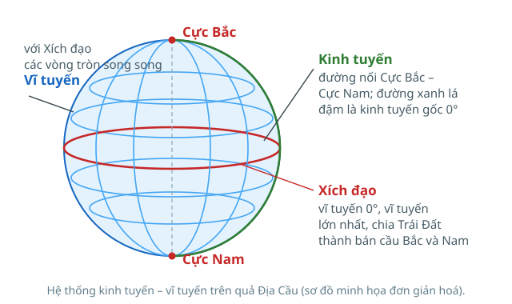
Ảnh: Djexplo — CC0. Nguồn: Wikimedia Commons
🖼️ Nhìn hình, em trả lời: Đường dọc và đường ngang trên sơ đồ là đường gì?
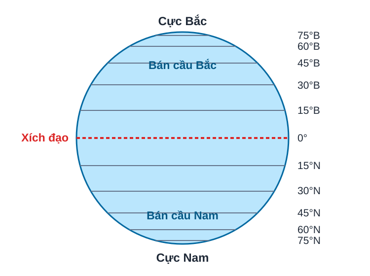
Sơ đồ tự vẽ minh họa (đơn giản hoá).
🖼️ Nhìn hình, em trả lời: Đường ngang nằm giữa quả cầu, chia đôi Trái Đất, tên là gì?
🔗 Sơ đồ liên kết — Chặng 1
Đường dọc (kinh tuyến) + đường ngang (vĩ tuyến) hợp thành→ lưới kinh, vĩ tuyến ghi được→ toạ độ địa lí (kinh độ + vĩ độ) nhờ đó→ xác định vị trí mọi nơi; Xích đạo chia→ bán cầu Bắc, bán cầu Nam
✏️ Em hãy vẽ lại sơ đồ này từ trí nhớ ra giấy, rồi đối chiếu với sơ đồ trên. Vẽ lại được mới tính là đạt chặng này.
1.1. Dẫn 1 — Trả lời viết ngắn: Kinh tuyến là đường như thế nào? Em viết thành câu trả lời đầy đủ.
Gợi mở: Đường nào chạy dọc, đường nào chạy ngang? / Đường nào song song với Xích đạo?
Ý cần có: Kinh tuyến là đường dọc, nối hai cực Bắc – Nam.
1.2. Dẫn 2 — Nhớ có gợi ý: Điền vào chỗ trống: Kinh tuyến gốc là kinh tuyến ______°, đi qua Đài thiên văn ______ ở Luân Đôn; Xích đạo là vĩ tuyến gốc ______°. (Ngân hàng từ: 0, Gờ-rin-uýt, 0)
Gợi mở: Kinh tuyến gốc bao nhiêu độ? / Đi qua đâu? / Vĩ tuyến gốc là đường nào, bao nhiêu độ?
Ý cần có: Kinh tuyến gốc 0°, qua Đài thiên văn Gờ-rin-uýt ở Luân Đôn (Anh); Xích đạo là vĩ tuyến gốc 0°, vĩ tuyến dài nhất, chia Trái Đất thành bán cầu Bắc và bán cầu Nam.
1.3. Dẫn 3 — Tự trình bày: Hãy nêu: kinh tuyến, vĩ tuyến, kinh tuyến gốc, vĩ tuyến gốc (Xích đạo), các bán cầu và toạ độ địa lí là gì?
Gợi mở: Đường dọc là gì? / Đường ngang là gì? / Gốc kinh và gốc vĩ là đường nào? / Toạ độ gồm mấy thành phần?
Ý cần có: Kinh tuyến: đường dọc nối hai cực. Vĩ tuyến: đường ngang song song Xích đạo. Kinh tuyến gốc: 0°, qua Gờ-rin-uýt. Vĩ tuyến gốc: Xích đạo 0°, dài nhất, chia bán cầu Bắc và bán cầu Nam. Toạ độ địa lí = kinh độ + vĩ độ.
✍️ Chốt chặng: Em hãy tự nói hoặc tự viết đáp án đầy đủ của chặng này rồi mới bấm “Xem đáp án mẫu” để đối chiếu. Chưa tự trả lời được thì chưa qua chặng.
Xem đáp án mẫu
Kinh tuyến: đường dọc nối hai cực. Vĩ tuyến: đường ngang song song Xích đạo. Kinh tuyến gốc: 0°, qua Gờ-rin-uýt. Vĩ tuyến gốc: Xích đạo 0°, dài nhất, chia bán cầu Bắc và bán cầu Nam. Toạ độ địa lí = kinh độ + vĩ độ.
Chặng 2 — Em xác định kinh tuyến gốc, Xích đạo, các bán cầu và ghi tọa độ địa lí của một địa điểm trên bản đồ như thế nào?
⏱ Khoảng 25–30 phút: học ~8 phút + dẫn dắt ~10 phút + chốt ~8 phút.
- Kinh tuyến gốc là kinh tuyến 0°, đi qua Đài thiên văn Gờ-rin-uýt ở Luân Đôn (Anh).
- Xích đạo là vĩ tuyến gốc 0°, chia Trái Đất thành bán cầu Bắc và bán cầu Nam.
- Kinh độ của một điểm là khoảng cách góc từ điểm đó tới kinh tuyến gốc; vĩ độ là khoảng cách góc tới Xích đạo.
- Tọa độ địa lí của một điểm gồm kinh độ + vĩ độ — giống như “số nhà” của điểm đó trên Trái Đất.
- Muốn ghi tọa độ của một điểm, em xác định điểm đó ở phía đông hay phía tây kinh tuyến gốc và ở phía bắc hay phía nam Xích đạo, rồi ghi đủ cả kinh độ và vĩ độ.
Xem lại mô hình 3D ở chặng 1 (nút Xích đạo, Kinh tuyến gốc) để chỉ các đường gốc và các bán cầu trên quả địa cầu.
2.1. Dẫn 1 — Trả lời viết ngắn: Xích đạo là vĩ tuyến gốc bao nhiêu độ và chia Trái Đất thành những bán cầu nào? Em viết thành câu trả lời đầy đủ.
Gợi mở: Xích đạo nằm ở đâu? / Nó chia Trái Đất thành mấy phần?
Ý cần có: Xích đạo là vĩ tuyến gốc 0°, chia Trái Đất thành bán cầu Bắc và bán cầu Nam.
2.2. Dẫn 2 — Nhớ có gợi ý: Điền vào chỗ trống: Muốn ghi “số nhà” của một điểm, em cần ghi ______ độ và ______ độ của điểm đó. (Ngân hàng từ: kinh, vĩ)
Gợi mở: Muốn ghi “số nhà” của một điểm trên Trái Đất thì cần mấy con số? / Mỗi số đo tới đường gốc nào?
Ý chính cần có: Tọa độ địa lí gồm kinh độ và vĩ độ; kinh độ là khoảng cách góc tới kinh tuyến gốc (0°, qua Gờ-rin-uýt ở Luân Đôn), vĩ độ là khoảng cách góc tới Xích đạo (vĩ tuyến gốc 0°, dài nhất, chia Trái Đất thành bán cầu Bắc và bán cầu Nam).
2.3. Dẫn 3 — Tự trình bày (nhiệm vụ thực hành): Nhiệm vụ thực hành: (a) Chỉ kinh tuyến gốc trên bản đồ/quả Địa Cầu. (b) Chỉ Xích đạo trên bản đồ/quả Địa Cầu. (c) Nói địa điểm ở bán cầu nào. (d) Ghi tọa độ của địa điểm vào khung dưới đây.
Tọa độ mẫu do giáo viên/bài dạy cung cấp.
Khung ghi tọa độ — Kinh độ: __________° (khoanh tròn: Đông / Tây) | Vĩ độ: __________° (khoanh tròn: Bắc / Nam)
Ý cần có: (a) Chỉ đúng kinh tuyến gốc 0° qua Gờ-rin-uýt. (b) Chỉ đúng Xích đạo 0°. (c) Nói đúng bán cầu theo vị trí so với Xích đạo. (d) Ghi đủ kinh độ và vĩ độ, kèm Đông/Tây và Bắc/Nam.
Gợi mở: Kinh tuyến gốc là đường nào? / Xích đạo chia Trái Đất thành mấy phần? / Muốn ghi “số nhà” của một điểm cần mấy con số?
Lưu ý: Tọa độ mẫu do giáo viên/bài dạy cung cấp; không tự bịa số tọa độ.
✍️ Chốt chặng: Em hãy tự nói hoặc tự viết đáp án đầy đủ của chặng này rồi mới bấm “Xem đáp án mẫu” để đối chiếu. Chưa tự trả lời được thì chưa qua chặng.
Xem đáp án mẫu
Kinh tuyến gốc 0° qua Gờ-rin-uýt; Xích đạo 0° chia bán cầu Bắc và bán cầu Nam; kinh độ/vĩ độ là khoảng cách góc tới kinh tuyến gốc/Xích đạo; tọa độ = kinh độ + vĩ độ; muốn ghi tọa độ thì xác định đông/tây kinh tuyến gốc và bắc/nam Xích đạo rồi ghi đủ cả hai.
📝 Tổng kết của em
Em hãy tự viết đáp án của từng chặng theo khung câu hỏi dưới đây (không viết tự do hoàn toàn).
Chặng 1 — Kinh tuyến, vĩ tuyến, kinh tuyến gốc, vĩ tuyến gốc (Xích đạo), các bán cầu và toạ độ địa lí là gì?
Chặng 2 — Em xác định kinh tuyến gốc, Xích đạo, các bán cầu và ghi tọa độ địa lí của một địa điểm trên bản đồ như thế nào?
Em viết đáp án mỗi chặng vào vở theo khung câu hỏi trên.
Chặng 1: Kinh tuyến dọc nối hai cực; vĩ tuyến ngang song song Xích đạo; gốc kinh 0° qua Gờ-rin-uýt; gốc vĩ là Xích đạo 0°; toạ độ = kinh độ + vĩ độ.
Chặng 2: Kinh tuyến gốc 0° qua Gờ-rin-uýt; Xích đạo 0° chia Bắc/Nam; kinh độ/vĩ độ là khoảng cách góc tới gốc; tọa độ = kinh độ + vĩ độ; ghi tọa độ thì xác định đông/tây kinh tuyến gốc và bắc/nam Xích đạo rồi ghi đủ cả hai.
✍️ Phiếu viết — Bài 1. Hệ thống kinh, vĩ tuyến. Tọa độ địa lí
Học xong bài này, em viết các câu dẫn dưới đây ra giấy (in phiếu bên dưới). Các câu trên trang và trong phiếu là cùng một bộ câu hỏi. Viết bằng lời của em, không cần viết đúng từng chữ trong bài.
1.1. Kinh tuyến là đường như thế nào? Em viết thành câu trả lời đầy đủ.
Gợi mở: Đường nào chạy dọc, đường nào chạy ngang? / Đường nào song song với Xích đạo?
Ý cần có: Kinh tuyến là đường dọc, nối hai cực Bắc – Nam.
1.2. Điền vào chỗ trống: Kinh tuyến gốc là kinh tuyến ______°, đi qua Đài thiên văn ______ ở Luân Đôn; Xích đạo là vĩ tuyến gốc ______°. (Ngân hàng từ: 0, Gờ-rin-uýt, 0)
Gợi mở: Kinh tuyến gốc bao nhiêu độ? / Đi qua đâu?
Ý cần có: Kinh tuyến gốc 0°, qua Gờ-rin-uýt; Xích đạo là vĩ tuyến gốc 0°.
1.3. Hãy nêu: kinh tuyến, vĩ tuyến, kinh tuyến gốc, vĩ tuyến gốc (Xích đạo), các bán cầu và toạ độ địa lí là gì?
Gợi mở: Đường dọc là gì? / Đường ngang là gì? / Toạ độ gồm gì?
Ý cần có: Kinh tuyến dọc nối hai cực; vĩ tuyến ngang song song Xích đạo; gốc kinh 0° qua Gờ-rin-uýt; gốc vĩ là Xích đạo 0°; toạ độ = kinh độ + vĩ độ.
2.1. Xích đạo là vĩ tuyến gốc bao nhiêu độ và chia Trái Đất thành những bán cầu nào? Em viết thành câu trả lời đầy đủ.
Gợi mở: Xích đạo nằm ở đâu? / Nó chia Trái Đất thành mấy phần?
Ý cần có: Xích đạo là vĩ tuyến gốc 0°, chia Trái Đất thành bán cầu Bắc và bán cầu Nam.
2.2. Điền vào chỗ trống: Muốn ghi “số nhà” của một điểm, em cần ghi ______ độ và ______ độ của điểm đó. (Ngân hàng từ: kinh, vĩ)
Gợi mở: Muốn ghi “số nhà” của một điểm trên Trái Đất thì cần mấy con số? / Mỗi số đo tới đường gốc nào?
Ý chính cần có: Tọa độ địa lí gồm kinh độ và vĩ độ; kinh độ là khoảng cách góc tới kinh tuyến gốc (0°, qua Gờ-rin-uýt ở Luân Đôn), vĩ độ là khoảng cách góc tới Xích đạo (vĩ tuyến gốc 0°, dài nhất, chia Trái Đất thành bán cầu Bắc và bán cầu Nam).
2.3. Nhiệm vụ thực hành: (a) Chỉ kinh tuyến gốc trên bản đồ/quả Địa Cầu. (b) Chỉ Xích đạo trên bản đồ/quả Địa Cầu. (c) Nói địa điểm ở bán cầu nào. (d) Ghi tọa độ của địa điểm vào khung dưới đây.
Tọa độ mẫu do giáo viên/bài dạy cung cấp.
Khung ghi tọa độ — Kinh độ: __________° (khoanh tròn: Đông / Tây) | Vĩ độ: __________° (khoanh tròn: Bắc / Nam)
Ý cần có: (a) Chỉ đúng kinh tuyến gốc 0° qua Gờ-rin-uýt. (b) Chỉ đúng Xích đạo 0°. (c) Nói đúng bán cầu theo vị trí so với Xích đạo. (d) Ghi đủ kinh độ và vĩ độ, kèm Đông/Tây và Bắc/Nam.
Gợi mở: Kinh tuyến gốc là đường nào? / Xích đạo chia Trái Đất thành mấy phần? / Muốn ghi “số nhà” của một điểm cần mấy con số?
Lưu ý: Tọa độ mẫu do giáo viên/bài dạy cung cấp; không tự bịa số tọa độ.
Phiếu viết — Bài 1. Hệ thống kinh, vĩ tuyến. Tọa độ địa lí
Họ và tên: ______________________ Lớp: __________
Các câu hỏi chặng của bài này: 1. Kinh tuyến, vĩ tuyến, kinh tuyến gốc, vĩ tuyến gốc (Xích đạo), các bán cầu và toạ độ địa lí là gì? 2. Em xác định kinh tuyến gốc, Xích đạo, các bán cầu và ghi tọa độ địa lí của một địa điểm trên bản đồ như thế nào?
1.1. Kinh tuyến là đường như thế nào? Em viết thành câu trả lời đầy đủ.
1.2. Điền vào chỗ trống: Kinh tuyến gốc là kinh tuyến ______°, đi qua Đài thiên văn ______ ở Luân Đôn; Xích đạo là vĩ tuyến gốc ______°. (Ngân hàng từ: 0, Gờ-rin-uýt, 0)
1.3. Hãy nêu: kinh tuyến, vĩ tuyến, kinh tuyến gốc, vĩ tuyến gốc (Xích đạo), các bán cầu và toạ độ địa lí là gì?
2.1. Xích đạo là vĩ tuyến gốc bao nhiêu độ và chia Trái Đất thành những bán cầu nào? Em viết thành câu trả lời đầy đủ.
2.2. Điền vào chỗ trống: Muốn ghi “số nhà” của một điểm, em cần ghi ______ độ và ______ độ của điểm đó. (Ngân hàng từ: kinh, vĩ)
2.3. Nhiệm vụ thực hành: (a) Chỉ kinh tuyến gốc trên bản đồ/quả Địa Cầu. (b) Chỉ Xích đạo trên bản đồ/quả Địa Cầu. (c) Nói địa điểm ở bán cầu nào. (d) Ghi tọa độ của địa điểm vào khung dưới đây.
Tọa độ mẫu do giáo viên/bài dạy cung cấp.
Khung ghi tọa độ — Kinh độ: __________° (khoanh tròn: Đông / Tây) | Vĩ độ: __________° (khoanh tròn: Bắc / Nam)
Em tự tick: Em trả lời được mấy câu bước 3? ☐ Cả 2 ☐ 1 ☐ Chưa được — cần xem lại chặng: ______
Tự trả lời trong đầu trước, rồi bấm vào câu hỏi để kiểm tra đáp án. (Hình minh họa nằm ở phần bài học phía trên; đáp án không lặp lại hình để em tự nhớ lại nhé!)
Bài 2. Bản đồ. Một số lưới kinh, vĩ tuyến. Phương hướng trên bản đồ
Chặng 1 — Bản đồ là gì?
⏱ Khoảng 25–30 phút: học ~8 phút + dẫn dắt ~10 phút + chốt ~8 phút.
- Bản đồ là hình vẽ thu nhỏ bề mặt Trái Đất (hoặc một khu vực) lên mặt phẳng, theo một tỉ lệ nhất định.
1.1. Dẫn 1 — Trả lời viết ngắn: Bản đồ vẽ bề mặt Trái Đất lên đâu? Em viết thành câu trả lời đầy đủ.
Gợi mở: Bản đồ vẽ to bằng thật hay thu nhỏ lại? / Vẽ lên giấy là vẽ lên cái gì?
Ý cần có: Bản đồ vẽ bề mặt Trái Đất lên mặt phẳng.
1.2. Dẫn 2 — Nhớ có gợi ý: Điền vào chỗ trống: Bản đồ là hình vẽ ______ bề mặt Trái Đất lên mặt phẳng, theo một ______ nhất định. (Ngân hàng từ: thu nhỏ, tỉ lệ)
Gợi mở: Bản đồ vẽ cái gì? / Vẽ to bằng thật hay thu nhỏ lại?
Ý chính cần có: Bản đồ là hình vẽ thu nhỏ bề mặt Trái Đất (hoặc một khu vực) lên mặt phẳng, theo một tỉ lệ nhất định.
1.3. Dẫn 3 — Tự trình bày: Nêu khái niệm bản đồ.
Gợi mở: Bản đồ vẽ cái gì? / Vẽ to bằng thật hay thu nhỏ lại?
Ý chính cần có: Bản đồ là hình vẽ thu nhỏ bề mặt Trái Đất (hoặc một khu vực) lên mặt phẳng, theo một tỉ lệ nhất định.
✍️ Chốt chặng: Em hãy tự nói hoặc tự viết đáp án đầy đủ của chặng này rồi mới bấm “Xem đáp án mẫu” để đối chiếu. Chưa tự trả lời được thì chưa qua chặng.
Xem đáp án mẫu
Bản đồ là hình vẽ thu nhỏ bề mặt Trái Đất (hoặc một khu vực) lên mặt phẳng, theo một tỉ lệ nhất định.
Chặng 2 — Em nhận biết một số lưới kinh, vĩ tuyến của bản đồ thế giới như thế nào?
⏱ Khoảng 25–30 phút: học ~8 phút + dẫn dắt ~10 phút + chốt ~8 phút.
🖼️ Nhìn hình, em trả lời: Quan sát 2 lưới trong Hình 1, em hãy mô tả hình dạng của mỗi lưới và cho biết mỗi lưới thuộc phép chiếu nào.
- Để chuyển bề mặt cong của Trái Đất lên mặt phẳng, người ta dùng phép chiếu.
- Các phép chiếu khác nhau cho lưới kinh, vĩ tuyến có hình dạng khác nhau, như Hình 1 cho thấy.
- Hình 1 cho thấy lưới của phép chiếu hình nón: các kinh tuyến chụm về một điểm, các vĩ tuyến cong thành hình cung.
- Hình 1 cũng cho thấy lưới của phép chiếu hình trụ: kinh tuyến và vĩ tuyến đều thẳng và vuông góc với nhau.
- Nhìn hình dạng của lưới trong Hình 1, em nhận biết được bản đồ dùng phép chiếu nào; mỗi loại lưới có ưu điểm và hạn chế riêng nên cần chọn bản đồ phù hợp với mục đích sử dụng.
2.1. Dẫn 1 — Trả lời viết ngắn: Vì sao lưới kinh, vĩ tuyến trên các bản đồ trông khác nhau? Em viết thành câu trả lời đầy đủ.
Gợi mở: Bề mặt Trái Đất cong hay phẳng? / Muốn vẽ mặt cong lên mặt phẳng thì phải làm gì?
Ý cần có: Lưới kinh, vĩ tuyến trên các bản đồ trông khác nhau vì mỗi bản đồ dùng phép chiếu khác nhau.
2.2. Dẫn 2 — Nhớ có gợi ý: Điền vào chỗ trống: Lưới có kinh tuyến và vĩ tuyến đều thẳng, vuông góc là lưới của phép chiếu ______; lưới có kinh tuyến chụm về một điểm, vĩ tuyến cong thành hình cung là lưới của phép chiếu ______. (Ngân hàng từ: hình trụ, hình nón)
Gợi mở: Lưới nào thẳng và vuông góc? / Lưới nào chụm về một điểm?
Ý cần có: hình trụ; hình nón.
2.3. Dẫn 3 — Tự trình bày: Quan sát 2 lưới trong Hình 1, em hãy mô tả hình dạng của mỗi lưới và cho biết mỗi lưới thuộc phép chiếu nào.
Gợi mở: Kinh tuyến trong từng lưới ra sao? / Vĩ tuyến thẳng hay cong?
Ý cần có: Lưới hình nón: kinh tuyến chụm về một điểm, vĩ tuyến cong thành hình cung. Lưới hình trụ: kinh tuyến và vĩ tuyến đều thẳng, vuông góc.
✍️ Chốt chặng: Em hãy tự nói hoặc tự viết đáp án đầy đủ của chặng này rồi mới bấm “Xem đáp án mẫu” để đối chiếu. Chưa tự trả lời được thì chưa qua chặng.
Xem đáp án mẫu
Phép chiếu chuyển bề mặt cong lên mặt phẳng; các phép chiếu cho lưới khác nhau: hình nón (kinh tuyến chụm về một điểm, vĩ tuyến cong thành hình cung), hình trụ (kinh tuyến và vĩ tuyến đều thẳng, vuông góc); nhìn hình dạng lưới là nhận biết được phép chiếu, mỗi loại có ưu điểm và hạn chế riêng nên chọn bản đồ phù hợp mục đích.
Chặng 3 — Em xác định phương hướng trên bản đồ như thế nào?
⏱ Khoảng 25–30 phút: học ~8 phút + dẫn dắt ~10 phút + chốt ~8 phút.
- Trên bản đồ, nếu không có mũi tên chỉ hướng Bắc thì theo quy ước: phía trên là Bắc, phía dưới là Nam, bên phải là Đông, bên trái là Tây.
- Có 8 hướng: Bắc, Nam, Đông, Tây và 4 hướng phụ: Đông Bắc, Đông Nam, Tây Bắc, Tây Nam.
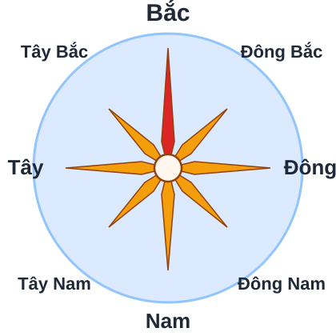
Sơ đồ tự vẽ minh họa (đơn giản hoá).
🖼️ Nhìn hình, em trả lời: Hướng ở giữa hướng Bắc và hướng Đông gọi là hướng gì?
Ảnh: Uwe Dedering — CC BY-SA 3.0. Nguồn: Wikimedia Commons
🖼️ Nhìn hình, em trả lời: Nhìn bản đồ, em trả lời: biển Đông nằm ở phía nào của nước ta?
🔗 Sơ đồ liên kết — Chặng 3
Bản đồ theo quy ước→ trên Bắc, dưới Nam, phải Đông, trái Tây thêm→ 4 hướng phụ thành→ 8 hướng giúp em→ xác định phương hướng, chỉ đường trên bản đồ
✏️ Em hãy vẽ lại sơ đồ này từ trí nhớ ra giấy, rồi đối chiếu với sơ đồ trên. Vẽ lại được mới tính là đạt chặng này.
Xem lại mô hình 3D ở chặng 2 (bước Hoa hướng 8 hướng) để thấy đủ 8 hướng trên bản đồ.
3.1. Dẫn 1 — Trả lời viết ngắn: Hướng Đông Bắc là một trong những hướng gì, và nằm giữa hai hướng nào? Em viết thành câu trả lời đầy đủ.
Gợi mở: Đông Bắc nằm giữa hai hướng nào? / Ngoài 4 hướng chính còn có mấy hướng phụ?
Ý cần có: Hướng Đông Bắc là một trong 4 hướng phụ, nằm giữa hướng Bắc và hướng Đông.
3.2. Dẫn 2 — Nhớ có gợi ý: Điền vào chỗ trống: Trên bản đồ không có mũi tên chỉ hướng Bắc: phía trên là ______, phía dưới là ______, bên phải là ______, bên trái là ______. (Ngân hàng từ: Bắc, Nam, Đông, Tây)
Gợi mở: Phía trên, phía dưới, bên phải, bên trái là hướng nào? / Ngoài 4 hướng chính còn hướng nào ở giữa?
Ý chính cần có: Theo quy ước: trên là Bắc, dưới là Nam, phải là Đông, trái là Tây; có tất cả 8 hướng: Bắc, Nam, Đông, Tây và 4 hướng phụ là Đông Bắc, Đông Nam, Tây Bắc, Tây Nam.
3.3. Dẫn 3 — Tự trình bày: Em đứng ở cổng trường, nhà em nằm về hướng Đông Bắc. Hãy viết cách em chỉ đường về nhà cho bạn bằng các hướng đã học.
Gợi mở: Đông Bắc nằm giữa hai hướng nào? / Trên đường về có những điểm mốc nào? / Em rẽ theo hướng nào ở mỗi ngã rẽ?
Ý chính cần có: Dùng đúng tên hướng (Đông Bắc = giữa Đông và Bắc); kể các điểm mốc theo thứ tự; mỗi lần rẽ nêu rõ hướng mới.
✍️ Chốt chặng: Em hãy tự nói hoặc tự viết đáp án đầy đủ của chặng này rồi mới bấm “Xem đáp án mẫu” để đối chiếu. Chưa tự trả lời được thì chưa qua chặng.
Xem đáp án mẫu
Quy ước: trên Bắc, dưới Nam, phải Đông, trái Tây; 8 hướng (4 chính + 4 phụ); chỉ đường bằng hướng + điểm mốc theo thứ tự.
📝 Tổng kết của em
Em hãy tự viết đáp án của từng chặng theo khung câu hỏi dưới đây (không viết tự do hoàn toàn).
Chặng 1 — Bản đồ là gì?
Chặng 2 — Em nhận biết một số lưới kinh, vĩ tuyến của bản đồ thế giới như thế nào?
Chặng 3 — Em xác định phương hướng trên bản đồ như thế nào?
Em viết đáp án mỗi chặng vào vở theo khung câu hỏi trên.
Chặng 1: Bản đồ là hình vẽ thu nhỏ bề mặt Trái Đất lên mặt phẳng, theo một tỉ lệ nhất định.
Chặng 2: Phép chiếu chuyển bề mặt cong lên mặt phẳng; hình nón (kinh tuyến chụm về một điểm, vĩ tuyến cong thành hình cung), hình trụ (đều thẳng, vuông góc); nhìn hình dạng lưới là nhận biết được phép chiếu.
Chặng 3: Quy ước trên Bắc, dưới Nam, phải Đông, trái Tây; 8 hướng; chỉ đường bằng hướng + điểm mốc.
✍️ Phiếu viết — Bài 2. Bản đồ. Một số lưới kinh, vĩ tuyến. Phương hướng trên bản đồ
Học xong bài này, em viết các câu dẫn dưới đây ra giấy (in phiếu bên dưới). Các câu trên trang và trong phiếu là cùng một bộ câu hỏi. Viết bằng lời của em, không cần viết đúng từng chữ trong bài.
1.1. Bản đồ vẽ bề mặt Trái Đất lên đâu? Em viết thành câu trả lời đầy đủ.
Gợi mở: Bản đồ vẽ to bằng thật hay thu nhỏ lại? / Vẽ lên giấy là vẽ lên cái gì?
Ý cần có: Bản đồ vẽ bề mặt Trái Đất lên mặt phẳng.
1.2. Điền vào chỗ trống: Bản đồ là hình vẽ ______ bề mặt Trái Đất lên mặt phẳng, theo một ______ nhất định. (Ngân hàng từ: thu nhỏ, tỉ lệ)
Gợi mở: Bản đồ vẽ cái gì? / Vẽ to bằng thật hay thu nhỏ lại?
Ý chính cần có: Bản đồ là hình vẽ thu nhỏ bề mặt Trái Đất (hoặc một khu vực) lên mặt phẳng, theo một tỉ lệ nhất định.
1.3. Nêu khái niệm bản đồ.
Gợi mở: Bản đồ vẽ cái gì? / Vẽ to bằng thật hay thu nhỏ lại?
Ý chính cần có: Bản đồ là hình vẽ thu nhỏ bề mặt Trái Đất (hoặc một khu vực) lên mặt phẳng, theo một tỉ lệ nhất định.
2.1. Vì sao lưới kinh, vĩ tuyến trên các bản đồ trông khác nhau? Em viết thành câu trả lời đầy đủ.
Gợi mở: Bề mặt Trái Đất cong hay phẳng? / Muốn vẽ mặt cong lên mặt phẳng thì phải làm gì?
Ý cần có: Lưới kinh, vĩ tuyến trên các bản đồ trông khác nhau vì mỗi bản đồ dùng phép chiếu khác nhau.
2.2. Điền vào chỗ trống: Lưới có kinh tuyến và vĩ tuyến đều thẳng, vuông góc là lưới của phép chiếu ______; lưới có kinh tuyến chụm về một điểm, vĩ tuyến cong thành hình cung là lưới của phép chiếu ______. (Ngân hàng từ: hình trụ, hình nón)
Gợi mở: Lưới nào thẳng và vuông góc?
Ý cần có: hình trụ; hình nón.
2.3. Quan sát 2 lưới trong Hình 1, em hãy mô tả hình dạng của mỗi lưới và cho biết mỗi lưới thuộc phép chiếu nào.
Gợi mở: Kinh tuyến trong từng lưới ra sao? / Vĩ tuyến thẳng hay cong?
Ý cần có: Lưới hình nón: kinh tuyến chụm về một điểm, vĩ tuyến cong thành hình cung. Lưới hình trụ: kinh tuyến và vĩ tuyến đều thẳng, vuông góc.
3.1. Hướng Đông Bắc là một trong những hướng gì, và nằm giữa hai hướng nào? Em viết thành câu trả lời đầy đủ.
Gợi mở: Đông Bắc nằm giữa hai hướng nào? / Ngoài 4 hướng chính còn có mấy hướng phụ?
Ý cần có: Hướng Đông Bắc là một trong 4 hướng phụ, nằm giữa hướng Bắc và hướng Đông.
3.2. Điền vào chỗ trống: Trên bản đồ không có mũi tên chỉ hướng Bắc: phía trên là ______, phía dưới là ______, bên phải là ______, bên trái là ______. (Ngân hàng từ: Bắc, Nam, Đông, Tây)
Gợi mở: Phía trên, phía dưới, bên phải, bên trái là hướng nào? / Ngoài 4 hướng chính còn hướng nào ở giữa?
Ý chính cần có: Theo quy ước: trên là Bắc, dưới là Nam, phải là Đông, trái là Tây; có tất cả 8 hướng: Bắc, Nam, Đông, Tây và 4 hướng phụ là Đông Bắc, Đông Nam, Tây Bắc, Tây Nam.
3.3. Em đứng ở cổng trường, nhà em nằm về hướng Đông Bắc. Hãy viết cách em chỉ đường về nhà cho bạn bằng các hướng đã học.
Gợi mở: Đông Bắc nằm giữa hai hướng nào? / Trên đường về có những điểm mốc nào? / Em rẽ theo hướng nào ở mỗi ngã rẽ?
Ý chính cần có: Dùng đúng tên hướng (Đông Bắc = giữa Đông và Bắc); kể các điểm mốc theo thứ tự; mỗi lần rẽ nêu rõ hướng mới.
Phiếu viết — Bài 2. Bản đồ. Một số lưới kinh, vĩ tuyến. Phương hướng trên bản đồ
Họ và tên: ______________________ Lớp: __________
Các câu hỏi chặng của bài này: 1. Bản đồ là gì? 2. Em nhận biết một số lưới kinh, vĩ tuyến của bản đồ thế giới như thế nào? 3. Em xác định phương hướng trên bản đồ như thế nào?
1.1. Bản đồ vẽ bề mặt Trái Đất lên đâu? Em viết thành câu trả lời đầy đủ.
1.2. Điền vào chỗ trống: Bản đồ là hình vẽ ______ bề mặt Trái Đất lên mặt phẳng, theo một ______ nhất định. (Ngân hàng từ: thu nhỏ, tỉ lệ)
1.3. Nêu khái niệm bản đồ.
2.1. Vì sao lưới kinh, vĩ tuyến trên các bản đồ trông khác nhau? Em viết thành câu trả lời đầy đủ.
2.2. Điền vào chỗ trống: Lưới có kinh tuyến và vĩ tuyến đều thẳng, vuông góc là lưới của phép chiếu ______; lưới có kinh tuyến chụm về một điểm, vĩ tuyến cong thành hình cung là lưới của phép chiếu ______. (Ngân hàng từ: hình trụ, hình nón)
2.3. Quan sát 2 lưới trong Hình 1, em hãy mô tả hình dạng của mỗi lưới và cho biết mỗi lưới thuộc phép chiếu nào.
3.1. Hướng Đông Bắc là một trong những hướng gì, và nằm giữa hai hướng nào? Em viết thành câu trả lời đầy đủ.
3.2. Điền vào chỗ trống: Trên bản đồ không có mũi tên chỉ hướng Bắc: phía trên là ______, phía dưới là ______, bên phải là ______, bên trái là ______. (Ngân hàng từ: Bắc, Nam, Đông, Tây)
3.3. Em đứng ở cổng trường, nhà em nằm về hướng Đông Bắc. Hãy viết cách em chỉ đường về nhà cho bạn bằng các hướng đã học.
Em tự tick: Em trả lời được mấy câu bước 3? ☐ Cả 3 ☐ 2 ☐ 1 ☐ Chưa được — cần xem lại chặng: ______
Bài 3. Tỉ lệ bản đồ. Tính khoảng cách thực tế dựa vào tỉ lệ bản đồ
- Tỉ lệ bản đồ cho biết bản đồ đã bị thu nhỏ bao nhiêu lần so với thực tế.
- Ví dụ tỉ lệ 1 : 100 000 nghĩa là: 1 cm trên bản đồ bằng 100 000 cm ngoài thực tế, tức 1 km.
- Có 2 dạng tỉ lệ: tỉ lệ số (viết dạng phân số) và tỉ lệ thước (một cây thước có chia vạch sẵn).
- Công thức: Khoảng cách thực tế = khoảng cách trên bản đồ × số mẫu của tỉ lệ.
- Ví dụ: bản đồ tỉ lệ 1 : 200 000, đo được 3 cm → thực tế = 3 × 200 000 = 600 000 cm = 6 km.
- Tỉ lệ càng lớn (mẫu số càng nhỏ) thì bản đồ càng chi tiết nhưng chỉ vẽ được khu vực càng hẹp.
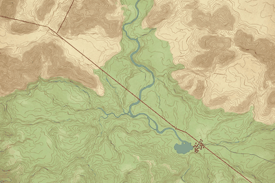
Hình minh họa tạo bằng AI theo phong cách bản đồ địa hình (không phải bản đồ thật).
Ảnh: Milenioscuro — CC BY 4.0. Nguồn: Wikimedia Commons
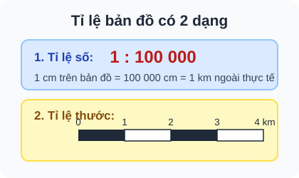
Tự trả lời trong đầu trước, rồi bấm vào câu hỏi để kiểm tra đáp án. (Hình minh họa nằm ở phần bài học phía trên; đáp án không lặp lại hình để em tự nhớ lại nhé!)
✍️ Viết để ôn lại — Bài 3. Tỉ lệ bản đồ. Tính khoảng cách thực tế dựa vào tỉ lệ bản đồ
Trước khi suy luận, em ôn lại nội dung bài bằng 2 câu này (in phiếu bên dưới). Viết bằng lời của em, không cần viết đúng từng chữ trong bài.
Câu 1. Tỉ lệ bản đồ cho biết điều gì? Lấy ví dụ với tỉ lệ 1 : 100 000.
Gợi mở: Bản đồ đã thu nhỏ bao nhiêu lần? / 1 cm trên bản đồ bằng bao nhiêu ngoài thực tế?
Ý chính cần có: Tỉ lệ bản đồ cho biết bản đồ đã bị thu nhỏ bao nhiêu lần so với thực tế; ví dụ 1 : 100 000 nghĩa là 1 cm trên bản đồ bằng 100 000 cm ngoài thực tế, tức 1 km.
Câu 2. Có mấy dạng tỉ lệ bản đồ? Nêu công thức tính khoảng cách thực tế.
Gợi mở: Tỉ lệ viết dạng phân số gọi là gì? / Tỉ lệ vẽ dạng cây thước gọi là gì? / Muốn đổi cm trên bản đồ ra thực tế thì nhân với số nào?
Ý chính cần có: Có 2 dạng tỉ lệ: tỉ lệ số (viết dạng phân số) và tỉ lệ thước (một cây thước có chia vạch sẵn); khoảng cách thực tế bằng khoảng cách trên bản đồ nhân với mẫu số tỉ lệ, rồi đổi đơn vị.
Phiếu viết ôn lại — Bài 3. Tỉ lệ bản đồ. Tính khoảng cách thực tế dựa vào tỉ lệ bản đồ
Họ và tên: ______________________ Lớp: __________
Câu 1. Tỉ lệ bản đồ cho biết điều gì? Lấy ví dụ với tỉ lệ 1 : 100 000.
Câu 2. Có mấy dạng tỉ lệ bản đồ? Nêu công thức tính khoảng cách thực tế.
Viết xong, bấm xem “Ý cần có” để tự tick: em đủ mấy ý?
✍️ Viết ra suy nghĩ của em — Bài 3. Tỉ lệ bản đồ. Tính khoảng cách thực tế dựa vào tỉ lệ bản đồ
Học xong bài này, em viết 2 câu trả lời ra giấy (in phiếu bên dưới). Viết bằng lời của em, không cần viết đúng từng chữ trong bài.
Câu 1. Vì sao cùng một đoạn đường, vẽ trên bản đồ tỉ lệ 1 : 100 000 lại ngắn hơn vẽ trên bản đồ 1 : 10 000?
Gợi mở: Tỉ lệ cho biết điều gì? / Mẫu số càng lớn nghĩa là thu nhỏ càng nhiều hay càng ít? / 1 cm trên bản đồ 1 : 100 000 bằng bao nhiêu ngoài thực tế?
Ý chính cần có: Tỉ lệ cho biết bản đồ bị thu nhỏ bao nhiêu lần; mẫu số càng lớn, thu nhỏ càng nhiều nên hình càng ngắn; 1 cm trên bản đồ 1 : 100 000 = 100 000 cm = 1 km ngoài thực tế.
Câu 2. Trên bản đồ tỉ lệ 1 : 100 000, đoạn đường từ nhà em đến trường dài 4 cm. Em hãy viết lời giải tính xem thực tế đoạn đường đó dài bao nhiêu ki-lô-mét.
Gợi mở: Công thức tính khoảng cách thực tế là gì? / 4 × 100 000 bằng bao nhiêu cm? / Đổi sang km bằng cách nào?
Ý chính cần có: Khoảng cách thực tế = khoảng cách trên bản đồ × mẫu số tỉ lệ; 4 × 100 000 = 400 000 cm; 400 000 cm = 4 km.
Phiếu viết — Bài 3. Tỉ lệ bản đồ. Tính khoảng cách thực tế dựa vào tỉ lệ bản đồ
Họ và tên: ______________________ Lớp: __________
Câu 1. Vì sao cùng một đoạn đường, vẽ trên bản đồ tỉ lệ 1 : 100 000 lại ngắn hơn vẽ trên bản đồ 1 : 10 000?
Câu 2. Trên bản đồ tỉ lệ 1 : 100 000, đoạn đường từ nhà em đến trường dài 4 cm. Em hãy viết lời giải tính xem thực tế đoạn đường đó dài bao nhiêu ki-lô-mét.
Viết xong, bấm xem “Ý cần có” để tự tick: em đủ mấy ý?
Bài 4. Kí hiệu và bảng chú giải bản đồ. Tìm đường đi trên bản đồ
- Kí hiệu bản đồ là các hình vẽ, màu sắc, chữ viết dùng để thể hiện các đối tượng địa lí lên bản đồ.
- Có 3 loại kí hiệu: kí hiệu điểm (thành phố, sân bay, mỏ khoáng sản), kí hiệu đường (sông, đường đi, biên giới), kí hiệu diện (rừng, biển, vùng trồng trọt — thường là mảng màu).
- Bảng chú giải là nơi giải thích ý nghĩa của tất cả các kí hiệu trên bản đồ.
- Muốn đọc bản đồ: đọc bảng chú giải trước, rồi mới đối chiếu kí hiệu trên bản đồ.
- Tìm đường đi trên bản đồ: xác định điểm bắt đầu → nhìn hướng cần đi → lần theo đường và các mốc dọc đường → tới điểm đến.
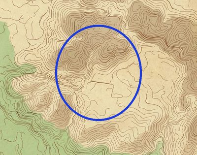
Hình minh họa tạo bằng AI theo phong cách bản đồ địa hình (không phải bản đồ thật).
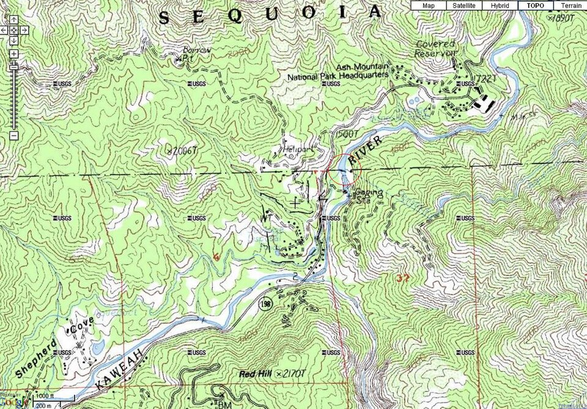
Hình minh họa tạo bằng AI theo phong cách bản đồ địa hình (không phải bản đồ thật).
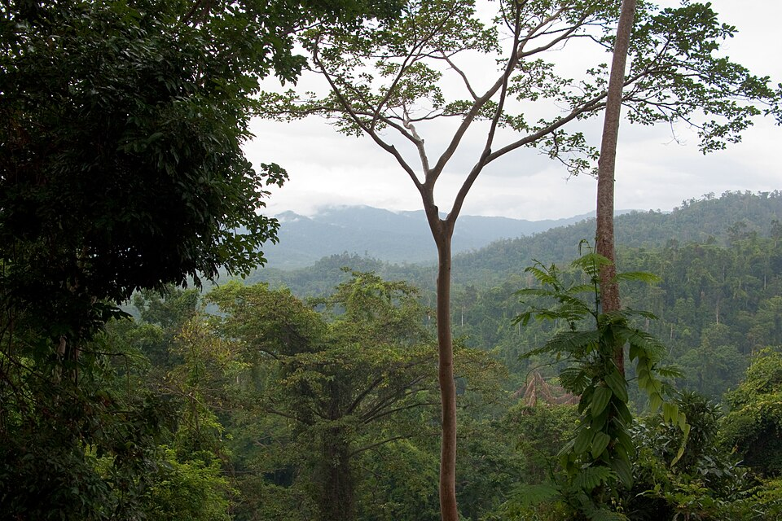
(Tranh minh họa theo phong cách ảnh thật)
Tự trả lời trong đầu trước, rồi bấm vào câu hỏi để kiểm tra đáp án. (Hình minh họa nằm ở phần bài học phía trên; đáp án không lặp lại hình để em tự nhớ lại nhé!)
✍️ Viết để ôn lại — Bài 4. Kí hiệu và bảng chú giải bản đồ. Tìm đường đi trên bản đồ
Trước khi suy luận, em ôn lại nội dung bài bằng 2 câu này (in phiếu bên dưới). Viết bằng lời của em, không cần viết đúng từng chữ trong bài.
Câu 1. Có mấy loại kí hiệu bản đồ? Kể tên và cho ví dụ mỗi loại.
Gợi mở: Thành phố, sân bay vẽ bằng gì? / Sông, đường đi vẽ bằng gì? / Rừng, biển vẽ bằng gì?
Ý chính cần có: Có 3 loại kí hiệu: kí hiệu điểm (thành phố, sân bay, mỏ khoáng sản), kí hiệu đường (sông, đường đi, biên giới), kí hiệu diện (rừng, biển, vùng trồng trọt, thường là mảng màu).
Câu 2. Muốn đọc bản đồ, em làm gì trước tiên?
Gợi mở: Trước khi đối chiếu kí hiệu trên bản đồ thì đọc cái gì? / Bảng đó giải thích điều gì?
Ý chính cần có: Đọc bảng chú giải trước, vì đó là nơi giải thích ý nghĩa của tất cả các kí hiệu trên bản đồ, rồi mới đối chiếu kí hiệu trên bản đồ.
Phiếu viết ôn lại — Bài 4. Kí hiệu và bảng chú giải bản đồ. Tìm đường đi trên bản đồ
Họ và tên: ______________________ Lớp: __________
Câu 1. Có mấy loại kí hiệu bản đồ? Kể tên và cho ví dụ mỗi loại.
Câu 2. Muốn đọc bản đồ, em làm gì trước tiên?
Viết xong, bấm xem “Ý cần có” để tự tick: em đủ mấy ý?
✍️ Viết ra suy nghĩ của em — Bài 4. Kí hiệu và bảng chú giải bản đồ. Tìm đường đi trên bản đồ
Học xong bài này, em viết 2 câu trả lời ra giấy (in phiếu bên dưới). Viết bằng lời của em, không cần viết đúng từng chữ trong bài.
Câu 1. Vì sao muốn đọc bản đồ, em phải đọc bảng chú giải trước rồi mới đối chiếu kí hiệu?
Gợi mở: Kí hiệu trên bản đồ là gì? / Cùng một hình vẽ có thể mang nghĩa khác nhau không? / Bảng chú giải giải thích điều gì?
Ý chính cần có: Kí hiệu là hình vẽ, màu sắc, chữ viết thể hiện đối tượng địa lí; có 3 loại: điểm (thành phố, sân bay), đường (sông, đường đi), diện (rừng...); bảng chú giải giải thích ý nghĩa tất cả kí hiệu nên phải đọc trước.
Câu 2. Em hãy chọn 3 đối tượng quen thuộc quanh nhà em (ví dụ: trường, chợ, con sông) và viết xem em sẽ dùng kí hiệu loại nào (điểm, đường hay diện) cho mỗi đối tượng, vì sao.
Gợi mở: Đối tượng đó chiếm một điểm hay trải dài? / Đối tượng đó phủ một vùng rộng không? / Vì sao không dùng loại kí hiệu còn lại?
Ý chính cần có: Nêu đúng loại kí hiệu cho từng đối tượng (điểm cho trường/chợ; đường cho sông/đường đi; diện cho rừng/ruộng rộng); giải thích theo hình dạng của đối tượng.
Phiếu viết — Bài 4. Kí hiệu và bảng chú giải bản đồ. Tìm đường đi trên bản đồ
Họ và tên: ______________________ Lớp: __________
Câu 1. Vì sao muốn đọc bản đồ, em phải đọc bảng chú giải trước rồi mới đối chiếu kí hiệu?
Câu 2. Em hãy chọn 3 đối tượng quen thuộc quanh nhà em (ví dụ: trường, chợ, con sông) và viết xem em sẽ dùng kí hiệu loại nào (điểm, đường hay diện) cho mỗi đối tượng, vì sao.
Viết xong, bấm xem “Ý cần có” để tự tick: em đủ mấy ý?
Bài 5. Lược đồ trí nhớ
- Lược đồ trí nhớ là hình vẽ đơn giản, phác họa từ trí nhớ về một khu vực quen thuộc (đường đi học, khu phố, trường học…).
- Lược đồ trí nhớ không cần đúng tỉ lệ tuyệt đối, nhưng phải đúng vị trí tương đối và phương hướng giữa các đối tượng.
- Cách vẽ: chọn điểm mốc chính ở giữa → vẽ các con đường chính → thêm các đối tượng quen thuộc (chợ, trường, cây cầu…) → ghi tên và vẽ mũi tên chỉ hướng Bắc.
- Lược đồ trí nhớ giúp em ghi nhớ không gian xung quanh và tìm đường dễ dàng hơn.
Sơ đồ tự vẽ minh họa.
Sơ đồ tự vẽ minh họa (đơn giản hoá).
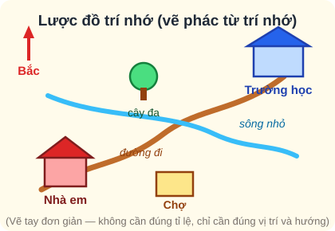
Tự trả lời trong đầu trước, rồi bấm vào câu hỏi để kiểm tra đáp án. (Hình minh họa nằm ở phần bài học phía trên; đáp án không lặp lại hình để em tự nhớ lại nhé!)
✍️ Viết để ôn lại — Bài 5. Lược đồ trí nhớ
Trước khi suy luận, em ôn lại nội dung bài bằng 2 câu này (in phiếu bên dưới). Viết bằng lời của em, không cần viết đúng từng chữ trong bài.
Câu 1. Lược đồ trí nhớ là gì?
Gợi mở: Không có bản đồ in sẵn, em vẽ đường đi học bằng gì? / Hình vẽ đó vẽ khu vực nào?
Ý chính cần có: Lược đồ trí nhớ là hình vẽ đơn giản, phác họa từ trí nhớ về một khu vực quen thuộc (đường đi học, khu phố, trường học…).
Câu 2. Khi vẽ lược đồ trí nhớ, điều gì không cần đúng tuyệt đối và điều gì bắt buộc phải đúng?
Gợi mở: Tỉ lệ có cần đúng tuyệt đối không? / Vị trí các vật và hướng có được vẽ sai không? / Góc lược đồ phải vẽ thêm gì?
Ý chính cần có: Không cần đúng tỉ lệ tuyệt đối, nhưng phải đúng vị trí tương đối và phương hướng giữa các đối tượng, và phải vẽ mũi tên chỉ hướng Bắc.
Phiếu viết ôn lại — Bài 5. Lược đồ trí nhớ
Họ và tên: ______________________ Lớp: __________
Câu 1. Lược đồ trí nhớ là gì?
Câu 2. Khi vẽ lược đồ trí nhớ, điều gì không cần đúng tuyệt đối và điều gì bắt buộc phải đúng?
Viết xong, bấm xem “Ý cần có” để tự tick: em đủ mấy ý?
✍️ Viết ra suy nghĩ của em — Bài 5. Lược đồ trí nhớ
Học xong bài này, em viết 2 câu trả lời ra giấy (in phiếu bên dưới). Viết bằng lời của em, không cần viết đúng từng chữ trong bài.
Câu 1. Vì sao lược đồ trí nhớ không cần đúng tỉ lệ tuyệt đối nhưng vẫn phải đúng vị trí tương đối và phương hướng?
Gợi mở: Lược đồ trí nhớ vẽ từ đâu? / Nếu vẽ sai vị trí tương đối thì người xem có tìm được đường không? / Mũi tên Bắc để làm gì?
Ý chính cần có: Lược đồ trí nhớ vẽ từ trí nhớ về khu vực quen thuộc; không cần đúng tỉ lệ tuyệt đối; nhưng phải đúng vị trí tương đối + phương hướng và có mũi tên Bắc thì mới tìm đường được.
Câu 2. Em hãy viết lại lộ trình từ nhà đến trường bằng lời, kể các điểm mốc theo đúng thứ tự và nêu rõ hướng rẽ ở mỗi ngã rẽ.
Gợi mở: Điểm mốc chính ở giữa lộ trình là gì? / Từ nhà đi, em gặp điểm mốc nào trước, nào sau? / Mỗi lần rẽ em đi về hướng nào?
Ý chính cần có: Kể điểm mốc theo đúng thứ tự gặp trên đường; nêu hướng rẽ rõ ràng; có điểm mốc chính làm chuẩn.
Phiếu viết — Bài 5. Lược đồ trí nhớ
Họ và tên: ______________________ Lớp: __________
Câu 1. Vì sao lược đồ trí nhớ không cần đúng tỉ lệ tuyệt đối nhưng vẫn phải đúng vị trí tương đối và phương hướng?
Câu 2. Em hãy viết lại lộ trình từ nhà đến trường bằng lời, kể các điểm mốc theo đúng thứ tự và nêu rõ hướng rẽ ở mỗi ngã rẽ.
Viết xong, bấm xem “Ý cần có” để tự tick: em đủ mấy ý?
Bài 6. Trái Đất trong hệ Mặt Trời
- Hệ Mặt Trời gồm Mặt Trời ở trung tâm và 8 hành tinh quay quanh. Trái Đất là hành tinh thứ 3 tính từ Mặt Trời.
- Thứ tự 8 hành tinh: Sao Thủy – Sao Kim – Trái Đất – Sao Hỏa – Sao Mộc – Sao Thổ – Sao Thiên Vương – Sao Hải Vương.
- Trái Đất có hình cầu (hơi dẹt ở hai cực, phình ra ở Xích đạo), bán kính Xích đạo 6 378 km.
- Trái Đất là hành tinh duy nhất được biết có sự sống — vì ở khoảng cách vừa phải với Mặt Trời, có nước lỏng và khí quyển.
- Mặt Trăng là vệ tinh tự nhiên duy nhất của Trái Đất. Nhìn từ Trái Đất, phần sáng của Mặt Trăng thay đổi theo ngày trong tháng — đó là các pha của Mặt Trăng.
- Khi Mặt Trăng nằm giữa Mặt Trời và Trái Đất, bóng của Mặt Trăng che Mặt Trời → nhật thực. Khi Trái Đất nằm giữa → nguyệt thực.
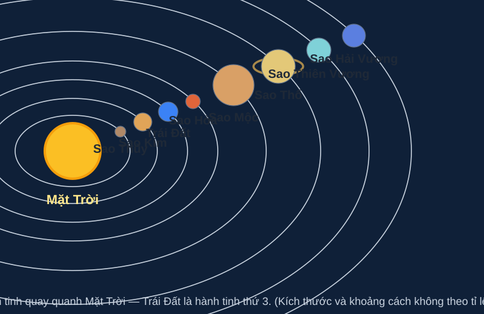
Sơ đồ tự vẽ minh họa (đơn giản hoá).
🖱️ Kéo chuột (hoặc vuốt) trên mô hình để xoay góc nhìn. Quả cầu xanh là Trái Đất tự quay và chuyển động quanh Mặt Trời vàng ở giữa; trục Trái Đất nghiêng 23,5°. Quả cầu xám nhỏ quay quanh Trái Đất là Mặt Trăng. Kích thước và khoảng cách trong mô hình không theo tỉ lệ thật. Texture bề mặt Trái Đất: ảnh Blue Marble (NASA) qua Wikimedia Commons, CC BY-SA 3.0. Bấm nút ⛶ Trình chiếu toàn màn hình để xem mô hình kín màn hình (bấm lại hoặc phím Esc để thoát).
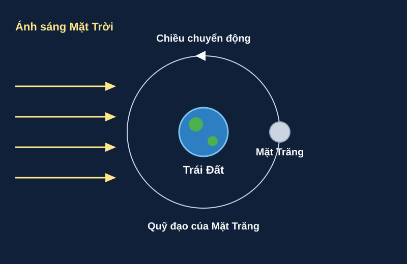
Sơ đồ tự vẽ minh họa (đơn giản hoá, không theo tỉ lệ).
Sơ đồ động tự vẽ minh họa (không theo tỉ lệ).
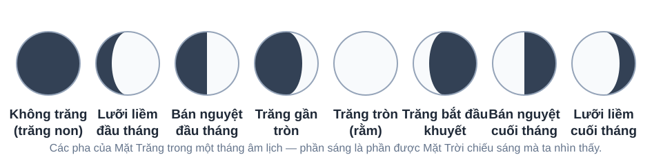
Sơ đồ tự vẽ minh họa (đơn giản hoá).
👉 Bấm vào từng nút để xem pha đó trông thế nào và vào khoảng ngày âm lịch nào. Muốn hiểu vì sao có các pha, xem sơ đồ động phía trên (Mặt Trăng chạy quanh Trái Đất, ánh sáng chiếu từ một phía).
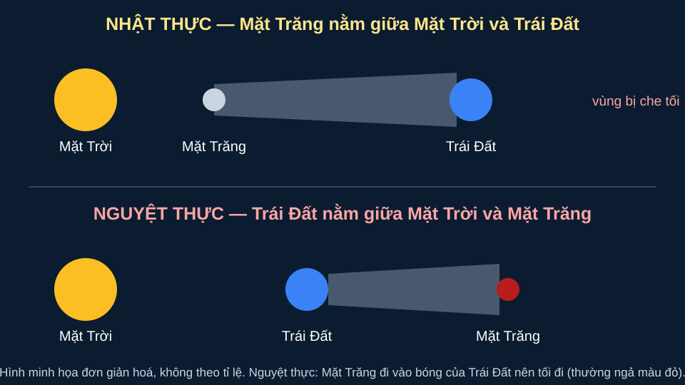
Sơ đồ tự vẽ minh họa (đơn giản hoá).
Tự trả lời trong đầu trước, rồi bấm vào câu hỏi để kiểm tra đáp án. (Hình minh họa nằm ở phần bài học phía trên; đáp án không lặp lại hình để em tự nhớ lại nhé!)
✍️ Viết để ôn lại — Bài 6. Trái Đất trong hệ Mặt Trời
Trước khi suy luận, em ôn lại nội dung bài bằng 2 câu này (in phiếu bên dưới). Viết bằng lời của em, không cần viết đúng từng chữ trong bài.
Câu 1. Trái Đất là hành tinh thứ mấy tính từ Mặt Trời? Trái Đất có hình dạng ra sao?
Gợi mở: Đếm từ Mặt Trời ra: Sao Thủy, Sao Kim rồi tới hành tinh nào? / Trái Đất tròn hẳn hay hơi dẹt ở đâu?
Ý chính cần có: Trái Đất là hành tinh thứ 3 tính từ Mặt Trời; Trái Đất có hình cầu, hơi dẹt ở hai cực, phình ra ở Xích đạo, bán kính Xích đạo 6 378 km.
Câu 2. Trái Đất có gì đặc biệt so với các hành tinh khác?
Gợi mở: Hành tinh nào có sự sống? / Trái Đất có nước và không khí ra sao?
Ý chính cần có: Trái Đất là hành tinh duy nhất được biết có sự sống, vì ở khoảng cách vừa phải với Mặt Trời, có nước lỏng và khí quyển; Mặt Trăng là vệ tinh tự nhiên duy nhất của Trái Đất.
Phiếu viết ôn lại — Bài 6. Trái Đất trong hệ Mặt Trời
Họ và tên: ______________________ Lớp: __________
Câu 1. Trái Đất là hành tinh thứ mấy tính từ Mặt Trời? Trái Đất có hình dạng ra sao?
Câu 2. Trái Đất có gì đặc biệt so với các hành tinh khác?
Viết xong, bấm xem “Ý cần có” để tự tick: em đủ mấy ý?
✍️ Viết ra suy nghĩ của em — Bài 6. Trái Đất trong hệ Mặt Trời
Học xong bài này, em viết 2 câu trả lời ra giấy (in phiếu bên dưới). Viết bằng lời của em, không cần viết đúng từng chữ trong bài.
Câu 1. Vì sao Trái Đất là hành tinh duy nhất được biết có sự sống?
Gợi mở: Trái Đất là hành tinh thứ mấy từ Mặt Trời? / Khoảng cách vừa phải mang lại điều gì? / Nước lỏng và khí quyển có vai trò gì?
Ý chính cần có: Trái Đất là hành tinh thứ 3 từ Mặt Trời; ở khoảng cách vừa phải nên có nước lỏng và khí quyển; đó là điều kiện cho sự sống.
Câu 2. Nếu Trái Đất ở gần Mặt Trời hơn như Sao Kim, theo em sự sống sẽ ra sao? Vì sao?
Gợi mở: Gần Mặt Trời hơn thì nóng hơn hay lạnh hơn? / Nước lỏng sẽ còn hay bốc hơi hết? / Điều kiện cho sự sống còn không?
Ý chính cần có: Gần Mặt Trời hơn thì nóng hơn; nước lỏng bốc hơi hết; mất điều kiện có nước lỏng nên khó có sự sống như hiện nay.
Phiếu viết — Bài 6. Trái Đất trong hệ Mặt Trời
Họ và tên: ______________________ Lớp: __________
Câu 1. Vì sao Trái Đất là hành tinh duy nhất được biết có sự sống?
Câu 2. Nếu Trái Đất ở gần Mặt Trời hơn như Sao Kim, theo em sự sống sẽ ra sao? Vì sao?
Viết xong, bấm xem “Ý cần có” để tự tick: em đủ mấy ý?
Bài 7. Chuyển động tự quay quanh trục của Trái Đất và hệ quả
- Trái Đất tự quay quanh một trục tưởng tượng nối hai cực. Trục này nghiêng khoảng 23,5° và luôn hướng về một phía.
- Hướng tự quay: từ Tây sang Đông. Vì thế ta thấy Mặt Trời như “mọc” ở phía Đông và “lặn” ở phía Tây.
- Trái Đất quay hết một vòng trong 24 giờ — một ngày đêm.
- Hệ quả 1: ngày và đêm luân phiên — nửa Trái Đất hướng về Mặt Trời là ban ngày, nửa còn lại là ban đêm.
- Hệ quả 2: giờ khác nhau ở các nơi — bề mặt Trái Đất được chia thành 24 múi giờ; càng về phía Đông giờ càng sớm. Việt Nam ở múi giờ +7.
- Hệ quả 3: các vật chuyển động theo chiều kinh tuyến (gió, dòng nước…) bị lệch hướng: ở bán cầu Bắc lệch sang phải, bán cầu Nam lệch sang trái.
Sơ đồ động tự vẽ minh họa.
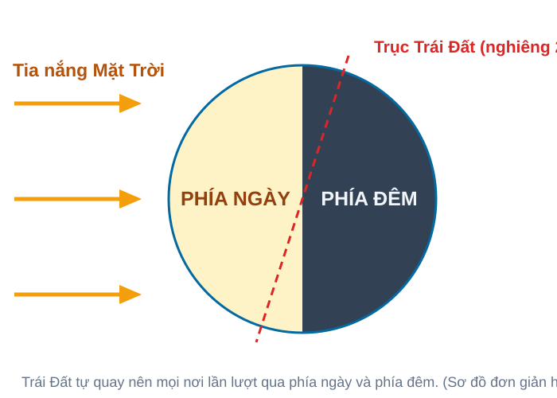
Sơ đồ tự vẽ minh họa (đơn giản hoá).
Sơ đồ tự vẽ minh họa.
Tự trả lời trong đầu trước, rồi bấm vào câu hỏi để kiểm tra đáp án. (Hình minh họa nằm ở phần bài học phía trên; đáp án không lặp lại hình để em tự nhớ lại nhé!)
✍️ Viết để ôn lại — Bài 7. Chuyển động tự quay quanh trục của Trái Đất và hệ quả
Trước khi suy luận, em ôn lại nội dung bài bằng 2 câu này (in phiếu bên dưới). Viết bằng lời của em, không cần viết đúng từng chữ trong bài.
Câu 1. Trái Đất tự quay theo hướng nào và hết một vòng trong bao lâu?
Gợi mở: Trục quay nối hai cực nào? / Quay từ Tây sang Đông hay ngược lại? / Một vòng là mấy giờ?
Ý chính cần có: Trái Đất tự quay quanh một trục tưởng tượng nối hai cực, hướng từ Tây sang Đông, hết một vòng trong 24 giờ; trục nghiêng khoảng 23,5° và luôn hướng về một phía.
Câu 2. Chuyển động tự quay gây ra những hệ quả nào?
Gợi mở: Nửa hướng về Mặt Trời là ngày hay đêm? / Các nơi trên Trái Đất có cùng giờ không? / Gió thổi dọc kinh tuyến bị lệch về phía nào?
Ý chính cần có: Ngày và đêm luân phiên (nửa hướng về Mặt Trời là ban ngày, nửa còn lại là ban đêm); giờ khác nhau ở các nơi (24 múi giờ, càng về phía Đông giờ càng sớm, Việt Nam ở múi giờ +7); vật chuyển động theo chiều kinh tuyến bị lệch hướng (bán cầu Bắc lệch sang phải, bán cầu Nam lệch sang trái).
Phiếu viết ôn lại — Bài 7. Chuyển động tự quay quanh trục của Trái Đất và hệ quả
Họ và tên: ______________________ Lớp: __________
Câu 1. Trái Đất tự quay theo hướng nào và hết một vòng trong bao lâu?
Câu 2. Chuyển động tự quay gây ra những hệ quả nào?
Viết xong, bấm xem “Ý cần có” để tự tick: em đủ mấy ý?
✍️ Viết ra suy nghĩ của em — Bài 7. Chuyển động tự quay quanh trục của Trái Đất và hệ quả
Học xong bài này, em viết 2 câu trả lời ra giấy (in phiếu bên dưới). Viết bằng lời của em, không cần viết đúng từng chữ trong bài.
Câu 1. Vì sao ta thấy Mặt Trời 'mọc' ở phía Đông và 'lặn' ở phía Tây, dù thật ra chính Trái Đất đang tự quay?
Gợi mở: Trái Đất tự quay theo hướng nào? / Khi Trái Đất quay, phía đón Mặt Trời thay đổi thế nào? / Một vòng quay mất bao lâu?
Ý chính cần có: Trái Đất tự quay từ Tây sang Đông, hết một vòng trong 24 giờ; nhờ vậy nửa hướng về Mặt Trời là ban ngày, nửa còn lại là ban đêm; ta thấy Mặt Trời như mọc ở Đông, lặn ở Tây.
Câu 2. Lúc 12 giờ trưa ở Việt Nam (múi +7), ở Anh (múi 0) là mấy giờ? Em hãy viết lời giải.
Gợi mở: Việt Nam nhanh hơn Anh bao nhiêu tiếng? / Muốn tìm giờ ở Anh thì cộng hay trừ? / 12 − 7 bằng mấy?
Ý chính cần có: Việt Nam (múi +7) nhanh hơn Anh (múi 0) 7 tiếng; giờ ở Anh = 12 − 7 = 5 giờ sáng; quy tắc: phía Đông giờ sớm hơn (giờ lớn hơn tại cùng thời điểm).
Phiếu viết — Bài 7. Chuyển động tự quay quanh trục của Trái Đất và hệ quả
Họ và tên: ______________________ Lớp: __________
Câu 1. Vì sao ta thấy Mặt Trời 'mọc' ở phía Đông và 'lặn' ở phía Tây, dù thật ra chính Trái Đất đang tự quay?
Câu 2. Lúc 12 giờ trưa ở Việt Nam (múi +7), ở Anh (múi 0) là mấy giờ? Em hãy viết lời giải.
Viết xong, bấm xem “Ý cần có” để tự tick: em đủ mấy ý?
Bài 8. Chuyển động của Trái Đất quanh Mặt Trời và hệ quả
- Trái Đất chuyển động quanh Mặt Trời theo quỹ đạo hình e-líp gần tròn, một vòng mất 365 ngày 6 giờ (một năm; 6 giờ thừa dồn 4 năm thành 1 ngày nhuận 29/2).
- Khi chuyển động, trục Trái Đất luôn nghiêng và hướng về một phía (phía sao Bắc Cực) — đây chính là chìa khóa sinh ra các mùa.
- Bốn mốc quan trọng: Xuân phân 21/3 • Hạ chí 22/6 • Thu phân 23/9 • Đông chí 22/12.
- Ngày Hạ chí (22/6): bán cầu Bắc ngả về phía Mặt Trời → Bắc bán cầu vào mùa hạ, ngày dài hơn đêm; bán cầu Nam thì ngược lại (mùa đông).
- Ngày Đông chí (22/12): bán cầu Bắc ngả ra xa Mặt Trời → mùa đông, đêm dài hơn ngày.
- Hai ngày phân (21/3 và 23/9): hai bán cầu được chiếu sáng như nhau → khắp nơi ngày dài bằng đêm.
👉 Bấm vào từng vị trí Trái Đất để xem mùa và độ dài ngày – đêm. Hình minh họa, kích thước và khoảng cách không theo tỉ lệ thật.
Sơ đồ tương tác tự vẽ minh họa.
Sơ đồ động tự vẽ minh họa (không theo tỉ lệ).
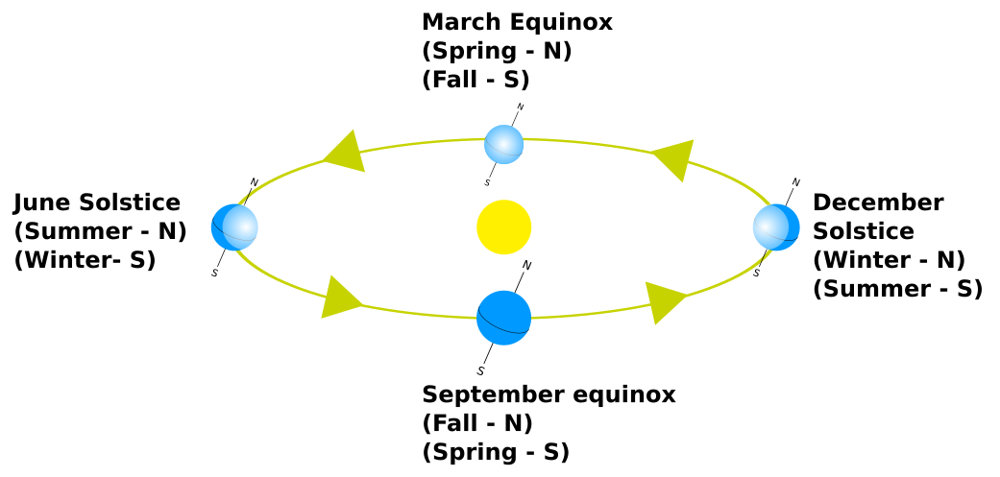
Ảnh: Colivine — CC0. Nguồn: Wikimedia Commons
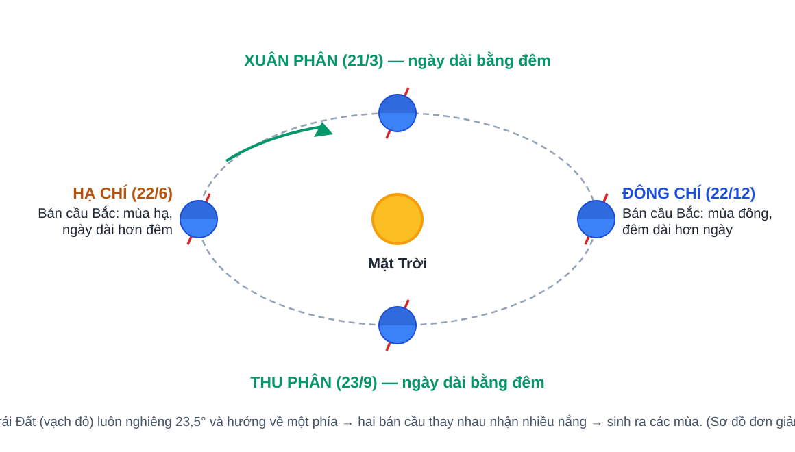
Sơ đồ tự vẽ minh họa (đơn giản hoá).
Tự trả lời trong đầu trước, rồi bấm vào câu hỏi để kiểm tra đáp án. (Hình minh họa nằm ở phần bài học phía trên; đáp án không lặp lại hình để em tự nhớ lại nhé!)
✍️ Viết để ôn lại — Bài 8. Chuyển động của Trái Đất quanh Mặt Trời và hệ quả
Trước khi suy luận, em ôn lại nội dung bài bằng 2 câu này (in phiếu bên dưới). Viết bằng lời của em, không cần viết đúng từng chữ trong bài.
Câu 1. Trái Đất chuyển động quanh Mặt Trời hết một vòng trong bao lâu? Khi chuyển động, trục Trái Đất như thế nào?
Gợi mở: Quỹ đạo có hình gì? / Một vòng là mấy ngày? / Trục có đổi hướng không?
Ý chính cần có: Trái Đất chuyển động quanh Mặt Trời theo quỹ đạo hình e-líp gần tròn, một vòng mất 365 ngày 6 giờ; khi chuyển động, trục Trái Đất luôn nghiêng và hướng về một phía (phía sao Bắc Cực).
Câu 2. Kể tên 4 mốc quan trọng trong năm. Vào ngày Hạ chí, bán cầu Bắc ra sao?
Gợi mở: Tháng 3, tháng 6, tháng 9, tháng 12 có mốc nào? / Ngày 22/6, bán cầu Bắc ngả về phía nào?
Ý chính cần có: 4 mốc: Xuân phân 21/3, Hạ chí 22/6, Thu phân 23/9, Đông chí 22/12; ngày Hạ chí, bán cầu Bắc ngả về phía Mặt Trời nên vào mùa hạ, ngày dài hơn đêm; ngược lại, ngày Đông chí bán cầu Bắc vào mùa đông, đêm dài hơn ngày; hai ngày phân thì khắp nơi ngày dài bằng đêm.
Phiếu viết ôn lại — Bài 8. Chuyển động của Trái Đất quanh Mặt Trời và hệ quả
Họ và tên: ______________________ Lớp: __________
Câu 1. Trái Đất chuyển động quanh Mặt Trời hết một vòng trong bao lâu? Khi chuyển động, trục Trái Đất như thế nào?
Câu 2. Kể tên 4 mốc quan trọng trong năm. Vào ngày Hạ chí, bán cầu Bắc ra sao?
Viết xong, bấm xem “Ý cần có” để tự tick: em đủ mấy ý?
✍️ Viết ra suy nghĩ của em — Bài 8. Chuyển động của Trái Đất quanh Mặt Trời và hệ quả
Học xong bài này, em viết 2 câu trả lời ra giấy (in phiếu bên dưới). Viết bằng lời của em, không cần viết đúng từng chữ trong bài.
Câu 1. Vì sao trong năm lại có các mùa xuân, hạ, thu, đông?
Gợi mở: Trái Đất quay quanh Mặt Trời mất bao lâu? / Trục Trái Đất có thẳng đứng không? / Khi quay, trục có đổi hướng không?
Ý chính cần có: Trái Đất quay quanh Mặt Trời một vòng mất 365 ngày 6 giờ; trục luôn nghiêng và hướng về một phía; nhờ vậy mỗi bán cầu lúc ngả về phía Mặt Trời, lúc chếch đi — sinh ra các mùa.
Câu 2. Ngày 22/6 (Hạ chí), Bắc bán cầu ngày dài hơn đêm. Vậy ở Nam bán cầu ngày hôm đó ra sao? Vì sao?
Gợi mở: Ngày 22/6 bán cầu nào ngả về phía Mặt Trời? / Bán cầu còn lại thì sao? / Ngả về phía Mặt Trời thì là mùa gì?
Ý chính cần có: Ngày 22/6 Bắc bán cầu ngả về phía Mặt Trời nên là mùa hạ, ngày dài hơn đêm; Nam bán cầu ngược lại: mùa đông, đêm dài hơn ngày.
Phiếu viết — Bài 8. Chuyển động của Trái Đất quanh Mặt Trời và hệ quả
Họ và tên: ______________________ Lớp: __________
Câu 1. Vì sao trong năm lại có các mùa xuân, hạ, thu, đông?
Câu 2. Ngày 22/6 (Hạ chí), Bắc bán cầu ngày dài hơn đêm. Vậy ở Nam bán cầu ngày hôm đó ra sao? Vì sao?
Viết xong, bấm xem “Ý cần có” để tự tick: em đủ mấy ý?
Bài 9. Xác định phương hướng ngoài thực tế
- Dụng cụ quen thuộc nhất để xác định phương hướng là la bàn: kim la bàn luôn chỉ hướng Bắc – Nam (đầu kim màu thường chỉ hướng Bắc).
- Nhờ Mặt Trời: buổi sáng Mặt Trời ở phía Đông, buổi trưa ở phía Nam (với Việt Nam), buổi chiều ở phía Tây.
- Mẹo giang hồ: đứng dang hai tay — tay phải chỉ hướng Mặt Trời mọc (Đông), tay trái chỉ Tây, mặt hướng Bắc, lưng là Nam.
- Ban đêm, có thể tìm sao Bắc Cực: ngôi sao nằm gần đúng hướng Bắc, là đầu của chòm sao Tiểu Hùng.
- Trên điện thoại thông minh có ứng dụng la bàn và bản đồ số giúp xác định hướng, vị trí rất nhanh.
(Tranh minh họa theo phong cách ảnh thật)
Sơ đồ tự vẽ minh họa (đơn giản hoá).
Tự trả lời trong đầu trước, rồi bấm vào câu hỏi để kiểm tra đáp án. (Hình minh họa nằm ở phần bài học phía trên; đáp án không lặp lại hình để em tự nhớ lại nhé!)
✍️ Viết để ôn lại — Bài 9. Xác định phương hướng ngoài thực tế
Trước khi suy luận, em ôn lại nội dung bài bằng 2 câu này (in phiếu bên dưới). Viết bằng lời của em, không cần viết đúng từng chữ trong bài.
Câu 1. Kim la bàn luôn chỉ theo hướng nào?
Gợi mở: La bàn có mấy đầu kim? / Đầu kim màu thường chỉ hướng nào?
Ý chính cần có: Kim la bàn luôn chỉ hướng Bắc – Nam, đầu kim màu thường chỉ hướng Bắc.
Câu 2. Nhờ Mặt Trời, em xác định hướng như thế nào vào buổi sáng, buổi trưa và buổi chiều?
Gợi mở: Sáng Mặt Trời ở phía nào? / Trưa ở phía nào (với Việt Nam)? / Chiều ở phía nào?
Ý chính cần có: Buổi sáng Mặt Trời ở phía Đông, buổi trưa ở phía Nam (với Việt Nam), buổi chiều ở phía Tây; ban đêm có thể tìm sao Bắc Cực, ngôi sao nằm gần đúng hướng Bắc, là đầu của chòm sao Tiểu Hùng.
Phiếu viết ôn lại — Bài 9. Xác định phương hướng ngoài thực tế
Họ và tên: ______________________ Lớp: __________
Câu 1. Kim la bàn luôn chỉ theo hướng nào?
Câu 2. Nhờ Mặt Trời, em xác định hướng như thế nào vào buổi sáng, buổi trưa và buổi chiều?
Viết xong, bấm xem “Ý cần có” để tự tick: em đủ mấy ý?
✍️ Viết ra suy nghĩ của em — Bài 9. Xác định phương hướng ngoài thực tế
Học xong bài này, em viết 2 câu trả lời ra giấy (in phiếu bên dưới). Viết bằng lời của em, không cần viết đúng từng chữ trong bài.
Câu 1. Vì sao ban đêm người ta có thể dùng sao Bắc Cực để tìm hướng Bắc?
Gợi mở: Sao Bắc Cực nằm gần đúng hướng nào? / Sao Bắc Cực là đầu của chòm sao nào? / Ban đêm không có Mặt Trời thì dùng gì?
Ý chính cần có: Sao Bắc Cực nằm gần đúng hướng Bắc; là đầu của chòm sao Tiểu Hùng; tìm được sao Bắc Cực là xác định được hướng Bắc, từ đó suy ra các hướng còn lại.
Câu 2. Em đi dã ngoại, buổi trưa không có la bàn. Em sẽ tìm hướng bằng cách nào? Viết rõ từng bước.
Gợi mở: Buổi trưa Mặt Trời ở phía nào (với Việt Nam)? / Biết được một hướng thì suy ra các hướng còn lại thế nào?
Ý chính cần có: Buổi trưa Mặt Trời ở phía Nam (với Việt Nam); quay mặt về phía Mặt Trời là hướng Nam, sau lưng là Bắc, bên trái là Đông, bên phải là Tây; từ đó xác định được mọi hướng.
Phiếu viết — Bài 9. Xác định phương hướng ngoài thực tế
Họ và tên: ______________________ Lớp: __________
Câu 1. Vì sao ban đêm người ta có thể dùng sao Bắc Cực để tìm hướng Bắc?
Câu 2. Em đi dã ngoại, buổi trưa không có la bàn. Em sẽ tìm hướng bằng cách nào? Viết rõ từng bước.
Viết xong, bấm xem “Ý cần có” để tự tick: em đủ mấy ý?
Bài 10. Cấu tạo của Trái Đất. Các mảng kiến tạo
- Trái Đất gồm 3 lớp như quả trứng: vỏ Trái Đất (mỏng như vỏ trứng), lớp bao phủ / manti (dày như lòng trắng), nhân ở trung tâm (như lòng đỏ).
- Vỏ Trái Đất mỏng nhất: dày từ khoảng 5 km (dưới đại dương) đến 70 km (dưới lục địa), là nơi con người sinh sống.
- Nhân Trái Đất rất nóng, nhiệt độ lên tới khoảng 6 000°C — nóng gần bằng bề mặt Mặt Trời!
- Vỏ Trái Đất không liền một khối mà bị nứt thành nhiều mảng kiến tạo như những mảnh ghép khổng lồ.
- Các mảng kiến tạo trôi rất chậm trên lớp manti (chỉ vài cm mỗi năm) — chậm như móng tay của em dài ra vậy!
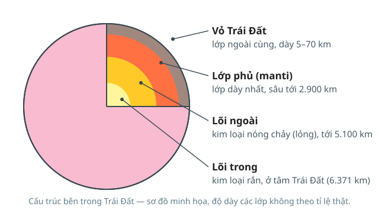
Ảnh: Original: USGS Vector: Anasofiapaixao — Public domain. Nguồn: Wikimedia Commons
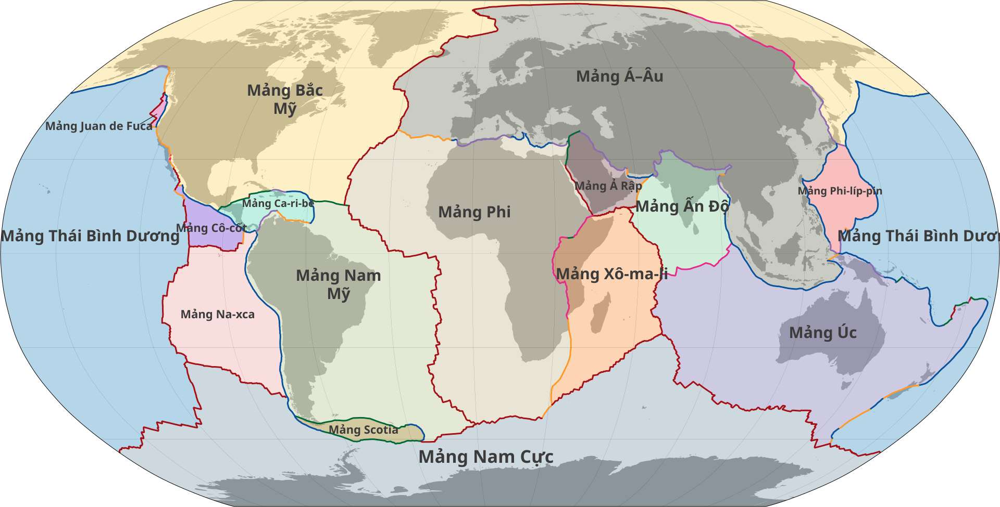
Ảnh: M.Bitton — CC BY-SA 3.0. Nguồn: Wikimedia Commons
Tự trả lời trong đầu trước, rồi bấm vào câu hỏi để kiểm tra đáp án. (Hình minh họa nằm ở phần bài học phía trên; đáp án không lặp lại hình để em tự nhớ lại nhé!)
✍️ Viết để ôn lại — Bài 10. Cấu tạo của Trái Đất. Các mảng kiến tạo
Trước khi suy luận, em ôn lại nội dung bài bằng 2 câu này (in phiếu bên dưới). Viết bằng lời của em, không cần viết đúng từng chữ trong bài.
Câu 1. Trái Đất gồm những lớp nào, từ ngoài vào trong?
Gợi mở: Ví Trái Đất như quả trứng: vỏ trứng, lòng trắng, lòng đỏ ứng với lớp nào?
Ý chính cần có: Trái Đất gồm 3 lớp: vỏ Trái Đất (mỏng như vỏ trứng), lớp bao phủ hay manti (dày như lòng trắng), nhân ở trung tâm (như lòng đỏ).
Câu 2. Vỏ Trái Đất có đặc điểm gì?
Gợi mở: Vỏ dày bao nhiêu? / Vỏ có liền một khối không? / Các mảng trôi nhanh hay chậm?
Ý chính cần có: Vỏ Trái Đất mỏng nhất, dày từ khoảng 5 km (dưới đại dương) đến 70 km (dưới lục địa), là nơi con người sinh sống; vỏ không liền một khối mà nứt thành nhiều mảng kiến tạo, trôi rất chậm trên lớp manti (chỉ vài cm mỗi năm); nhân Trái Đất rất nóng, khoảng 6 000°C.
Phiếu viết ôn lại — Bài 10. Cấu tạo của Trái Đất. Các mảng kiến tạo
Họ và tên: ______________________ Lớp: __________
Câu 1. Trái Đất gồm những lớp nào, từ ngoài vào trong?
Câu 2. Vỏ Trái Đất có đặc điểm gì?
Viết xong, bấm xem “Ý cần có” để tự tick: em đủ mấy ý?
✍️ Viết ra suy nghĩ của em — Bài 10. Cấu tạo của Trái Đất. Các mảng kiến tạo
Học xong bài này, em viết 2 câu trả lời ra giấy (in phiếu bên dưới). Viết bằng lời của em, không cần viết đúng từng chữ trong bài.
Câu 1. Vì sao các nhà khoa học ví Trái Đất như quả trứng?
Gợi mở: Trái Đất có mấy lớp? / Lớp nào mỏng nhất, giống vỏ trứng? / Lớp nào dày, giống lòng trắng? / Ở giữa là gì?
Ý chính cần có: Trái Đất có 3 lớp: vỏ (mỏng như vỏ trứng, dày 5 km dưới đại dương đến 70 km dưới lục địa), manti/lớp bao phủ (dày như lòng trắng), nhân ở trung tâm (rất nóng, khoảng 6 000°C).
Câu 2. Các mảng kiến tạo trôi vài xăng-ti-mét mỗi năm. Theo em, sau hàng triệu năm, vị trí các lục địa có thay đổi không? Vì sao?
Gợi mở: Mỗi năm trôi vài cm thì triệu năm trôi được bao xa? / Chậm có nghĩa là không đổi không? / Vỏ Trái Đất liền một khối hay nứt thành mảng?
Ý chính cần có: Vỏ Trái Đất nứt thành nhiều mảng kiến tạo; mỗi năm trôi vài cm, tích lũy hàng triệu năm thành hàng nghìn km; nên vị trí lục địa thay đổi rất nhiều theo thời gian.
Phiếu viết — Bài 10. Cấu tạo của Trái Đất. Các mảng kiến tạo
Họ và tên: ______________________ Lớp: __________
Câu 1. Vì sao các nhà khoa học ví Trái Đất như quả trứng?
Câu 2. Các mảng kiến tạo trôi vài xăng-ti-mét mỗi năm. Theo em, sau hàng triệu năm, vị trí các lục địa có thay đổi không? Vì sao?
Viết xong, bấm xem “Ý cần có” để tự tick: em đủ mấy ý?
Bài 11. Quá trình nội sinh và quá trình ngoại sinh. Hiện tượng tạo núi
- Quá trình nội sinh là các quá trình xảy ra bên trong lòng Trái Đất (do năng lượng trong lòng đất) → làm bề mặt nâng lên, uốn nếp, đứt gãy — tạo núi, động đất, núi lửa.
- Quá trình ngoại sinh xảy ra bên trên bề mặt Trái Đất (do nắng, gió, nước, băng…) → bào mòn, hạ thấp bề mặt, bồi đắp nơi trũng.
- Hai quá trình này ngược nhau nhưng xảy ra cùng lúc: nội sinh “xây” lên, ngoại sinh “gọt” xuống.
- Hiện tượng tạo núi: khi hai mảng kiến tạo xô vào nhau, đất đá bị nén, uốn nếp và đẩy cao lên thành dãy núi (như dãy Hi-ma-lay-a — “nóc nhà thế giới”).
- Ví dụ ngoại sinh gần gũi: dòng sông chảy xiết bào mòn hai bờ, gió thổi mài mòn đá sa mạc thành những đụn cát.
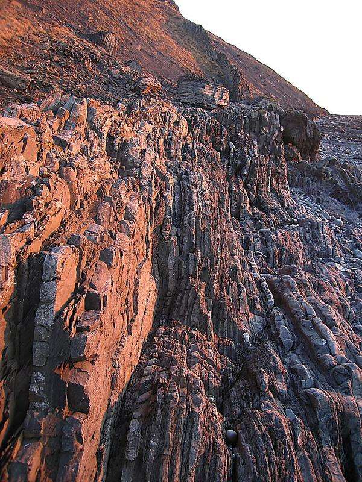
(Tranh minh họa theo phong cách ảnh thật)
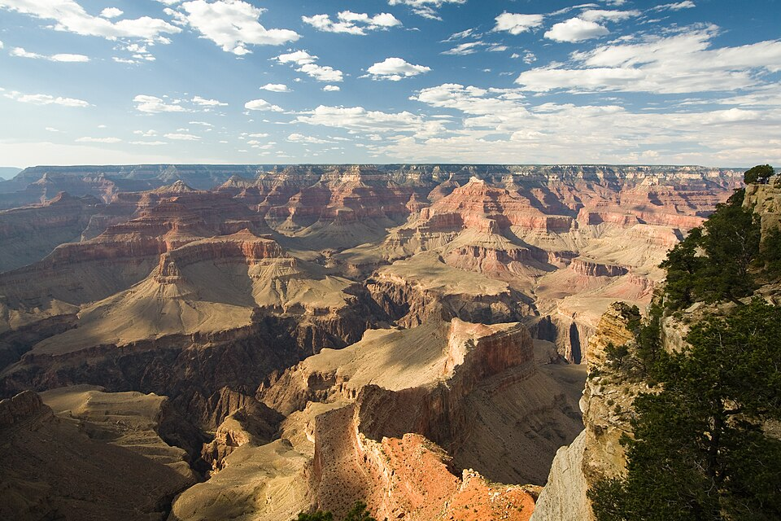
(Tranh minh họa theo phong cách ảnh thật)
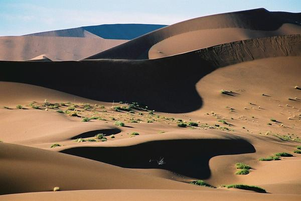
(Tranh minh họa theo phong cách ảnh thật)
Tự trả lời trong đầu trước, rồi bấm vào câu hỏi để kiểm tra đáp án. (Hình minh họa nằm ở phần bài học phía trên; đáp án không lặp lại hình để em tự nhớ lại nhé!)
✍️ Viết để ôn lại — Bài 11. Quá trình nội sinh và quá trình ngoại sinh. Hiện tượng tạo núi
Trước khi suy luận, em ôn lại nội dung bài bằng 2 câu này (in phiếu bên dưới). Viết bằng lời của em, không cần viết đúng từng chữ trong bài.
Câu 1. Quá trình nội sinh và quá trình ngoại sinh khác nhau ở điểm nào?
Gợi mở: Quá trình nào xảy ra bên trong lòng đất? / Quá trình nào xảy ra trên bề mặt, do nắng, gió, nước?
Ý chính cần có: Nội sinh xảy ra bên trong lòng Trái Đất (do năng lượng trong lòng đất), làm bề mặt nâng lên, uốn nếp, đứt gãy, tạo núi, động đất, núi lửa; ngoại sinh xảy ra trên bề mặt Trái Đất (do nắng, gió, nước, băng…), bào mòn, hạ thấp bề mặt, bồi đắp nơi trũng; hai quá trình ngược nhau nhưng xảy ra cùng lúc: nội sinh “xây” lên, ngoại sinh “gọt” xuống.
Câu 2. Hiện tượng tạo núi diễn ra như thế nào?
Gợi mở: Hai mảng xô vào nhau thì đất đá bị gì? / Đất đá bị đẩy lên thành gì?
Ý chính cần có: Khi hai mảng kiến tạo xô vào nhau, đất đá bị nén, uốn nếp và đẩy cao lên thành dãy núi, như dãy Hi-ma-lay-a.
Phiếu viết ôn lại — Bài 11. Quá trình nội sinh và quá trình ngoại sinh. Hiện tượng tạo núi
Họ và tên: ______________________ Lớp: __________
Câu 1. Quá trình nội sinh và quá trình ngoại sinh khác nhau ở điểm nào?
Câu 2. Hiện tượng tạo núi diễn ra như thế nào?
Viết xong, bấm xem “Ý cần có” để tự tick: em đủ mấy ý?
✍️ Viết ra suy nghĩ của em — Bài 11. Quá trình nội sinh và quá trình ngoại sinh. Hiện tượng tạo núi
Học xong bài này, em viết 2 câu trả lời ra giấy (in phiếu bên dưới). Viết bằng lời của em, không cần viết đúng từng chữ trong bài.
Câu 1. Vì sao nội sinh và ngoại sinh được gọi là hai quá trình đối nghịch nhau nhưng vẫn xảy ra cùng lúc?
Gợi mở: Nội sinh xảy ra ở đâu, làm gì? / Ngoại sinh xảy ra ở đâu, làm gì? / 'Xây lên' và 'gọt xuống' có ngược nhau không?
Ý chính cần có: Nội sinh = lực từ bên trong lòng đất, làm bề mặt nâng lên, uốn nếp; ngoại sinh = lực từ bên ngoài (nắng, gió, nước, băng), bào mòn, hạ thấp; hai quá trình ngược nhau nhưng xảy ra cùng lúc.
Câu 2. Dãy Hi-ma-lay-a hình thành thế nào? Em hãy viết lại quá trình đó.
Gợi mở: Khi hai mảng kiến tạo xô vào nhau thì đất đá bị gì? / Đất đá bị nén, uốn nếp rồi sao? / Đây là quá trình nội sinh hay ngoại sinh?
Ý chính cần có: Hai mảng kiến tạo xô vào nhau; đất đá bị nén, uốn nếp và đẩy cao lên thành dãy núi; đó là hiện tượng tạo núi do nội sinh.
Phiếu viết — Bài 11. Quá trình nội sinh và quá trình ngoại sinh. Hiện tượng tạo núi
Họ và tên: ______________________ Lớp: __________
Câu 1. Vì sao nội sinh và ngoại sinh được gọi là hai quá trình đối nghịch nhau nhưng vẫn xảy ra cùng lúc?
Câu 2. Dãy Hi-ma-lay-a hình thành thế nào? Em hãy viết lại quá trình đó.
Viết xong, bấm xem “Ý cần có” để tự tick: em đủ mấy ý?
Bài 12. Núi lửa và động đất
- Núi lửa là hiện tượng macma (đá nóng chảy trong lòng đất) phun trào lên bề mặt qua khe nứt của vỏ Trái Đất; macma khi phun ra ngoài gọi là dung nham.
- Núi lửa có 2 loại: đang hoạt động và đã tắt. Vùng ven Thái Bình Dương có rất nhiều núi lửa — gọi là “Vành đai lửa Thái Bình Dương”.
- Động đất là hiện tượng mặt đất rung lắc do các mảng kiến tạo va chạm, trượt qua nhau, làm nứt vỡ vỏ Trái Đất.
- Hậu quả: núi lửa và động đất gây thiệt hại lớn về người và tài sản, có thể gây sóng thần nếu xảy ra dưới biển.
- Mặt tốt ít ai ngờ: tro núi lửa lâu ngày thành đất đỏ bazan màu mỡ (như ở Tây Nguyên nước ta) rất tốt cho cây trồng.
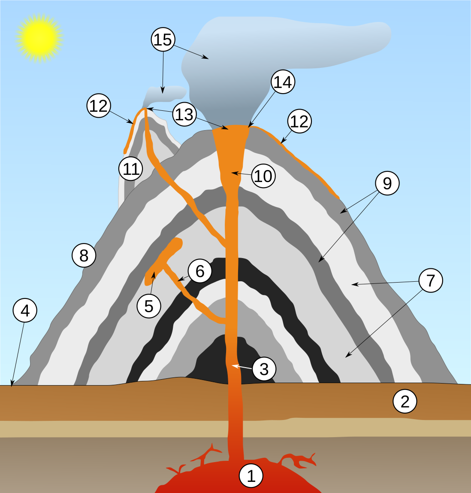
Ảnh: MesserWoland — CC BY-SA 3.0. Nguồn: Wikimedia Commons
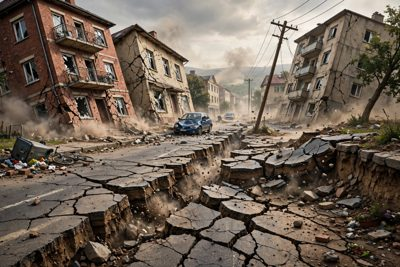
Ảnh: Bert Cohen — Public domain. Nguồn: Wikimedia Commons
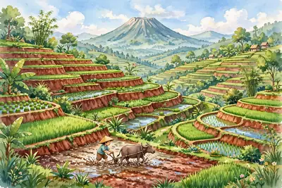
Tự trả lời trong đầu trước, rồi bấm vào câu hỏi để kiểm tra đáp án. (Hình minh họa nằm ở phần bài học phía trên; đáp án không lặp lại hình để em tự nhớ lại nhé!)
✍️ Viết để ôn lại — Bài 12. Núi lửa và động đất
Trước khi suy luận, em ôn lại nội dung bài bằng 2 câu này (in phiếu bên dưới). Viết bằng lời của em, không cần viết đúng từng chữ trong bài.
Câu 1. Hiện tượng động đất là gì?
Gợi mở: Mặt đất rung lắc là do cái gì chuyển động bên dưới? / Vỏ Trái Đất bị nứt vỡ ra sao?
Ý chính cần có: Động đất là hiện tượng mặt đất rung lắc; do các mảng kiến tạo va chạm hoặc trượt qua nhau làm nứt vỡ vỏ Trái Đất; là hiện tượng do hoạt động bên trong (nội sinh); thường xảy ra ở nơi tiếp xúc giữa các mảng.
Câu 2. Núi lửa phân bố ở đâu?
Gợi mở: Núi lửa thường mọc ở chỗ nào? / Vành đai nào trên Trái Đất có nhiều núi lửa nhất?
Ý chính cần có: Núi lửa tập trung ở nơi tiếp xúc giữa các mảng kiến tạo; ven Thái Bình Dương có rất nhiều núi lửa nên gọi là Vành đai lửa Thái Bình Dương.
Phiếu viết ôn lại — Bài 12. Núi lửa và động đất
Họ và tên: ______________________ Lớp: __________
Câu 1. Hiện tượng động đất là gì?
Câu 2. Núi lửa phân bố ở đâu?
Viết xong, bấm xem “Ý cần có” để tự tick: em đủ mấy ý?
✍️ Viết ra suy nghĩ của em — Bài 12. Núi lửa và động đất
Học xong bài này, em viết 2 câu trả lời ra giấy (in phiếu bên dưới). Viết bằng lời của em, không cần viết đúng từng chữ trong bài.
Câu 1. Vì sao núi lửa và động đất thường tập trung ở nơi tiếp xúc giữa các mảng kiến tạo?
Gợi mở: Núi lửa là gì? / Động đất là gì? / Mảng va chạm, trượt qua nhau thì vỏ Trái Đất bị gì?
Ý chính cần có: Núi lửa = macma phun trào qua khe nứt vỏ Trái Đất; động đất = mặt đất rung lắc do mảng va chạm, trượt qua nhau làm nứt vỡ vỏ; cả hai đều do hoạt động bên trong (nội sinh) nên tập trung ở nơi các mảng tiếp xúc.
Câu 2. Nếu gia đình em sống gần vùng có núi lửa đang hoạt động, em nghĩ gia đình cần chuẩn bị và làm gì để an toàn?
Gợi mở: Khi có cảnh báo thì nghe theo ai? / Có nên đến gần miệng núi lửa xem không? / Cần chuẩn bị đồ dùng gì khi phải di chuyển?
Ý chính cần có: Luôn nghe theo cảnh báo và hướng dẫn của chính quyền; không đến gần miệng núi lửa; chuẩn bị sẵn đồ cần thiết để di chuyển nhanh đến nơi an toàn khi có lệnh sơ tán.
Phiếu viết — Bài 12. Núi lửa và động đất
Họ và tên: ______________________ Lớp: __________
Câu 1. Vì sao núi lửa và động đất thường tập trung ở nơi tiếp xúc giữa các mảng kiến tạo?
Câu 2. Nếu gia đình em sống gần vùng có núi lửa đang hoạt động, em nghĩ gia đình cần chuẩn bị và làm gì để an toàn?
Viết xong, bấm xem “Ý cần có” để tự tick: em đủ mấy ý?
Bài 13. Các dạng địa hình chính trên Trái Đất. Khoáng sản
- Có 4 dạng địa hình chính: núi, cao nguyên, đồi và đồng bằng.
- Núi: cao trên 500 m so với mực nước biển, đỉnh nhọn, sườn dốc. Đồi: thấp hơn 500 m, đỉnh tròn, sườn thoải.
- Cao nguyên: cao trên 500 m nhưng bề mặt tương đối bằng phẳng như một chiếc bàn khổng lồ. Đồng bằng: thấp dưới 200 m, bề mặt bằng phẳng, đất đai màu mỡ.
- Dựa vào độ cao, núi chia thành: núi thấp (dưới 1 000 m), núi trung bình (1 000–2 000 m), núi cao (trên 2 000 m). Đỉnh Ê-vơ-rét (Hi-ma-lay-a) cao khoảng 8 848 m — cao nhất thế giới.
- Khoáng sản là những tích tụ tự nhiên của khoáng vật có ích trong lòng đất (than đá, dầu mỏ, sắt, vàng…). Khoáng sản chia 3 nhóm: năng lượng (than, dầu mỏ), kim loại (sắt, vàng, nhôm), phi kim loại (đá vôi, muối, a-pa-tít).
(Tranh minh họa theo phong cách ảnh thật)
(Tranh minh họa theo phong cách ảnh thật)
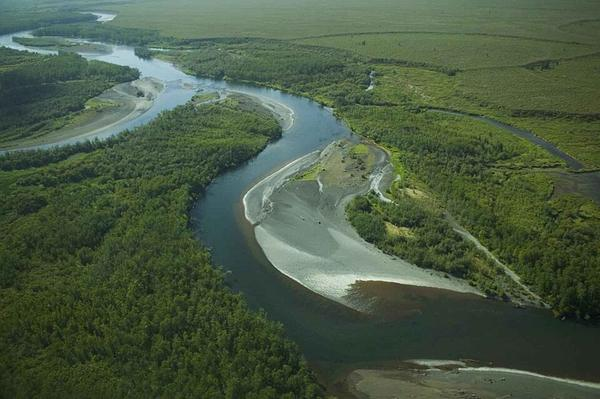
(Tranh minh họa theo phong cách ảnh thật)
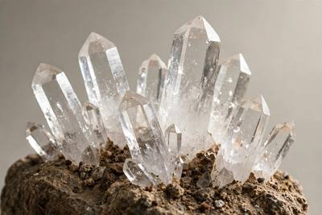
(Tranh minh họa theo phong cách ảnh thật)
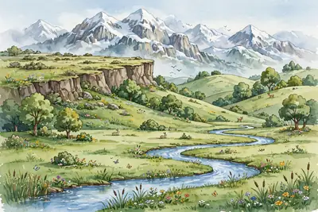
Tự trả lời trong đầu trước, rồi bấm vào câu hỏi để kiểm tra đáp án. (Hình minh họa nằm ở phần bài học phía trên; đáp án không lặp lại hình để em tự nhớ lại nhé!)
✍️ Viết để ôn lại — Bài 13. Các dạng địa hình chính trên Trái Đất. Khoáng sản
Trước khi suy luận, em ôn lại nội dung bài bằng 2 câu này (in phiếu bên dưới). Viết bằng lời của em, không cần viết đúng từng chữ trong bài.
Câu 1. Kể tên 4 dạng địa hình chính và nêu dấu hiệu nhận biết mỗi dạng.
Gợi mở: Dạng nào cao trên 500 m, đỉnh nhọn, sườn dốc? / Dạng nào cao trên 500 m nhưng bề mặt bằng phẳng?
Ý chính cần có: 4 dạng: núi, cao nguyên, đồi và đồng bằng; núi cao trên 500 m so với mực nước biển, đỉnh nhọn, sườn dốc; đồi thấp hơn 500 m, đỉnh tròn, sườn thoải; cao nguyên cao trên 500 m nhưng bề mặt tương đối bằng phẳng; đồng bằng thấp dưới 200 m, bề mặt bằng phẳng, đất đai màu mỡ.
Câu 2. Khoáng sản là gì và gồm mấy nhóm?
Gợi mở: Than đá, dầu mỏ, sắt, vàng là gì? / Than, dầu thuộc nhóm nào? / Đá vôi, muối thuộc nhóm nào?
Ý chính cần có: Khoáng sản là những tích tụ tự nhiên của khoáng vật có ích trong lòng đất; chia 3 nhóm: năng lượng (than, dầu mỏ), kim loại (sắt, vàng, nhôm), phi kim loại (đá vôi, muối, a-pa-tít).
Phiếu viết ôn lại — Bài 13. Các dạng địa hình chính trên Trái Đất. Khoáng sản
Họ và tên: ______________________ Lớp: __________
Câu 1. Kể tên 4 dạng địa hình chính và nêu dấu hiệu nhận biết mỗi dạng.
Câu 2. Khoáng sản là gì và gồm mấy nhóm?
Viết xong, bấm xem “Ý cần có” để tự tick: em đủ mấy ý?
✍️ Viết ra suy nghĩ của em — Bài 13. Các dạng địa hình chính trên Trái Đất. Khoáng sản
Học xong bài này, em viết 2 câu trả lời ra giấy (in phiếu bên dưới). Viết bằng lời của em, không cần viết đúng từng chữ trong bài.
Câu 1. Núi và cao nguyên đều cao trên 500 m, vì sao người ta không gọi cao nguyên là núi?
Gợi mở: Núi có đỉnh và sườn thế nào? / Cao nguyên có bề mặt thế nào? / Đồi và đồng bằng thì sao?
Ý chính cần có: Núi cao trên 500 m, đỉnh nhọn, sườn dốc; cao nguyên cũng cao trên 500 m nhưng bề mặt tương đối bằng phẳng như chiếc bàn khổng lồ; đồi thấp hơn 500 m, đỉnh tròn, sườn thoải; đồng bằng thấp dưới 200 m, bề mặt bằng phẳng.
Câu 2. Em hãy tả một dạng địa hình em từng thấy (núi, đồi, cao nguyên hay đồng bằng) và nêu rõ dấu hiệu giúp em nhận ra nó.
Gợi mở: Nơi đó cao hay thấp? / Đỉnh nhọn hay tròn, mặt phẳng hay dốc? / Dấu hiệu nào đúng với định nghĩa đã học?
Ý chính cần có: Tả được cảnh đã thấy; nêu đúng dấu hiệu (độ cao, đỉnh, sườn, bề mặt); kết luận đúng tên dạng địa hình.
Phiếu viết — Bài 13. Các dạng địa hình chính trên Trái Đất. Khoáng sản
Họ và tên: ______________________ Lớp: __________
Câu 1. Núi và cao nguyên đều cao trên 500 m, vì sao người ta không gọi cao nguyên là núi?
Câu 2. Em hãy tả một dạng địa hình em từng thấy (núi, đồi, cao nguyên hay đồng bằng) và nêu rõ dấu hiệu giúp em nhận ra nó.
Viết xong, bấm xem “Ý cần có” để tự tick: em đủ mấy ý?
Bài 14. Thực hành: Đọc lược đồ địa hình tỉ lệ lớn và lát cắt địa hình đơn giản
- Đường đồng mức (đường đẳng cao) là đường nối các điểm có cùng độ cao trên lược đồ địa hình.
- Đọc đường đồng mức: các đường càng gần nhau (sít nhau) thì sườn càng DỐC; càng xa nhau (thưa) thì sườn càng thoải.
- Số ghi trên đường đồng mức cho biết độ cao của đường đó (tính bằng mét).
- Lát cắt địa hình là hình vẽ mặt cắt của bề mặt đất dọc theo một đường thẳng — như cắt một ổ bánh mì ra để xem ruột bên trong!
- Cách vẽ lát cắt đơn giản: xác định các điểm cao – thấp dọc đường cắt trên lược đồ → chấm lên giấy theo tỉ lệ độ cao → nối các điểm lại.
Hình minh họa tạo bằng AI theo phong cách bản đồ địa hình (không phải bản đồ thật).
Sơ đồ tự vẽ minh họa.
Tự trả lời trong đầu trước, rồi bấm vào câu hỏi để kiểm tra đáp án. (Hình minh họa nằm ở phần bài học phía trên; đáp án không lặp lại hình để em tự nhớ lại nhé!)
✍️ Viết để ôn lại — Bài 14. Thực hành: Đọc lược đồ địa hình tỉ lệ lớn và lát cắt địa hình đơn giản
Trước khi suy luận, em ôn lại nội dung bài bằng 2 câu này (in phiếu bên dưới). Viết bằng lời của em, không cần viết đúng từng chữ trong bài.
Câu 1. Đường đồng mức là gì? Nhìn đường đồng mức, em biết chỗ nào dốc, chỗ nào thoải ra sao?
Gợi mở: Đường nối các điểm cùng gì? / Đường sít nhau hay thưa nhau thì dốc? / Số ghi trên đường cho biết gì?
Ý chính cần có: Đường đồng mức là đường nối các điểm có cùng độ cao trên lược đồ địa hình; các đường càng sít nhau thì sườn càng dốc, càng thưa thì sườn càng thoải; số ghi trên đường đồng mức cho biết độ cao của đường đó (tính bằng mét).
Câu 2. Lát cắt địa hình là gì? Nêu các bước vẽ lát cắt đơn giản.
Gợi mở: Cắt dọc bề mặt đất ra thì thấy gì? / Vẽ lát cắt thì chấm điểm nào trước, nối lại sau?
Ý chính cần có: Lát cắt địa hình là hình vẽ mặt cắt của bề mặt đất dọc theo một đường thẳng; cách vẽ: xác định các điểm cao – thấp dọc đường cắt trên lược đồ, chấm lên giấy theo tỉ lệ độ cao, rồi nối các điểm lại.
Phiếu viết ôn lại — Bài 14. Thực hành: Đọc lược đồ địa hình tỉ lệ lớn và lát cắt địa hình đơn giản
Họ và tên: ______________________ Lớp: __________
Câu 1. Đường đồng mức là gì? Nhìn đường đồng mức, em biết chỗ nào dốc, chỗ nào thoải ra sao?
Câu 2. Lát cắt địa hình là gì? Nêu các bước vẽ lát cắt đơn giản.
Viết xong, bấm xem “Ý cần có” để tự tick: em đủ mấy ý?
✍️ Viết ra suy nghĩ của em — Bài 14. Thực hành: Đọc lược đồ địa hình tỉ lệ lớn và lát cắt địa hình đơn giản
Học xong bài này, em viết 2 câu trả lời ra giấy (in phiếu bên dưới). Viết bằng lời của em, không cần viết đúng từng chữ trong bài.
Câu 1. Vì sao trên lược đồ địa hình, các đường đồng mức càng sít nhau thì sườn càng dốc?
Gợi mở: Đường đồng mức nối các điểm có gì giống nhau? / Cùng chênh cao nhưng khoảng cách ngang ngắn thì dốc hay thoải? / Ngược lại, đường thưa thì sao?
Ý chính cần có: Đường đồng mức nối các điểm cùng độ cao; càng sít nhau nghĩa là độ cao thay đổi nhanh trên đoạn đường ngang ngắn → sườn dốc; càng thưa thì sườn càng thoải.
Câu 2. Em hãy viết cách em đọc một lát cắt địa hình để biết chỗ nào cao, chỗ nào thấp, chỗ nào dốc, chỗ nào thoải.
Gợi mở: Lát cắt địa hình giống như cắt cái gì ra xem? / Số ghi trên đường đồng mức cho biết gì? / Nhìn vào đâu để biết dốc hay thoải?
Ý chính cần có: Lát cắt = cắt dọc bề mặt đất để xem cao thấp (như cắt ổ bánh mì xem ruột); số trên đường đồng mức cho biết độ cao (mét); đường sít = dốc, đường thưa = thoải.
Phiếu viết — Bài 14. Thực hành: Đọc lược đồ địa hình tỉ lệ lớn và lát cắt địa hình đơn giản
Họ và tên: ______________________ Lớp: __________
Câu 1. Vì sao trên lược đồ địa hình, các đường đồng mức càng sít nhau thì sườn càng dốc?
Câu 2. Em hãy viết cách em đọc một lát cắt địa hình để biết chỗ nào cao, chỗ nào thấp, chỗ nào dốc, chỗ nào thoải.
Viết xong, bấm xem “Ý cần có” để tự tick: em đủ mấy ý?
Bài 15. Lớp vỏ khí của Trái Đất. Khí áp và gió
- Lớp vỏ khí (khí quyển) là lớp không khí bao quanh Trái Đất, gồm chủ yếu khí ni-tơ (78%) và ô-xi (21%).
- Khí quyển chia thành các tầng; tầng gần mặt đất nhất là tầng đối lưu — nơi xảy ra hầu hết hiện tượng thời tiết (mây, mưa, gió) và là nơi ta sống.
- Khí áp là sức ép của không khí lên bề mặt Trái Đất. Không khí cũng có trọng lượng đấy — nó đè lên mọi vật như nước đè lên người bơi!
- Gió là sự chuyển động của không khí từ nơi khí áp cao đến nơi khí áp thấp. Áp càng chênh lệch nhiều, gió càng mạnh.
- Trên Trái Đất có các đai khí áp và các loại gió chính: gió Tín phong (thổi đều về phía Xích đạo), gió Tây ôn đới, gió Đông cực.
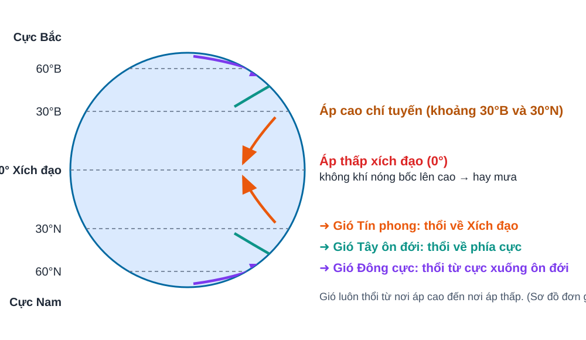
Sơ đồ tự vẽ minh họa (đơn giản hoá).
Sơ đồ tự vẽ minh họa.
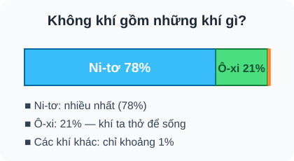
Tự trả lời trong đầu trước, rồi bấm vào câu hỏi để kiểm tra đáp án. (Hình minh họa nằm ở phần bài học phía trên; đáp án không lặp lại hình để em tự nhớ lại nhé!)
✍️ Viết để ôn lại — Bài 15. Lớp vỏ khí của Trái Đất. Khí áp và gió
Trước khi suy luận, em ôn lại nội dung bài bằng 2 câu này (in phiếu bên dưới). Viết bằng lời của em, không cần viết đúng từng chữ trong bài.
Câu 1. Lớp vỏ khí gồm chủ yếu những khí nào, mỗi khí chiếm bao nhiêu? Tầng nào là nơi ta sống và có thời tiết?
Gợi mở: Không khí quanh ta nhiều nhất là khí nào? / Tầng sát mặt đất nhất tên là gì?
Ý chính cần có: Lớp vỏ khí (khí quyển) gồm chủ yếu khí ni-tơ (78%) và ô-xi (21%); tầng gần mặt đất nhất là tầng đối lưu, nơi xảy ra hầu hết hiện tượng thời tiết (mây, mưa, gió) và là nơi ta sống.
Câu 2. Gió là gì và thổi theo hướng nào?
Gợi mở: Không khí chuyển động từ nơi áp cao hay áp thấp? / Áp chênh lệch nhiều thì gió mạnh hay yếu?
Ý chính cần có: Khí áp là sức ép của không khí lên bề mặt Trái Đất; gió là sự chuyển động của không khí từ nơi khí áp cao đến nơi khí áp thấp; áp càng chênh lệch nhiều, gió càng mạnh; các loại gió chính: gió Tín phong (thổi đều về phía Xích đạo), gió Tây ôn đới, gió Đông cực.
Phiếu viết ôn lại — Bài 15. Lớp vỏ khí của Trái Đất. Khí áp và gió
Họ và tên: ______________________ Lớp: __________
Câu 1. Lớp vỏ khí gồm chủ yếu những khí nào, mỗi khí chiếm bao nhiêu? Tầng nào là nơi ta sống và có thời tiết?
Câu 2. Gió là gì và thổi theo hướng nào?
Viết xong, bấm xem “Ý cần có” để tự tick: em đủ mấy ý?
✍️ Viết ra suy nghĩ của em — Bài 15. Lớp vỏ khí của Trái Đất. Khí áp và gió
Học xong bài này, em viết 2 câu trả lời ra giấy (in phiếu bên dưới). Viết bằng lời của em, không cần viết đúng từng chữ trong bài.
Câu 1. Vì sao gió thổi từ nơi khí áp cao sang nơi khí áp thấp?
Gợi mở: Khí áp là gì? / Nơi áp cao không khí dồn nhiều hay ít? / Không khí sẽ tràn về đâu để cân bằng?
Ý chính cần có: Khí áp là sức ép của không khí lên bề mặt Trái Đất; nơi áp cao không khí dồn nhiều hơn; không khí chuyển động từ nơi áp cao sang nơi áp thấp — đó là gió; chênh lệch càng nhiều, gió càng mạnh.
Câu 2. Không khí gồm chủ yếu những khí nào? Vì sao em cần quan tâm đến việc giữ không khí trong lành?
Gợi mở: Khí nào nhiều nhất, bao nhiêu phần trăm? / Khí nào con người cần để thở? / Không khí bẩn ảnh hưởng gì đến sức khỏe?
Ý chính cần có: Khí quyển gồm chủ yếu ni-tơ 78% và ô-xi 21%; ô-xi là khí con người cần để thở; giữ không khí trong lành là bảo vệ sức khỏe của chính mình.
Phiếu viết — Bài 15. Lớp vỏ khí của Trái Đất. Khí áp và gió
Họ và tên: ______________________ Lớp: __________
Câu 1. Vì sao gió thổi từ nơi khí áp cao sang nơi khí áp thấp?
Câu 2. Không khí gồm chủ yếu những khí nào? Vì sao em cần quan tâm đến việc giữ không khí trong lành?
Viết xong, bấm xem “Ý cần có” để tự tick: em đủ mấy ý?
Bài 16. Nhiệt độ không khí. Mây và mưa
- Mặt Trời sưởi nóng mặt đất trước; mặt đất nóng lên rồi mới tỏa nhiệt làm nóng không khí ở sát mặt đất. Vì vậy càng lên cao càng lạnh — như khi leo núi cao phải mặc áo ấm!
- Nhiệt độ không khí thay đổi theo: thời gian trong ngày (cao nhất vào khoảng 13–14 giờ), theo mùa và theo vị trí (gần biển mát hơn trong đất liền vào mùa hè).
- Mây hình thành khi hơi nước trong không khí bốc lên cao, gặp lạnh, ngưng tụ thành những hạt nước/li ti lơ lửng.
- Khi các hạt nước trong mây to dần, nặng dần và rơi xuống → mưa. Lượng mưa đo bằng vũ kế, đơn vị là mi-li-mét (mm).
- Nơi gần Xích đạo mưa nhiều quanh năm; vùng sa mạc (như Xa-ha-ra) mưa rất ít — lượng mưa khác nhau giữa các nơi trên Trái Đất.
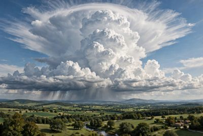
(Tranh minh họa theo phong cách ảnh thật)
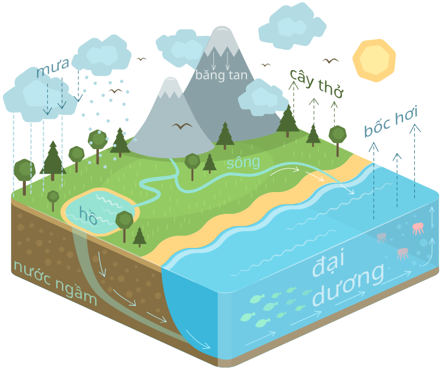
Ảnh: Tttrung — CC BY-SA 4.0. Nguồn: Wikimedia Commons
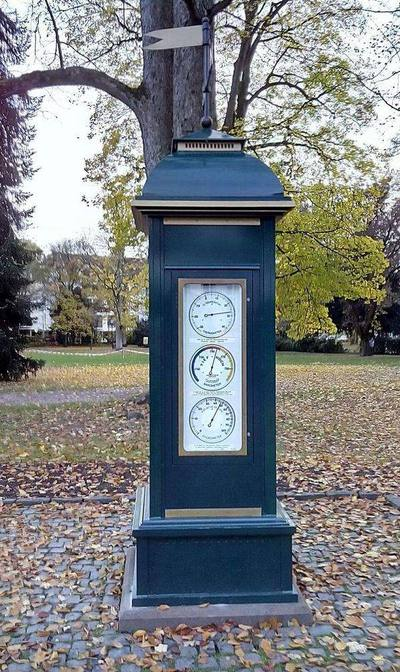
(Tranh minh họa theo phong cách ảnh thật)
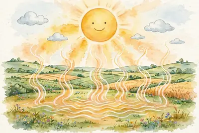
Tự trả lời trong đầu trước, rồi bấm vào câu hỏi để kiểm tra đáp án. (Hình minh họa nằm ở phần bài học phía trên; đáp án không lặp lại hình để em tự nhớ lại nhé!)
✍️ Viết để ôn lại — Bài 16. Nhiệt độ không khí. Mây và mưa
Trước khi suy luận, em ôn lại nội dung bài bằng 2 câu này (in phiếu bên dưới). Viết bằng lời của em, không cần viết đúng từng chữ trong bài.
Câu 1. Không khí nóng lên như thế nào? Càng lên cao, nhiệt độ ra sao?
Gợi mở: Mặt Trời sưởi nóng cái gì trước: mặt đất hay không khí? / Leo núi cao thì nóng hay lạnh?
Ý chính cần có: Mặt Trời sưởi nóng mặt đất trước, mặt đất nóng lên rồi mới tỏa nhiệt làm nóng không khí ở sát mặt đất; vì vậy càng lên cao càng lạnh; nhiệt độ cao nhất vào khoảng 13–14 giờ, thay đổi theo thời gian trong ngày, theo mùa và theo vị trí.
Câu 2. Mây và mưa hình thành như thế nào? Lượng mưa đo bằng gì, đơn vị gì?
Gợi mở: Hơi nước bay lên cao, gặp lạnh thì thành gì? / Hạt nước trong mây to dần, nặng dần thì rơi xuống thành gì?
Ý chính cần có: Mây hình thành khi hơi nước bốc lên cao, gặp lạnh, ngưng tụ thành những hạt nước li ti lơ lửng; khi các hạt nước trong mây to dần, nặng dần và rơi xuống thì thành mưa; lượng mưa đo bằng vũ kế, đơn vị là mi-li-mét (mm).
Phiếu viết ôn lại — Bài 16. Nhiệt độ không khí. Mây và mưa
Họ và tên: ______________________ Lớp: __________
Câu 1. Không khí nóng lên như thế nào? Càng lên cao, nhiệt độ ra sao?
Câu 2. Mây và mưa hình thành như thế nào? Lượng mưa đo bằng gì, đơn vị gì?
Viết xong, bấm xem “Ý cần có” để tự tick: em đủ mấy ý?
✍️ Viết ra suy nghĩ của em — Bài 16. Nhiệt độ không khí. Mây và mưa
Học xong bài này, em viết 2 câu trả lời ra giấy (in phiếu bên dưới). Viết bằng lời của em, không cần viết đúng từng chữ trong bài.
Câu 1. Vì sao càng lên cao càng lạnh, dù càng lên cao càng gần Mặt Trời?
Gợi mở: Mặt Trời sưởi nóng cái gì trước? / Mặt đất nóng lên rồi làm gì? / Không khí ở sát mặt đất hay trên cao được sưởi nhiều hơn?
Ý chính cần có: Mặt Trời sưởi nóng mặt đất trước; mặt đất nóng lên rồi tỏa nhiệt làm nóng không khí sát mặt đất; càng lên cao càng xa nguồn nhiệt này nên càng lạnh.
Câu 2. Nhiệt độ trong ngày cao nhất vào khoảng 13–14 giờ, chứ không phải lúc 12 giờ khi Mặt Trời cao nhất. Vì sao?
Gợi mở: Lúc 12 giờ mặt đất nhận nhiệt nhiều nhất chưa? / Mặt đất cần thời gian để làm gì? / Khi nào mặt đất tỏa nhiệt mạnh nhất?
Ý chính cần có: Mặt Trời sưởi mặt đất trước, mặt đất cần thời gian hấp thụ rồi mới tỏa nhiệt làm nóng không khí; nên nhiệt độ cao nhất trễ hơn lúc nắng gắt nhất, vào khoảng 13–14 giờ.
Phiếu viết — Bài 16. Nhiệt độ không khí. Mây và mưa
Họ và tên: ______________________ Lớp: __________
Câu 1. Vì sao càng lên cao càng lạnh, dù càng lên cao càng gần Mặt Trời?
Câu 2. Nhiệt độ trong ngày cao nhất vào khoảng 13–14 giờ, chứ không phải lúc 12 giờ khi Mặt Trời cao nhất. Vì sao?
Viết xong, bấm xem “Ý cần có” để tự tick: em đủ mấy ý?
Bài 17. Thời tiết và khí hậu. Biến đổi khí hậu
- Thời tiết là trạng thái của khí quyển ở một nơi, trong thời gian ngắn (vài giờ, vài ngày) và thay đổi liên tục.
- Khí hậu là trạng thái thời tiết của một nơi được lặp đi lặp lại trong nhiều năm — gần như đã thành “tính cách” của nơi đó.
- Ví dụ: “Hôm nay trời mưa” là thời tiết; “Miền Bắc có mùa đông lạnh” là khí hậu.
- Trên Trái Đất có các đới khí hậu: đới nóng (quanh Xích đạo), hai đới ôn hòa và hai đới lạnh (ở hai cực). Việt Nam nằm trong đới nóng.
- Biến đổi khí hậu là sự thay đổi lâu dài của khí hậu Trái Đất: nhiệt độ tăng lên (nóng lên toàn cầu), băng tan, mực nước biển dâng, thời tiết cực đoan (bão mạnh, hạn hán, mưa lớn bất thường) nhiều hơn.
- Nguyên nhân chính: con người đốt nhiều nhiên liệu hóa thạch (than, dầu) thải khí nhà kính; chặt phá rừng. Giảm nhẹ bằng cách: trồng cây, tiết kiệm điện, dùng năng lượng sạch.
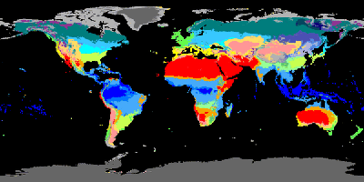
Dữ liệu bản đồ: Beck et al. (bản không viền, không chú giải chữ). Nguồn: Wikimedia Commons
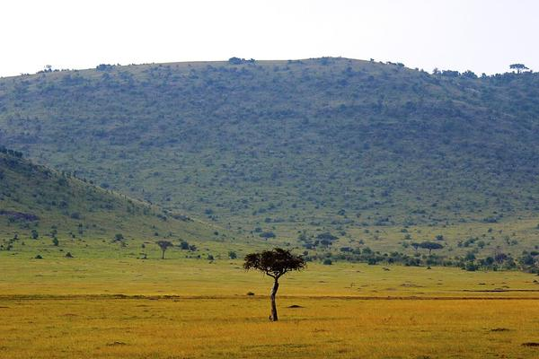
(Tranh minh họa theo phong cách ảnh thật)
Tự trả lời trong đầu trước, rồi bấm vào câu hỏi để kiểm tra đáp án. (Hình minh họa nằm ở phần bài học phía trên; đáp án không lặp lại hình để em tự nhớ lại nhé!)
✍️ Viết để ôn lại — Bài 17. Thời tiết và khí hậu. Biến đổi khí hậu
Trước khi suy luận, em ôn lại nội dung bài bằng 2 câu này (in phiếu bên dưới). Viết bằng lời của em, không cần viết đúng từng chữ trong bài.
Câu 1. Thời tiết và khí hậu khác nhau ở điểm nào? Cho ví dụ mỗi loại.
Gợi mở: “Hôm nay trời mưa” nói về thời tiết hay khí hậu? / “Miền Bắc có mùa đông lạnh” nói về cái nào?
Ý chính cần có: Thời tiết là trạng thái của khí quyển ở một nơi, trong thời gian ngắn (vài giờ, vài ngày) và thay đổi liên tục; khí hậu là trạng thái thời tiết của một nơi được lặp đi lặp lại trong nhiều năm.
Câu 2. Trái Đất có mấy đới khí hậu? Biến đổi khí hậu biểu hiện ra sao?
Gợi mở: Quanh Xích đạo là đới nào? / Hai cực là đới nào? / Việt Nam ở đới nào? / Trái Đất nóng lên thì băng và biển ra sao?
Ý chính cần có: Trên Trái Đất có 5 đới khí hậu: đới nóng (quanh Xích đạo), hai đới ôn hòa và hai đới lạnh (ở hai cực); Việt Nam nằm trong đới nóng; biến đổi khí hậu là sự thay đổi lâu dài của khí hậu: nhiệt độ tăng lên, băng tan, mực nước biển dâng, thời tiết cực đoan (bão mạnh, hạn hán, mưa lớn bất thường) nhiều hơn.
Phiếu viết ôn lại — Bài 17. Thời tiết và khí hậu. Biến đổi khí hậu
Họ và tên: ______________________ Lớp: __________
Câu 1. Thời tiết và khí hậu khác nhau ở điểm nào? Cho ví dụ mỗi loại.
Câu 2. Trái Đất có mấy đới khí hậu? Biến đổi khí hậu biểu hiện ra sao?
Viết xong, bấm xem “Ý cần có” để tự tick: em đủ mấy ý?
✍️ Viết ra suy nghĩ của em — Bài 17. Thời tiết và khí hậu. Biến đổi khí hậu
Học xong bài này, em viết 2 câu trả lời ra giấy (in phiếu bên dưới). Viết bằng lời của em, không cần viết đúng từng chữ trong bài.
Câu 1. Vì sao câu 'Hôm nay trời mưa' nói về thời tiết, còn câu 'Miền Bắc có mùa đông lạnh' nói về khí hậu?
Gợi mở: Thời tiết kéo dài bao lâu, có hay thay đổi không? / Khí hậu là gì? / Câu nào lặp lại nhiều năm?
Ý chính cần có: Thời tiết = trạng thái khí quyển ở một nơi trong thời gian ngắn (vài giờ, vài ngày), hay thay đổi; khí hậu = trạng thái thời tiết lặp đi lặp lại trong nhiều năm, gần như thành 'tính cách' của nơi đó.
Câu 2. Trái Đất nóng lên gây ra những hậu quả gì? Em có thể làm gì để góp phần giảm nhẹ?
Gợi mở: Nóng lên thì băng ở hai cực ra sao? / Biển dâng ảnh hưởng gì? / Tiết kiệm điện, trồng cây giúp gì?
Ý chính cần có: Trái Đất nóng lên → băng tan, biển dâng; các đới khí hậu thay đổi; em góp phần bằng tiết kiệm điện, trồng và bảo vệ cây xanh, hạn chế rác thải.
Phiếu viết — Bài 17. Thời tiết và khí hậu. Biến đổi khí hậu
Họ và tên: ______________________ Lớp: __________
Câu 1. Vì sao câu 'Hôm nay trời mưa' nói về thời tiết, còn câu 'Miền Bắc có mùa đông lạnh' nói về khí hậu?
Câu 2. Trái Đất nóng lên gây ra những hậu quả gì? Em có thể làm gì để góp phần giảm nhẹ?
Viết xong, bấm xem “Ý cần có” để tự tick: em đủ mấy ý?
Bài 18. Thực hành: Phân tích biểu đồ nhiệt độ, lượng mưa
- Biểu đồ nhiệt độ – lượng mưa gồm: đường màu đỏ thể hiện nhiệt độ trung bình các tháng, các cột màu xanh thể hiện lượng mưa các tháng.
- Trục bên trái (hoặc phải) ghi nhiệt độ (°C); trục còn lại ghi lượng mưa (mm); hàng dưới là 12 tháng trong năm.
- Cách đọc: tìm tháng nóng nhất, tháng lạnh nhất → tính biên độ nhiệt (nóng nhất trừ lạnh nhất); cộng lượng mưa các tháng → tổng lượng mưa năm; xem mưa tập trung vào mùa nào.
- Từ biểu đồ, em nhận xét được đặc điểm khí hậu: nóng hay lạnh, mưa nhiều hay ít, có mùa khô hay không.
- Ví dụ: biểu đồ có đường nhiệt độ luôn trên 20°C và cột mưa cao vào các tháng 5–10 → khí hậu nhiệt đới gió mùa như ở Việt Nam.
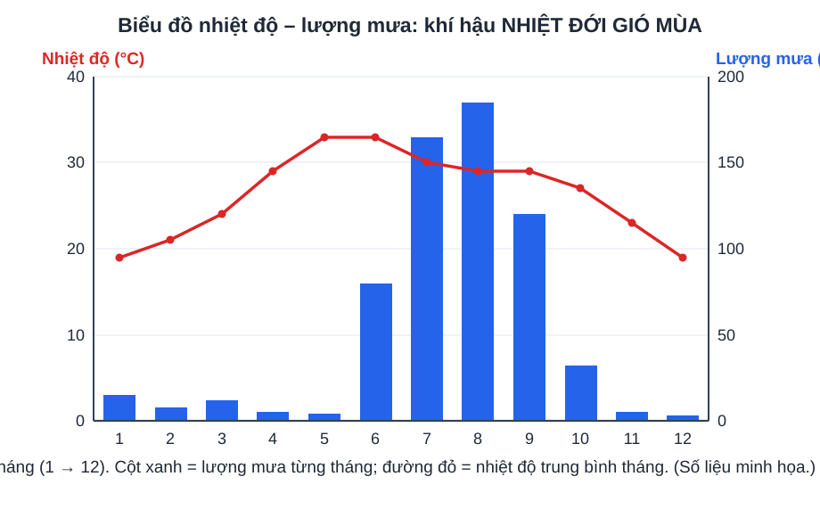
Sơ đồ tự vẽ minh họa (đơn giản hoá).
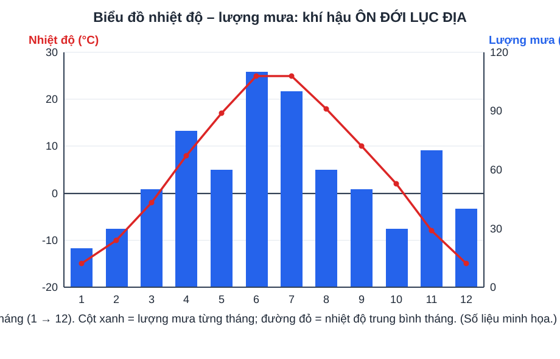
Sơ đồ tự vẽ minh họa (đơn giản hoá).
Tự trả lời trong đầu trước, rồi bấm vào câu hỏi để kiểm tra đáp án. (Hình minh họa nằm ở phần bài học phía trên; đáp án không lặp lại hình để em tự nhớ lại nhé!)
✍️ Viết để ôn lại — Bài 18. Thực hành: Phân tích biểu đồ nhiệt độ, lượng mưa
Trước khi suy luận, em ôn lại nội dung bài bằng 2 câu này (in phiếu bên dưới). Viết bằng lời của em, không cần viết đúng từng chữ trong bài.
Câu 1. Trên biểu đồ nhiệt độ – lượng mưa, nhiệt độ và lượng mưa được thể hiện ra sao?
Gợi mở: Yếu tố nào vẽ bằng đường màu đỏ? / Yếu tố nào vẽ bằng cột màu xanh? / Hàng dưới ghi gì?
Ý chính cần có: Đường màu đỏ thể hiện nhiệt độ trung bình các tháng, các cột màu xanh thể hiện lượng mưa các tháng; trục ghi nhiệt độ (°C) và lượng mưa (mm), hàng dưới là 12 tháng trong năm.
Câu 2. Đọc biểu đồ, em tìm biên độ nhiệt và tổng lượng mưa năm như thế nào?
Gợi mở: Tháng nóng nhất trừ tháng lạnh nhất ra gì? / Muốn biết tổng mưa cả năm thì cộng hay trừ các tháng?
Ý chính cần có: Tìm tháng nóng nhất, tháng lạnh nhất rồi tính biên độ nhiệt (nóng nhất trừ lạnh nhất); cộng lượng mưa các tháng ra tổng lượng mưa năm; xem mưa tập trung vào mùa nào; từ đó nhận xét khí hậu nóng hay lạnh, mưa nhiều hay ít, có mùa khô hay không.
Phiếu viết ôn lại — Bài 18. Thực hành: Phân tích biểu đồ nhiệt độ, lượng mưa
Họ và tên: ______________________ Lớp: __________
Câu 1. Trên biểu đồ nhiệt độ – lượng mưa, nhiệt độ và lượng mưa được thể hiện ra sao?
Câu 2. Đọc biểu đồ, em tìm biên độ nhiệt và tổng lượng mưa năm như thế nào?
Viết xong, bấm xem “Ý cần có” để tự tick: em đủ mấy ý?
✍️ Viết ra suy nghĩ của em — Bài 18. Thực hành: Phân tích biểu đồ nhiệt độ, lượng mưa
Học xong bài này, em viết 2 câu trả lời ra giấy (in phiếu bên dưới). Viết bằng lời của em, không cần viết đúng từng chữ trong bài.
Câu 1. Em hãy viết cách đọc một biểu đồ nhiệt độ – lượng mưa: làm sao biết tháng nào nóng nhất, lạnh nhất, mưa nhiều nhất?
Gợi mở: Đường đỏ và cột xanh thể hiện gì? / Trục ghi những đơn vị nào? / Muốn tìm tháng nóng nhất thì nhìn vào đâu?
Ý chính cần có: Đường đỏ = nhiệt độ trung bình các tháng (°C); cột xanh = lượng mưa các tháng (mm); tháng nóng nhất = đỉnh đường đỏ cao nhất; tháng mưa nhiều nhất = cột xanh cao nhất.
Câu 2. Một biểu đồ cho biết: tháng 7 nóng nhất 29°C, tháng 1 lạnh nhất 17°C. Em hãy tính biên độ nhiệt và viết lời giải.
Gợi mở: Biên độ nhiệt tính bằng cách nào? / 29 − 17 bằng mấy? / Đơn vị là gì?
Ý chính cần có: Biên độ nhiệt = nhiệt độ tháng nóng nhất trừ tháng lạnh nhất; 29 − 17 = 12; biên độ nhiệt là 12°C.
Phiếu viết — Bài 18. Thực hành: Phân tích biểu đồ nhiệt độ, lượng mưa
Họ và tên: ______________________ Lớp: __________
Câu 1. Em hãy viết cách đọc một biểu đồ nhiệt độ – lượng mưa: làm sao biết tháng nào nóng nhất, lạnh nhất, mưa nhiều nhất?
Câu 2. Một biểu đồ cho biết: tháng 7 nóng nhất 29°C, tháng 1 lạnh nhất 17°C. Em hãy tính biên độ nhiệt và viết lời giải.
Viết xong, bấm xem “Ý cần có” để tự tick: em đủ mấy ý?
Bài 19. Thủy quyển và vòng tuần hoàn lớn của nước
- Thủy quyển là toàn bộ nước trên Trái Đất: nước ở đại dương, biển, sông, hồ, nước ngầm dưới đất, băng tuyết và cả hơi nước trong khí quyển.
- Nước biển và đại dương chiếm khoảng 97,5% lượng nước; nước ngọt chỉ khoảng 2,5% — và phần lớn nước ngọt lại bị “khóa” trong băng tuyết!
- Vòng tuần hoàn lớn của nước: nước biển bốc hơi → hơi nước được gió đưa vào đất liền → ngưng tụ thành mây → mưa rơi xuống → chảy thành sông, ngấm xuống đất → cuối cùng lại chảy về biển. Vòng này lặp đi lặp lại không ngừng.
- Động lực của vòng tuần hoàn là năng lượng Mặt Trời (làm nước bốc hơi) và trọng lực (làm nước chảy từ cao xuống thấp).
- Nước là nguồn sống: không có nước thì không có sự sống trên Trái Đất — vì vậy phải tiết kiệm và bảo vệ nguồn nước.
Ảnh: Tttrung — CC BY-SA 4.0. Nguồn: Wikimedia Commons
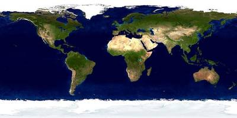
Ảnh: NASA Goddard Space Flight Center Image by Ret — CC BY-SA 3.0. Nguồn: Wikimedia Commons
Tự trả lời trong đầu trước, rồi bấm vào câu hỏi để kiểm tra đáp án. (Hình minh họa nằm ở phần bài học phía trên; đáp án không lặp lại hình để em tự nhớ lại nhé!)
✍️ Viết để ôn lại — Bài 19. Thủy quyển và vòng tuần hoàn lớn của nước
Trước khi suy luận, em ôn lại nội dung bài bằng 2 câu này (in phiếu bên dưới). Viết bằng lời của em, không cần viết đúng từng chữ trong bài.
Câu 1. Thủy quyển gồm những dạng nước nào? Nước mặn và nước ngọt chiếm khoảng bao nhiêu?
Gợi mở: Nước ở biển, sông, hồ, dưới đất, băng tuyết, trong không khí gọi chung là gì? / Nước ngọt chiếm mấy phần trăm?
Ý chính cần có: Thủy quyển là toàn bộ nước trên Trái Đất: nước ở đại dương, biển, sông, hồ, nước ngầm dưới đất, băng tuyết và hơi nước trong khí quyển; nước biển và đại dương chiếm khoảng 97,5%, nước ngọt chỉ khoảng 2,5% và phần lớn nước ngọt lại bị “khóa” trong băng tuyết.
Câu 2. Kể đúng thứ tự các giai đoạn của vòng tuần hoàn lớn của nước.
Gợi mở: Nước biển bốc hơi rồi đi đâu? / Hơi nước thành mây rồi rơi xuống thành gì? / Nước cuối cùng chảy về đâu?
Ý chính cần có: Nước biển bốc hơi, hơi nước được gió đưa vào đất liền, ngưng tụ thành mây, mưa rơi xuống, chảy thành sông, ngấm xuống đất, cuối cùng lại chảy về biển; vòng này lặp đi lặp lại không ngừng, nhờ năng lượng Mặt Trời (làm nước bốc hơi) và trọng lực (làm nước chảy từ cao xuống thấp).
Phiếu viết ôn lại — Bài 19. Thủy quyển và vòng tuần hoàn lớn của nước
Họ và tên: ______________________ Lớp: __________
Câu 1. Thủy quyển gồm những dạng nước nào? Nước mặn và nước ngọt chiếm khoảng bao nhiêu?
Câu 2. Kể đúng thứ tự các giai đoạn của vòng tuần hoàn lớn của nước.
Viết xong, bấm xem “Ý cần có” để tự tick: em đủ mấy ý?
✍️ Viết ra suy nghĩ của em — Bài 19. Thủy quyển và vòng tuần hoàn lớn của nước
Học xong bài này, em viết 2 câu trả lời ra giấy (in phiếu bên dưới). Viết bằng lời của em, không cần viết đúng từng chữ trong bài.
Câu 1. Vì sao vòng tuần hoàn của nước cứ lặp mãi không ngừng?
Gợi mở: Nước biển bốc hơi nhờ năng lượng nào? / Hơi nước ngưng tụ thành gì? / Mưa rơi xuống rồi chảy về đâu? / Cái gì làm nước chảy từ cao xuống thấp?
Ý chính cần có: Vòng tuần hoàn: bốc hơi → ngưng tụ thành mây → mưa → chảy về biển; động lực là năng lượng Mặt Trời (làm nước bốc hơi) và trọng lực (làm nước chảy từ cao xuống thấp); nên vòng này lặp mãi không ngừng.
Câu 2. Nước ngọt chỉ khoảng 2,5% mà phần lớn lại bị 'khóa' trong băng tuyết. Vì sao em phải tiết kiệm nước ngọt?
Gợi mở: Nước biển chiếm bao nhiêu phần trăm? / Nước ngọt dùng được ngay có nhiều không? / Lãng phí nước ngọt thì sao?
Ý chính cần có: Nước biển và đại dương chiếm khoảng 97,5%; nước ngọt chỉ khoảng 2,5% và phần lớn bị khóa trong băng; nước ngọt dùng được rất ít nên phải tiết kiệm.
Phiếu viết — Bài 19. Thủy quyển và vòng tuần hoàn lớn của nước
Họ và tên: ______________________ Lớp: __________
Câu 1. Vì sao vòng tuần hoàn của nước cứ lặp mãi không ngừng?
Câu 2. Nước ngọt chỉ khoảng 2,5% mà phần lớn lại bị 'khóa' trong băng tuyết. Vì sao em phải tiết kiệm nước ngọt?
Viết xong, bấm xem “Ý cần có” để tự tick: em đủ mấy ý?
Bài 20. Sông và hồ. Nước ngầm và băng hà
- Sông là dòng nước chảy thường xuyên, tương đối ổn định trên bề mặt đất, thường bắt nguồn từ nơi cao và chảy về nơi thấp, đổ ra biển, hồ hoặc sông khác.
- Hệ thống sông gồm: sông chính, phụ lưu (sông nhỏ chảy vào sông chính) và chi lưu; vùng đất mà sông thu nước gọi là lưu vực sông.
- Hồ là vùng nước đọng trong những chỗ trũng của bề mặt đất. Hồ lớn nhất thế giới về diện tích là biển Caspi; hồ nước ngọt sâu nhất là hồ Bai-kan (Nga).
- Nước ngầm là nước nằm dưới bề mặt đất, trong các lỗ rỗng và khe nứt của đất đá — nguồn nước giếng khoan của nhiều gia đình.
- Băng hà là những khối băng khổng lồ, di chuyển chậm trên lục địa (như ở Nam Cực, đảo Greenland) — nơi chứa phần lớn lượng nước ngọt của Trái Đất.
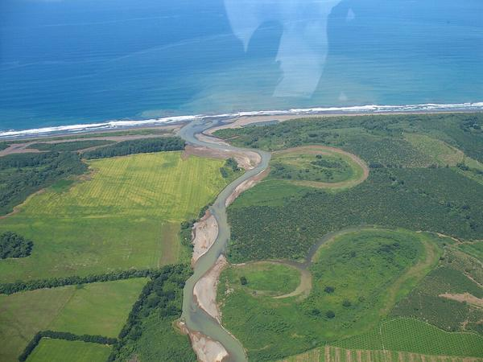
(Tranh minh họa theo phong cách ảnh thật)
(Tranh minh họa theo phong cách ảnh thật)
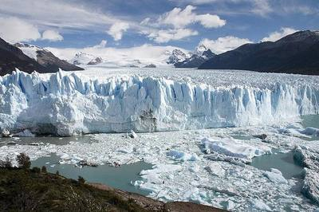
(Tranh minh họa theo phong cách ảnh thật)
Tự trả lời trong đầu trước, rồi bấm vào câu hỏi để kiểm tra đáp án. (Hình minh họa nằm ở phần bài học phía trên; đáp án không lặp lại hình để em tự nhớ lại nhé!)
✍️ Viết để ôn lại — Bài 20. Sông và hồ. Nước ngầm và băng hà
Trước khi suy luận, em ôn lại nội dung bài bằng 2 câu này (in phiếu bên dưới). Viết bằng lời của em, không cần viết đúng từng chữ trong bài.
Câu 1. Sông, hồ, nước ngầm và băng hà khác nhau ở điểm nào?
Gợi mở: Dòng nào là nước chảy? / Vùng nào là nước đọng? / Nước nào nằm dưới mặt đất? / Khối nào là băng di chuyển chậm?
Ý chính cần có: Sông là dòng nước chảy thường xuyên, tương đối ổn định trên bề mặt đất, từ nơi cao chảy về nơi thấp; hồ là vùng nước đọng trong những chỗ trũng của bề mặt đất; nước ngầm là nước nằm dưới bề mặt đất, trong các lỗ rỗng và khe nứt của đất đá; băng hà là những khối băng khổng lồ, di chuyển chậm trên lục địa, nơi chứa phần lớn lượng nước ngọt của Trái Đất.
Câu 2. Hệ thống sông gồm những bộ phận nào?
Gợi mở: Sông nhỏ chảy vào sông chính gọi là gì? / Vùng đất mà sông thu nước gọi là gì?
Ý chính cần có: Hệ thống sông gồm sông chính, phụ lưu (sông nhỏ chảy vào sông chính) và chi lưu; vùng đất mà sông thu nước gọi là lưu vực sông.
Phiếu viết ôn lại — Bài 20. Sông và hồ. Nước ngầm và băng hà
Họ và tên: ______________________ Lớp: __________
Câu 1. Sông, hồ, nước ngầm và băng hà khác nhau ở điểm nào?
Câu 2. Hệ thống sông gồm những bộ phận nào?
Viết xong, bấm xem “Ý cần có” để tự tick: em đủ mấy ý?
✍️ Viết ra suy nghĩ của em — Bài 20. Sông và hồ. Nước ngầm và băng hà
Học xong bài này, em viết 2 câu trả lời ra giấy (in phiếu bên dưới). Viết bằng lời của em, không cần viết đúng từng chữ trong bài.
Câu 1. Vì sao sông chảy từ nơi cao xuống nơi thấp chứ không chảy ngược lên?
Gợi mở: Sông bắt nguồn từ đâu? / Sông đổ ra đâu? / Cái gì kéo nước chảy xuống?
Ý chính cần có: Sông là dòng nước chảy thường xuyên, tương đối ổn định; bắt nguồn từ nơi cao, chảy về nơi thấp, đổ ra biển; trọng lực kéo nước từ cao xuống thấp nên sông không chảy ngược.
Câu 2. Nước ngầm là gì? Vì sao giếng khoan lại lấy được nước?
Gợi mở: Nước ngầm nằm ở đâu? / Nước nằm trong cái gì của đất đá? / Khoan xuống gặp nước ngầm thì sao?
Ý chính cần có: Nước ngầm là nước nằm dưới bề mặt đất, trong các lỗ rỗng và khe nứt của đất đá; khoan xuống tới lớp chứa nước là lấy được nước — đó là nguồn nước giếng khoan của nhiều gia đình.
Phiếu viết — Bài 20. Sông và hồ. Nước ngầm và băng hà
Họ và tên: ______________________ Lớp: __________
Câu 1. Vì sao sông chảy từ nơi cao xuống nơi thấp chứ không chảy ngược lên?
Câu 2. Nước ngầm là gì? Vì sao giếng khoan lại lấy được nước?
Viết xong, bấm xem “Ý cần có” để tự tick: em đủ mấy ý?
Bài 21. Biển và đại dương
- Trên Trái Đất có 4 đại dương: Thái Bình Dương, Đại Tây Dương, Ấn Độ Dương và Bắc Băng Dương. Thái Bình Dương là đại dương lớn nhất và sâu nhất.
- Biển là bộ phận của đại dương, nằm gần lục địa và bị đất liền bao bọc một phần (ví dụ: Biển Đông của Việt Nam).
- Nước biển có vị mặn vì chứa muối — trung bình khoảng 35‰ (35 gam muối trong 1 lít nước). Độ mặn khác nhau giữa các biển.
- Nước biển luôn vận động: sóng (do gió), thủy triều (nước lên – xuống theo Mặt Trăng) và dòng biển (những “con sông” chảy trong đại dương).
- Biển và đại dương cho con người: hải sản, muối, dầu khí, đường giao thông và du lịch — nhưng cũng cần được bảo vệ khỏi ô nhiễm.
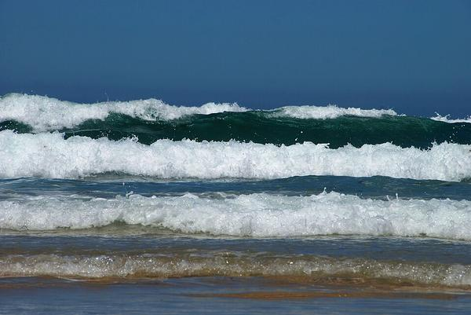
(Tranh minh họa theo phong cách ảnh thật)
(Tranh minh họa theo phong cách ảnh thật)
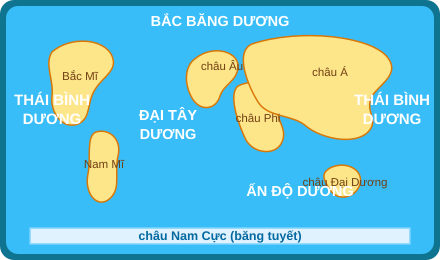
Tự trả lời trong đầu trước, rồi bấm vào câu hỏi để kiểm tra đáp án. (Hình minh họa nằm ở phần bài học phía trên; đáp án không lặp lại hình để em tự nhớ lại nhé!)
✍️ Viết để ôn lại — Bài 21. Biển và đại dương
Trước khi suy luận, em ôn lại nội dung bài bằng 2 câu này (in phiếu bên dưới). Viết bằng lời của em, không cần viết đúng từng chữ trong bài.
Câu 1. Theo bài này, Trái Đất có mấy đại dương? Kể tên và cho biết đại dương nào lớn nhất, sâu nhất.
Gợi mở: Thái Bình Dương, Đại Tây Dương, Ấn Độ Dương, Bắc Băng Dương: đại dương nào lớn nhất?
Ý chính cần có: Trên Trái Đất có 4 đại dương: Thái Bình Dương, Đại Tây Dương, Ấn Độ Dương và Bắc Băng Dương; Thái Bình Dương là đại dương lớn nhất và sâu nhất; lưu ý: một số tài liệu mới còn tính thêm Nam Đại Dương quanh Nam Cực, nên có nơi nói Trái Đất có 5 đại dương.
Câu 2. Nước biển mặn ra sao và vận động bằng những hình thức nào?
Gợi mở: 1 lít nước biển có bao nhiêu gam muối? / Sóng do đâu? / Nước lên xuống theo cái gì? / “Con sông” trong đại dương gọi là gì?
Ý chính cần có: Nước biển có vị mặn vì chứa muối, trung bình khoảng 35 phần nghìn (35 gam muối trong 1 lít nước), độ mặn khác nhau giữa các biển; nước biển vận động bằng sóng (do gió), thủy triều (nước lên – xuống theo Mặt Trăng) và dòng biển (những “con sông” chảy trong đại dương).
Phiếu viết ôn lại — Bài 21. Biển và đại dương
Họ và tên: ______________________ Lớp: __________
Câu 1. Theo bài này, Trái Đất có mấy đại dương? Kể tên và cho biết đại dương nào lớn nhất, sâu nhất.
Câu 2. Nước biển mặn ra sao và vận động bằng những hình thức nào?
Viết xong, bấm xem “Ý cần có” để tự tick: em đủ mấy ý?
✍️ Viết ra suy nghĩ của em — Bài 21. Biển và đại dương
Học xong bài này, em viết 2 câu trả lời ra giấy (in phiếu bên dưới). Viết bằng lời của em, không cần viết đúng từng chữ trong bài.
Câu 1. Vì sao nước biển lại mặn?
Gợi mở: Nước biển chứa gì? / Trung bình bao nhiêu gam muối trong 1 lít nước? / Độ mặn có giống nhau ở mọi biển không?
Ý chính cần có: Nước biển có vị mặn vì chứa muối; trung bình khoảng 35‰ (35 gam muối trong 1 lít nước); độ mặn khác nhau giữa các biển.
Câu 2. Sóng, thủy triều và dòng biển khác nhau thế nào? Em hãy viết cách phân biệt ba hiện tượng này.
Gợi mở: Sóng do cái gì gây ra? / Thủy triều lên xuống theo cái gì? / Dòng biển giống cái gì chảy trong đại dương?
Ý chính cần có: Sóng do gió; thủy triều là nước lên – xuống theo Mặt Trăng; dòng biển là những 'con sông' chảy trong đại dương.
Phiếu viết — Bài 21. Biển và đại dương
Họ và tên: ______________________ Lớp: __________
Câu 1. Vì sao nước biển lại mặn?
Câu 2. Sóng, thủy triều và dòng biển khác nhau thế nào? Em hãy viết cách phân biệt ba hiện tượng này.
Viết xong, bấm xem “Ý cần có” để tự tick: em đủ mấy ý?
Bài 22. Lớp đất trên Trái Đất
- Đất (thổ nhưỡng) là lớp vật chất mỏng, tơi xốp trên bề mặt lục địa, được hình thành từ đá bị phong hóa cộng với mùn từ xác sinh vật phân hủy.
- Đất gồm nhiều tầng xếp chồng: trên cùng là tầng mùn (màu sẫm, giàu chất dinh dưỡng), giữa là tầng tích tụ, dưới là tầng đá mẹ đang phong hóa, dưới cùng là đá gốc.
- Đất hình thành nhờ nhiều nhân tố: đá mẹ, khí hậu, sinh vật, địa hình và thời gian — đất “lớn lên” rất chậm, hàng trăm năm mới được vài xăng-ti-mét!
- Các loại đất chính theo đới khí hậu: đất phe-ra-lít đỏ vàng ở vùng nóng ẩm (như Việt Nam), đất đen ở thảo nguyên ôn đới (rất màu mỡ), đất pốt-dôn ở vùng lạnh…
- Đất bị đe dọa bởi xói mòn, rửa trôi, nhiễm mặn, ô nhiễm — cần trồng cây, làm ruộng bậc thang, bón phân hợp lí để bảo vệ đất.
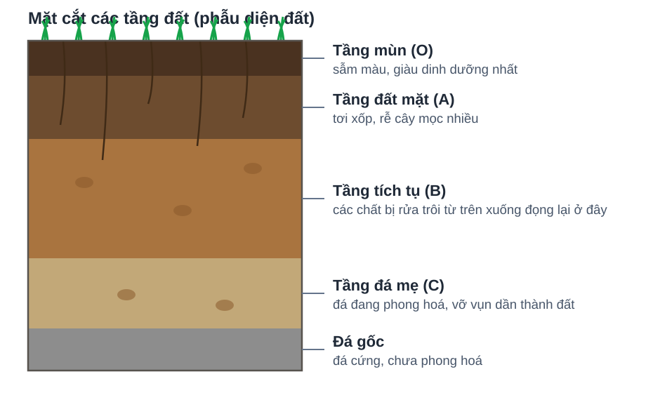
Sơ đồ tự vẽ minh họa (đơn giản hoá).
Sơ đồ tự vẽ minh họa (đơn giản hoá).
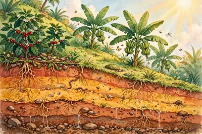
Tự trả lời trong đầu trước, rồi bấm vào câu hỏi để kiểm tra đáp án. (Hình minh họa nằm ở phần bài học phía trên; đáp án không lặp lại hình để em tự nhớ lại nhé!)
✍️ Viết để ôn lại — Bài 22. Lớp đất trên Trái Đất
Trước khi suy luận, em ôn lại nội dung bài bằng 2 câu này (in phiếu bên dưới). Viết bằng lời của em, không cần viết đúng từng chữ trong bài.
Câu 1. Đất được hình thành từ những gì và gồm những tầng nào, từ trên xuống dưới?
Gợi mở: Đá bị phong hóa cộng với cái gì thành đất? / Tầng trên cùng màu gì, giàu chất gì?
Ý chính cần có: Đất (thổ nhưỡng) là lớp vật chất mỏng, tơi xốp trên bề mặt lục địa, được hình thành từ đá bị phong hóa cộng với mùn từ xác sinh vật phân hủy; các tầng từ trên xuống: tầng mùn (màu sẫm, giàu chất dinh dưỡng), tầng tích tụ, tầng đá mẹ đang phong hóa, dưới cùng là đá gốc.
Câu 2. Đất hình thành nhờ những nhân tố nào và hình thành nhanh hay chậm?
Gợi mở: Đất “lớn lên” trong bao lâu mới được vài xăng-ti-mét? / Kể các nhân tố: đá, khí hậu, sinh vật, địa hình, thời gian?
Ý chính cần có: Đất hình thành nhờ nhiều nhân tố: đá mẹ, khí hậu, sinh vật, địa hình và thời gian; đất “lớn lên” rất chậm, hàng trăm năm mới được vài xăng-ti-mét; ví dụ đất phe-ra-lít đỏ vàng ở vùng nóng ẩm như Việt Nam, đất đen ở thảo nguyên ôn đới rất màu mỡ.
Phiếu viết ôn lại — Bài 22. Lớp đất trên Trái Đất
Họ và tên: ______________________ Lớp: __________
Câu 1. Đất được hình thành từ những gì và gồm những tầng nào, từ trên xuống dưới?
Câu 2. Đất hình thành nhờ những nhân tố nào và hình thành nhanh hay chậm?
Viết xong, bấm xem “Ý cần có” để tự tick: em đủ mấy ý?
✍️ Viết ra suy nghĩ của em — Bài 22. Lớp đất trên Trái Đất
Học xong bài này, em viết 2 câu trả lời ra giấy (in phiếu bên dưới). Viết bằng lời của em, không cần viết đúng từng chữ trong bài.
Câu 1. Vì sao đất hình thành rất chậm nên con người phải bảo vệ đất, chống xói mòn?
Gợi mở: Đất hình thành từ gì? / Mất bao lâu mới được lớp đất mỏng? / Xói mòn làm mất đất nhanh hay chậm?
Ý chính cần có: Đất = đá phong hóa + mùn, gồm nhiều tầng (mùn ở trên cùng); đất 'lớn lên' rất chậm, hàng trăm năm mới được lớp đất mỏng; xói mòn phá mất nhanh nên phải bảo vệ.
Câu 2. Tầng mùn nằm ở đâu trong đất? Vì sao tầng này quan trọng với cây trồng?
Gợi mở: Các tầng đất xếp chồng thế nào? / Tầng mùn có màu gì, giàu chất gì? / Cây lấy dinh dưỡng từ đâu?
Ý chính cần có: Tầng mùn ở trên cùng, màu sẫm, giàu chất dinh dưỡng; cây trồng lấy dinh dưỡng chủ yếu từ tầng này; mất tầng mùn là đất bạc màu, cây khó sống.
Phiếu viết — Bài 22. Lớp đất trên Trái Đất
Họ và tên: ______________________ Lớp: __________
Câu 1. Vì sao đất hình thành rất chậm nên con người phải bảo vệ đất, chống xói mòn?
Câu 2. Tầng mùn nằm ở đâu trong đất? Vì sao tầng này quan trọng với cây trồng?
Viết xong, bấm xem “Ý cần có” để tự tick: em đủ mấy ý?
Bài 23. Sự sống trên Trái Đất
- Sinh vật phân bố không đều trên Trái Đất: nơi đông đúc (rừng nhiệt đới), nơi thưa thớt (sa mạc, vùng cực) — vì mỗi nơi có khí hậu, đất, nước khác nhau.
- Nhân tố quyết định nhất là khí hậu (nhiệt độ và lượng mưa): nóng ẩm → sinh vật phong phú; khô lạnh → sinh vật nghèo nàn.
- Ở đới nóng: rừng mưa nhiệt đới xanh quanh năm, động thực vật vô cùng phong phú; xa-van (đồng cỏ cao) có mùa mưa – mùa khô rõ rệt.
- Ở đới ôn hòa: rừng lá rộng, rừng lá kim, thảo nguyên. Ở đới lạnh: đài nguyên nghèo nàn, cây thấp lùn sát đất.
- Con người tác động lớn tới sự sống: phá rừng làm mất nơi ở của sinh vật, nhiều loài bị đe dọa tuyệt chủng → cần bảo vệ đa dạng sinh học.
(Tranh minh họa theo phong cách ảnh thật)
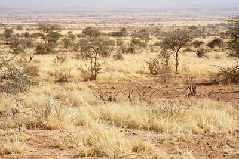
(Tranh minh họa theo phong cách ảnh thật)
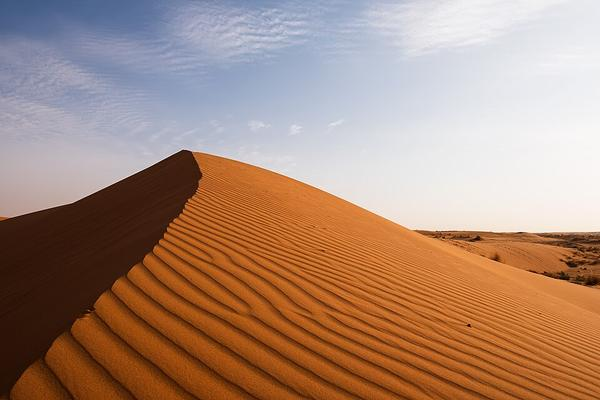
(Tranh minh họa theo phong cách ảnh thật)
Tự trả lời trong đầu trước, rồi bấm vào câu hỏi để kiểm tra đáp án. (Hình minh họa nằm ở phần bài học phía trên; đáp án không lặp lại hình để em tự nhớ lại nhé!)
✍️ Viết để ôn lại — Bài 23. Sự sống trên Trái Đất
Trước khi suy luận, em ôn lại nội dung bài bằng 2 câu này (in phiếu bên dưới). Viết bằng lời của em, không cần viết đúng từng chữ trong bài.
Câu 1. Nhân tố nào ảnh hưởng lớn nhất tới sự phân bố sinh vật? Sinh vật phân bố ra sao theo khí hậu?
Gợi mở: Nhiệt độ và lượng mưa quyết định điều gì? / Nơi nóng ẩm thì sinh vật đông hay thưa? / Nơi khô, lạnh thì ra sao?
Ý chính cần có: Sinh vật phân bố không đều trên Trái Đất: nơi đông đúc (rừng nhiệt đới), nơi thưa thớt (sa mạc, vùng cực); nhân tố quyết định nhất là khí hậu (nhiệt độ và lượng mưa): nóng ẩm thì sinh vật phong phú, khô hoặc lạnh thì sinh vật nghèo nàn.
Câu 2. Kể tên một số kiểu thực vật ở đới nóng, đới ôn hòa và đới lạnh.
Gợi mở: Đới nóng có rừng gì xanh quanh năm? / Đồng cỏ cao có mùa mưa – mùa khô gọi là gì? / Đới lạnh có cây ra sao?
Ý chính cần có: Đới nóng: rừng mưa nhiệt đới xanh quanh năm, xa-van (đồng cỏ cao) có mùa mưa – mùa khô rõ rệt; đới ôn hòa: rừng lá rộng, rừng lá kim, thảo nguyên; đới lạnh: đài nguyên nghèo nàn, cây thấp lùn sát đất; con người phá rừng làm mất nơi ở của sinh vật, nhiều loài bị đe dọa tuyệt chủng nên cần bảo vệ đa dạng sinh học.
Phiếu viết ôn lại — Bài 23. Sự sống trên Trái Đất
Họ và tên: ______________________ Lớp: __________
Câu 1. Nhân tố nào ảnh hưởng lớn nhất tới sự phân bố sinh vật? Sinh vật phân bố ra sao theo khí hậu?
Câu 2. Kể tên một số kiểu thực vật ở đới nóng, đới ôn hòa và đới lạnh.
Viết xong, bấm xem “Ý cần có” để tự tick: em đủ mấy ý?
✍️ Viết ra suy nghĩ của em — Bài 23. Sự sống trên Trái Đất
Học xong bài này, em viết 2 câu trả lời ra giấy (in phiếu bên dưới). Viết bằng lời của em, không cần viết đúng từng chữ trong bài.
Câu 1. Vì sao rừng mưa nhiệt đới sinh vật phong phú, còn sa mạc và vùng cực thì nghèo nàn?
Gợi mở: Nhân tố quyết định nhất đến phân bố sinh vật là gì? / Nóng ẩm thì sinh vật ra sao? / Khô hoặc lạnh thì sao?
Ý chính cần có: Nhân tố quyết định nhất là khí hậu (nhiệt độ và lượng mưa); nóng ẩm → sinh vật phong phú; khô hoặc lạnh → sinh vật nghèo nàn.
Câu 2. Vì sao phải bảo vệ đa dạng sinh học? Em có thể làm gì?
Gợi mở: Mỗi loài có vai trò gì trong tự nhiên? / Mất một loài thì sao? / Em làm được việc nhỏ nào?
Ý chính cần có: Sinh vật phân bố không đều, mỗi nơi mỗi loài thích nghi riêng; mất đa dạng sinh học làm mất cân bằng tự nhiên, ảnh hưởng đến con người; em góp phần bằng không săn bắt, không phá rừng, trồng và bảo vệ cây xanh.
Phiếu viết — Bài 23. Sự sống trên Trái Đất
Họ và tên: ______________________ Lớp: __________
Câu 1. Vì sao rừng mưa nhiệt đới sinh vật phong phú, còn sa mạc và vùng cực thì nghèo nàn?
Câu 2. Vì sao phải bảo vệ đa dạng sinh học? Em có thể làm gì?
Viết xong, bấm xem “Ý cần có” để tự tick: em đủ mấy ý?
🎓 Tổng kết Học kì 1 — Ôn lại Bài mở đầu–Bài 23
Ôn lại một lượt 120 thẻ flashcard của Học kì 1 (Bài mở đầu–Bài 23). Thẻ chưa thuộc được xếp lên trước; trạng thái đã thuộc được nhớ chung với các bộ thẻ trong từng bài.
Bài 24. Rừng nhiệt đới
- Rừng nhiệt đới mọc ở đới nóng, gần Xích đạo. Ở đó nắng nhiều quanh năm nên cây cối xanh tốt bốn mùa.
- Khí hậu ở đây nóng ẩm quanh năm, mưa rất nhiều — hơn 1500 mm mỗi năm.
- Rừng có 3 tầng: tầng vượt tán (những cây cao nhất, vươn lên trên cả tán rừng để hứng nắng, ví dụ cây dầu, cây sao), tầng tán (tán cây liền nhau) và tầng dưới tán (cây nhỏ, thiếu sáng).
- Rừng nhiệt đới có nhiều loài sinh vật nhất trên đất liền. Vì sao? Vì nóng ẩm quanh năm, lại có nhiều tầng cây tạo ra nhiều chỗ ở.
- Rừng được gọi là “lá phổi xanh”: cây xanh hút khí CO2 (khí làm Trái Đất nóng lên) và nhả khí ô-xi cho con người thở.
- Chặt phá rừng gây hại lớn: đất trơ trọi, mưa xối xuống gây lũ lụt và xói mòn, nhiều loài mất nhà ở và thức ăn.
- Để bảo vệ rừng, em có thể trồng thêm cây xanh và không mua đồ gỗ lậu (gỗ chặt trộm từ rừng).
![Hình gợi nhớ](data:image/svg+xml;charset=utf-8,%3Csvg%20viewBox%3D%220%200%20300%20120%22%20style%3D%22width%3A100%25%3Bmax-width%3A400px%3Bheight%3Aauto%3Bdisplay%3Ablock%3Bmargin%3A0%20auto%22%20xmlns%3D%22http%3A%2F%2Fwww.w3.org%2F2000%2Fsvg%22%3E%3Cg%20transform%3D%22translate%2820%2C5%29%20scale%281.0%29%22%3E%3Crect%20x%3D%2245%22%20y%3D%2266%22%20width%3D%2210%22%20height%3D%2226%22%20fill%3D%22%238d6e63%22%2F%3E%3Ccircle%20cx%3D%2250%22%20cy%3D%2246%22%20r%3D%2226%22%20fill%3D%22%2343a047%22%20stroke%3D%22%232e7d32%22%20stroke-width%3D%222%22%2F%3E%3Ccircle%20cx%3D%2232%22%20cy%3D%2258%22%20r%3D%2214%22%20fill%3D%22%2366bb6a%22%2F%3E%3Ccircle%20cx%3D%2268%22%20cy%3D%2258%22%20r%3D%2214%22%20fill%3D%22%2366bb6a%22%2F%3E%3C%2Fg%3E%3Cg%20transform%3D%22translate%28130%2C15%29%20scale%280.9%29%22%3E%3Cpolygon%20points%3D%2250%2C10%2026%2C52%2074%2C52%22%20fill%3D%22%232e7d32%22%2F%3E%3Cpolygon%20points%3D%2250%2C34%2020%2C74%2080%2C74%22%20fill%3D%22%2343a047%22%2F%3E%3Crect%20x%3D%2244%22%20y%3D%2274%22%20width%3D%2212%22%20height%3D%2218%22%20fill%3D%22%238d6e63%22%2F%3E%3C%2Fg%3E%3Cg%20stroke%3D%22%2342a5f5%22%20stroke-width%3D%223%22%20stroke-linecap%3D%22round%22%3E%3Cline%20x1%3D%22235%22%20y1%3D%2220%22%20x2%3D%22231%22%20y2%3D%2234%22%2F%3E%3Cline%20x1%3D%22255%22%20y1%3D%2228%22%20x2%3D%22251%22%20y2%3D%2242%22%2F%3E%3Cline%20x1%3D%22240%22%20y1%3D%2248%22%20x2%3D%22236%22%20y2%3D%2262%22%2F%3E%3C%2Fg%3E%3C%2Fsvg%3E)

1. Rừng nhiệt đới ở đới nóng gần Xích đạo, nóng ẩm quanh năm, mưa hơn 1500 mm mỗi năm.
2. Rừng có 3 tầng: vượt tán, tán, dưới tán.
3. Rừng giàu loài nhất trên đất liền; là “lá phổi xanh” vì hút CO2, nhả ô-xi.
4. Chặt phá gây lũ lụt, xói mòn; bảo vệ bằng trồng cây, không mua gỗ lậu.
Tự trả lời trong đầu trước, rồi bấm vào câu hỏi để kiểm tra đáp án.
Bài 25. Sự phân bố các đới thiên nhiên trên Trái Đất
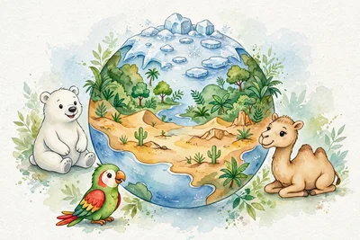
- Đới thiên nhiên là vùng rộng lớn có khí hậu, đất và sinh vật giống nhau. Ví dụ: đới rừng nhiệt đới, đới sa mạc, đới đài nguyên.
- Các đới phân bố chủ yếu theo vĩ độ, từ Xích đạo về hai cực. Càng xa Xích đạo, nhiệt độ càng giảm nên cảnh quan thay đổi theo.
- Nguyên nhân chính là nhiệt độ và lượng mưa khác nhau theo vĩ độ. Hai yếu tố này quyết định cây gì mọc được và loài vật nào sống được ở mỗi đới.
- Gần Xích đạo nhất là rừng nhiệt đới (nóng ẩm quanh năm). Càng đi về cực, trời lạnh dần nên rừng thưa dần rồi thành đài nguyên.
- Xa-van là đồng cỏ cao ở đới nóng, có mùa mưa cây xanh tốt và mùa khô cỏ úa vàng. Ví dụ: xa-van ở châu Phi có nhiều ngựa vằn, hươu cao cổ.
- Đài nguyên ở gần cực nên lạnh giá quanh năm, đất đóng băng, chỉ có cây thấp lùn như rêu, địa y.
- Lên núi cao, cảnh quan thay đổi giống như đi từ Xích đạo về cực: càng lên cao trời càng lạnh. Ví dụ: Hoàng Liên Sơn cao hơn 3000 m nên chân núi nóng ẩm có rừng nhiệt đới, còn đỉnh Phan-xi-păng mùa đông có thể có băng giá.
- Ngay ở Việt Nam cũng thấy rõ: miền Nam gần Xích đạo hơn nên nóng quanh năm, miền Bắc xa Xích đạo hơn nên mùa đông lạnh.

1. Đới thiên nhiên là vùng có khí hậu, đất và sinh vật giống nhau.
2. Các đới phân bố theo vĩ độ: từ Xích đạo về hai cực, nhiệt độ giảm dần.
3. Nguyên nhân chính: nhiệt độ và lượng mưa khác nhau theo vĩ độ.
4. Lên núi cao, cảnh quan đổi giống như đi về cực.
Tự trả lời trong đầu trước, rồi bấm vào câu hỏi để kiểm tra đáp án.
Bài 26. Thực hành: Tìm hiểu môi trường tự nhiên địa phương
- Bước đầu tiên: xác định khu vực sẽ tìm hiểu (quanh trường, quanh nhà) và chuẩn bị dụng cụ: sổ ghi, bút, bản đồ. Chuẩn bị tốt thì quan sát mới đầy đủ.
- Khi quan sát, em ghi chép: thời gian, địa điểm và những gì thấy được về địa hình, nước, cây cối, động vật, thời tiết. Ghi càng cụ thể, báo cáo càng chính xác.
- Vẽ sơ đồ hoặc chụp ảnh giúp ghi lại vị trí, cảnh vật chính xác hơn lời kể. Khi trình bày, có ảnh minh họa thì cả lớp dễ hiểu hơn.
- Ngoài quan sát, em còn có thể hỏi thầy cô, người lớn ở địa phương. Người dân địa phương biết nhiều điều sách vở không có, ví dụ sông nào hay ngập, cây nào trồng lâu năm.
- Sau khi quan sát, em sắp xếp kết quả thành bảng (cột địa điểm, cột nội dung quan sát, cột nhận xét), viết thành báo cáo rồi trình bày trước lớp.
- An toàn là quy tắc đầu tiên: đi thực địa phải có thầy cô hoặc người lớn đi cùng, tránh sông sâu, núi dốc và không hái, bắt sinh vật lạ.
- Quan sát thiên nhiên phải giữ gìn thiên nhiên: không xả rác, không bẻ cành, không bắt sinh vật mang về.
- Phải ghi đúng sự thật, kể cả điều xấu. Ví dụ: nhóm quan sát một con mương gần trường thấy nước đen và có rác thì ghi đúng như vậy, rồi báo với thầy cô và đề xuất cách giữ sạch mương.


1. Bước đầu: xác định khu vực và chuẩn bị dụng cụ (sổ, bút, bản đồ).
2. Quan sát, ghi chép đầy đủ; vẽ sơ đồ, chụp ảnh để báo cáo hay hơn.
3. Hỏi thầy cô, người lớn ở địa phương để hiểu sâu hơn.
4. Lập bảng, viết báo cáo, trình bày trước lớp; luôn an toàn và trung thực.
Tự trả lời trong đầu trước, rồi bấm vào câu hỏi để kiểm tra đáp án.
Bài 27. Dân số và sự phân bố dân cư trên thế giới
- Năm 2022, dân số thế giới đã vượt 8 tỉ người và vẫn đang tăng.
- Dân số tăng nhanh vì y tế tốt hơn: trẻ em chết ít hơn và người sống lâu hơn.
- Dân cư phân bố không đều: nơi đông, nơi thưa. Vì khí hậu, đất đai và việc làm khác nhau từng nơi.
- Đông Á và Nam Á là hai khu vực đông dân nhất thế giới. Ở đó đất bằng, khí hậu thuận lợi và trồng lúa nước nuôi được nhiều người.
- Mật độ dân số là số dân trung bình trên 1 km² đất. Cách tính: số dân chia cho diện tích, đơn vị người/km². Ví dụ: Việt Nam có khoảng 300 người/km².
- Đồng bằng sông Hồng là vùng đông dân nhất Việt Nam, vì đất bằng, nước ngọt dồi dào nên trồng lúa nuôi được nhiều người.
- Đô thị hóa là dân từ nông thôn dồn về thành phố để tìm việc làm, học hành và hưởng dịch vụ tốt hơn. Nhờ vậy thành phố ngày càng đông, nông thôn thưa dần.
- Dân số tăng nhanh gây sức ép lớn: thiếu lương thực, nhà ở, trường học và việc làm.
- Đất tốt, khí hậu tốt mà dân vẫn thưa thì thường do thiếu việc làm, giao thông khó khăn hoặc đất có vấn đề như nhiễm mặn.

1. Năm 2022, dân số thế giới vượt 8 tỉ người và vẫn tăng.
2. Dân số tăng nhanh vì y tế tốt hơn, người sống lâu hơn.
3. Dân cư phân bố không đều: đông ở Đông Á, Nam Á; thưa ở sa mạc, cực lạnh, núi cao.
4. Mật độ dân số = số dân / diện tích (người/km²); Việt Nam khoảng 300 người/km².
Tự trả lời trong đầu trước, rồi bấm vào câu hỏi để kiểm tra đáp án.
Bài 28. Mối quan hệ giữa con người và thiên nhiên
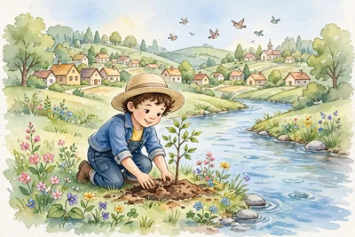
- Thiên nhiên cho con người: không khí để thở, nước để uống, lương thực để ăn, nguyên liệu và năng lượng để sản xuất. Không có thiên nhiên, con người không sống được.
- Con người tác động đến thiên nhiên bằng: trồng trọt, chăn nuôi, xây nhà, làm đường, khai mỏ, làm thủy điện. Những việc này đều làm thay đổi thiên nhiên, có lợi hoặc có hại.
- Tác động tốt: trồng rừng giúp giữ đất, giữ nước; ruộng bậc thang giúp trồng lúa trên núi mà không làm đất trôi (ví dụ ruộng bậc thang Sa Pa).
- Tác động xấu: chặt phá rừng gây lũ lụt, xói mòn đất, nhiều loài mất nhà ở và thức ăn; xả nước thải chưa xử lí xuống sông gây ô nhiễm nước, cá chết, người bệnh; săn bắt quá mức làm mất loài.
- Rừng ngập mặn ven biển có ích lớn: chắn sóng, bảo vệ bờ biển khỏi xói lở và là nơi tôm cá con trú ngụ. Phá rừng ngập mặn để nuôi tôm thì trước mắt có tiền, nhưng sau đó bờ biển sạt lở, thiệt hại còn lớn hơn.
- Thiên nhiên cũng tác động trở lại con người: bão, lũ, hạn hán, động đất gây thiệt hại nhà cửa, mùa màng và tính mạng. Vì vậy con người phải hiểu thiên nhiên để phòng tránh.
- Sống hài hòa với thiên nhiên nghĩa là: dùng vừa đủ, bảo vệ và khôi phục thiên nhiên.
![Hình gợi nhớ](data:image/svg+xml;charset=utf-8,%3Csvg%20viewBox%3D%220%200%20300%20120%22%20style%3D%22width%3A100%25%3Bmax-width%3A400px%3Bheight%3Aauto%3Bdisplay%3Ablock%3Bmargin%3A0%20auto%22%20xmlns%3D%22http%3A%2F%2Fwww.w3.org%2F2000%2Fsvg%22%3E%3Cg%20transform%3D%22translate%2820%2C10%29%20scale%280.9%29%22%3E%3Cpolygon%20points%3D%2214%2C84%2040%2C30%2056%2C58%2070%2C26%2088%2C84%22%20fill%3D%22%2390a4ae%22%20stroke%3D%22%2337474f%22%20stroke-width%3D%222%22%2F%3E%3Cpolygon%20points%3D%2240%2C30%2046%2C42%2034%2C42%22%20fill%3D%22%23ffffff%22%2F%3E%3C%2Fg%3E%3Cg%20transform%3D%22translate%28170%2C10%29%20scale%280.9%29%22%3E%3Crect%20x%3D%2245%22%20y%3D%2266%22%20width%3D%2210%22%20height%3D%2226%22%20fill%3D%22%238d6e63%22%2F%3E%3Ccircle%20cx%3D%2250%22%20cy%3D%2246%22%20r%3D%2226%22%20fill%3D%22%2343a047%22%20stroke%3D%22%232e7d32%22%20stroke-width%3D%222%22%2F%3E%3Ccircle%20cx%3D%2232%22%20cy%3D%2258%22%20r%3D%2214%22%20fill%3D%22%2366bb6a%22%2F%3E%3Ccircle%20cx%3D%2268%22%20cy%3D%2258%22%20r%3D%2214%22%20fill%3D%22%2366bb6a%22%2F%3E%3C%2Fg%3E%3C%2Fsvg%3E)

1. Thiên nhiên cho con người không khí, nước, lương thực, nguyên liệu, năng lượng.
2. Tác động tốt: trồng rừng, ruộng bậc thang giữ đất.
3. Tác động xấu: chặt rừng, xả thải, săn bắt quá mức.
4. Sống hài hòa: dùng vừa đủ, bảo vệ và khôi phục thiên nhiên.
Tự trả lời trong đầu trước, rồi bấm vào câu hỏi để kiểm tra đáp án.
Bài 29. Bảo vệ tự nhiên và khai thác thông minh các tài nguyên thiên nhiên vì sự phát triển bền vững
- Tài nguyên thiên nhiên là của cải sẵn có trong tự nhiên như đất, nước, rừng, khoáng sản. Con người dùng tài nguyên để sống và sản xuất.
- Tài nguyên không tái tạo được: than đá, dầu mỏ, khí đốt. Chúng hình thành hàng triệu năm mới có, dùng hết là hết.
- Tài nguyên tái tạo được: rừng, nước mưa, đất (nếu giữ gìn). Năng lượng tái tạo như năng lượng mặt trời và gió thì dùng mãi không hết, vì mặt trời ngày nào cũng mọc, gió ngày nào cũng thổi.
- Khai thác thông minh nghĩa là: dùng tiết kiệm, đúng mức, tái chế đồ cũ và tìm vật liệu thay thế. Nhờ vậy tài nguyên còn lâu dài cho mai sau.
- Phát triển bền vững nghĩa là: hôm nay đủ ăn, đủ mặc, đủ học mà vẫn để dành tài nguyên cho con cháu mai sau. Nói đơn giản: dùng sao cho con cháu vẫn còn mà dùng.
- Vườn quốc gia là khu vực được bảo vệ nghiêm ngặt để giữ rừng và các loài quý hiếm. Ví dụ: Vườn quốc gia Cúc Phương là vườn quốc gia đầu tiên của Việt Nam.
- Phải cấm săn bắt thú quý hiếm, vì săn bắt nhiều làm loài tuyệt chủng, tức biến mất hoàn toàn khỏi Trái Đất. Mất một loài sẽ làm mất cân bằng thiên nhiên.
- Việc nhỏ mỗi ngày cũng giúp tiết kiệm tài nguyên: tắt điện khi không dùng, tiết kiệm nước, dùng túi vải thay túi ni-lông. Túi ni-lông làm từ dầu mỏ và hàng trăm năm mới phân hủy.

1. Tài nguyên thiên nhiên là của cải sẵn có trong tự nhiên.
2. Không tái tạo được: than đá, dầu mỏ, khí đốt.
3. Khai thác thông minh: dùng tiết kiệm, đúng mức, tái chế.
4. Phát triển bền vững: đủ dùng hôm nay, để dành cho mai sau.
Tự trả lời trong đầu trước, rồi bấm vào câu hỏi để kiểm tra đáp án.
Bài 30. Thực hành: Tìm hiểu mối quan hệ giữa con người và thiên nhiên ở địa phương
- Muốn tìm hiểu quan hệ giữa con người và thiên nhiên ở địa phương, em cần tìm hiểu: người dân dùng đất, nước, rừng ra sao và thiên nhiên thay đổi tốt hay xấu vì những việc đó.
- Các bước làm: xác định nội dung → quan sát, phỏng vấn → lập bảng → đề xuất giải pháp, trình bày.
- Khi phỏng vấn người dân, em cần: xin phép trước, hỏi lịch sự và cảm ơn sau khi hỏi. Tôn trọng người được hỏi thì họ mới vui vẻ chia sẻ điều hay. Đi phỏng vấn luôn có thầy cô hoặc người lớn đi cùng.
- Bảng kết quả thường có 3 cột: việc làm của con người, tác động tốt và tác động xấu. Nhìn vào bảng là thấy ngay việc nào nên làm, việc nào nên tránh.
- Ví dụ tác động tốt: làng chài đánh bắt vừa phải, không dùng thuốc nổ — giúp cá còn sinh sản, năm sau vẫn có cá để đánh. Đó là khai thác thông minh, giữ nguồn lợi lâu dài.
- Ví dụ tác động xấu: nông dân xả thuốc trừ sâu xuống mương gây ô nhiễm nước, cá chết, người dùng nước dễ bị bệnh. Vì vậy cần dùng thuốc đúng cách, đúng liều lượng.
- Khi ghi chép kết quả, thái độ đúng là trung thực: ghi đúng những gì thấy và nghe, kể cả điều chưa tốt. Có trung thực thì giải pháp đề xuất mới đúng và có ích.
- Sau khi tìm hiểu, nhóm cần thảo luận để đề xuất giải pháp bảo vệ thiên nhiên, rồi trình bày trước lớp hoặc tuyên truyền qua báo tường, tranh cổ động.
- Nếu phát hiện một xưởng xả nước bẩn ra sông: nhóm không tự ý cãi nhau với xưởng mà ghi chép, chụp ảnh làm bằng chứng rồi báo thầy cô và chính quyền địa phương. Chính quyền mới có quyền kiểm tra và xử lí.

1. Tìm hiểu: dân dùng thiên nhiên ra sao, thiên nhiên đổi tốt hay xấu.
2. Phỏng vấn: xin phép, hỏi lịch sự, cảm ơn; luôn có người lớn đi cùng.
3. Lập bảng: việc làm, tác động tốt, tác động xấu.
4. Đề xuất giải pháp, trình bày, tuyên truyền; gặp vi phạm thì báo thầy cô, chính quyền.
Tự trả lời trong đầu trước, rồi bấm vào câu hỏi để kiểm tra đáp án.
🎓 Tổng kết Học kì 2 — Ôn lại Bài 24–Bài 30
Ôn lại một lượt 35 thẻ flashcard của Học kì 2 (Bài 24–Bài 30). Thẻ chưa thuộc được xếp lên trước; trạng thái đã thuộc được nhớ chung với các bộ thẻ trong từng bài.
🏁 TỔNG KẾT CẢ NĂM HỌC
Em đã đi hết 31 bài! Nhìn lại toàn cảnh bằng sơ đồ tư duy tổng dưới đây, rồi ôn lại tất cả flashcard và sang phần trắc nghiệm nhé.
Đáp án trắc nghiệm do người soạn biên soạn, chưa đối chiếu đáp án chính thức.